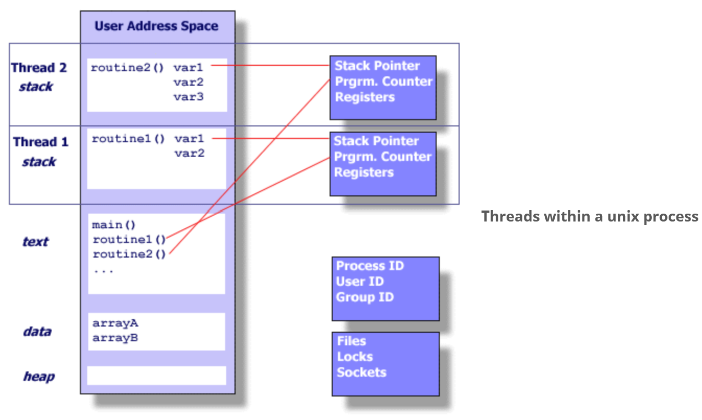
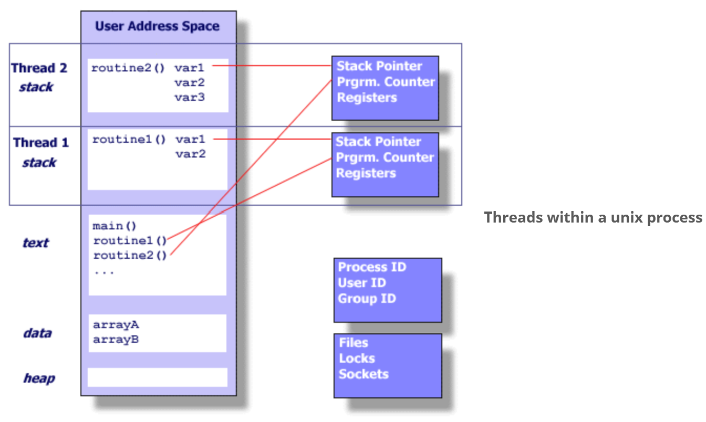
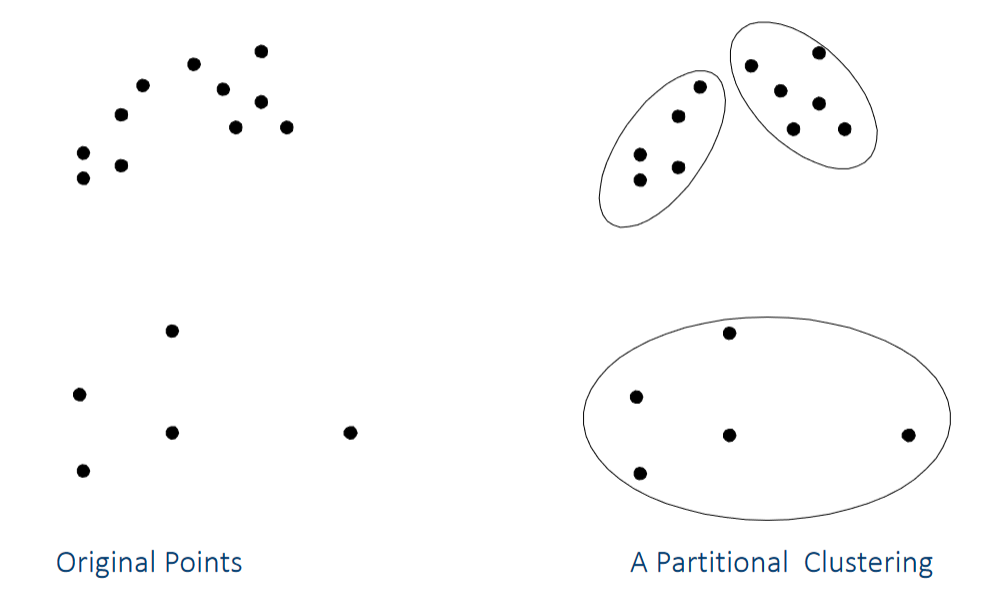
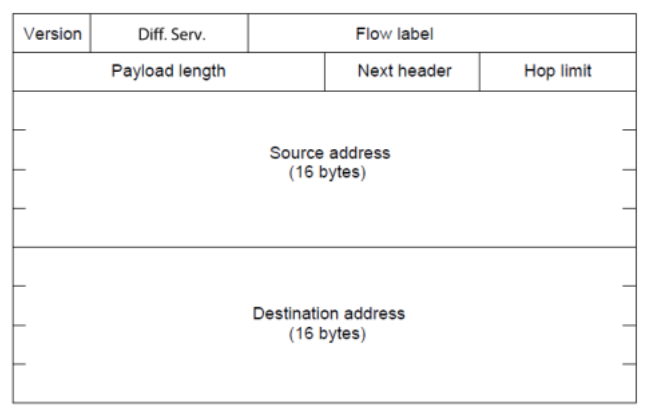

Ontario Tech University - Notes
See the side bar for the list of available pages.
Canvas Bookmarklet
Makes the document previews usable.
javascript:(() => {
let d = document.createElement('div');
d.id = 'bookmarklet-spacing';
d.style.height = window.screen.height.toString() + 'px';
d.style.padding = '2rem';
d.style.display = 'flex';
d.style.flexFlow = 'column nowrap';
d.style.alignItems = 'center';
d.style.justifyContent = 'space-between';
let s1 = document.createElement('span');
s1.textContent = 'Space left intentionally blank';
let s2 = s1.cloneNode(true);
d.appendChild(s1);
d.appendChild(s2);
document.body.appendChild(d);
document.body.classList.remove('course-menu-expanded');
let nav = document.querySelector('#left-side');
nav.style.display = 'none';
let footer = document.querySelector('#sequence_footer');
footer.remove();
let viewport = document.querySelector('#doc_preview > div');
viewport.style.height = (viewport.clientHeight * 2).toString() + 'px';
})();
Massively Parallel Programming
Office Hours
- Professor:
- Tuesdays 1:00pm - 2:00pm (in-person).
- Fridays 10:00am - 11:00am (virtual).
- Otherwise, by appointment.
- TA:
- During labs.
- Otherwise, by appointment.
Labs
- Start the week of Jan. 20th.
Course Resources
- No textbook.
- Course website: https://www.sqrlab.ca/csci4060u/
- Online resources available:
- Under lecture specific pages of the course website.
- Here: https://www.sqrlab.ca/csci4060u/resources-links/
Mark Distribution
| Assesment | Weight |
|---|---|
| Tests (3) | 40% (total) |
| Labs (8) | 40% (total) |
| Final Project | 20% |
Communication
Mainly through Slack.
Introduction
What is Concurrency?
- Two or more execution flows (e.g. threads) run simultaneously.
Introduction of multiple cores within a CPU came alongside a plateau in clock speed improvements.
- Single-threaded software no longer enjoys significant (free!) performance improvements with upgrades of the CPU.
- Re-architecting of single-threaded software is required to take advantage of the multiple cores available on a modern CPU.
Why is Concurrency Difficult?
- Many different possible Interleavings (Scheduled order of concurrent tasks) makes debugging and reproducability difficult.
- Sharing of data and resources between threads is error-prone.
What is Massively Parallel?
A large number of computer processors.

The difference between multicore and manycore?
- A difference in magnitude.
- Multicore refers to having multiple computational cores while manycore refers to having many more multiple computational cores.
Readings
What's the Difference Between a CPU and a GPU?
| CPU | GPU |
|---|---|
| Several cores | Many cores |
| Low latency | High throughput |
| Good for serial processing | Good for parallel processing |
| Can do a handful of operations at once | Can do thousands of operations at once |
- CPUs tend to have few cores with lots of cache memory that can handle a few threads simultaneously.
- GPUs tend to have hundreds of cores that can handle thousands of
threads to achieve parallel computing.
- GPUS do this by allowing you to divide tasks among their many processors.
What Makes Parallel Programming Hard?
Finding Parallelism in Tasks is Hard
- Some tasks are easy to to parallelize:
- Tasks that are independent of each other.
- Tasks with low data dependency.
- ex: Two dudes can paint a wall 2x as fast by painting different halves.
- Some tasks are hard/impossible to parallelize.
- Tasks that are interdependent.
- ex: Cooking (recipe steps often depend on previous steps being completed.)
- Many programs have artificial inter-task dependencies because programmers wrote them with a single-threaded mind set.
- It can be difficult to re-write a program to be multi-thread capable.
Debugging is Difficult
- Different interleavings of tasks, particularly in combination with
shared mutable data, can cause non-deterministic bugs (scheduling
of tasks is non-deterministic.)
- ex: Two threads read a number from shared memory, increment its value by 1,
and write the new value back to memory. The intent is to have the original
value incremented by 2. The following interleaving will produce incorrect
results:
- Thread 1 reads the value from memory and saves it in a local variable.
- Thread 1 increments the local var.
- Thread 2 reads the value from memory and saves it locally.
- Thread 2 increments the local var.
- Thread 1 writes its local value to memory.
- Thread 2 writes its local value to memory.
- ex: Two threads read a number from shared memory, increment its value by 1,
and write the new value back to memory. The intent is to have the original
value incremented by 2. The following interleaving will produce incorrect
results:
Optimizing for Performance is Difficult
Often, the first working version of a parallel version is slower than the serial version:
- Too many (task) dependencies still exist.
- Possible due to iterative removal of these dependencies.
- Contention for hardware resources.
(require '[clojure.core.reducers :as r])
;; Data should be in format: [[a1 b1] [a2 b2] ...]
;; i.e. pairs of numbers, one from each vector.
(defn dot-parallel [vs]
(->> vs
(r/map (fn [[a b]] (* a b)))
(r/fold +)))
(defn dot-sequential [vs]
(transduce
(map (fn [[a b]] (* a b)))
+
vs))
The Free Lunch Is Over...
TL;DR
Terms and other things to consider:
- Cache Coherency.
- Other things...
Apple M1 & M3
A bunch of Apple marketing.
Multicore Hardware
The goal: Increase performance.
Speedup
- Linear Speedup - A speedup factor of with processors.
- SuperLinear Speedup - A speedup factor greater than .
- Is this possible?
- The parallel parts of the program can must execute faster than .
- Possible when parallelization presents opportunities for
optimizations.
- Multicore system processors may have more memory than single processor systems.
- Hardware accelerators may be used in multiprocessor systems that are not available for single processor systems.
- Nondeterministic algorithms. e.g. a solution can be found quickly in one part of the parallel implementation.
Parallel Architectures
Grouped by Instruction stream and Data stream.
- SISD - Single Instruction Single Data.
- Single CPU.
- Instruction level parallelism.
- SIMD - Single Instruction Multiple Data.
- Many core processors.
- Data Level Parallelism - Apply a single instruction to multiple instances of data at the same time.
- MISD - Multiple Instruction Single Data.
- Each processor performs different instructions on the same data.
- Uncommon as an architecture, can be simulated by MIMD.
- MIMD - Multiple Instruction Multiple Data.
- Thread Level Parallelism - Each processor has its own set of instructions and possibly data.
SIMD vs. MIMD
SIMD:
- Single instruction stream, multiple data streams.
- Data level parallelism can be exploited.
MIMD:
- Multiple instruction streams, multiple data streams.
- Thread level parallelism can be exploited.
- Relatively low cost to build due to the use of the same processors as those found in single processor machines.
- More flexible than SIMD.
- Can simulate other architectures.
- Two main sub-categories of MIMD:
- Centralized Shared-Memory.
- processors.
- Memory can become a bottleneck, limiting core count.
- Distributed-Memory.
- processors.
- Communication becomes difficult (e.g. syncing, stale data).
- Centralized Shared-Memory.
Centralized Shared-Memory Architectures
-
Multiple processors on the same die.
-
All processors share memory and I/O devices.
-
Symmetric Multiprocessor (SMP)
- Shared address space.
- "Equal-time" access for each processor.
- OS treats every processor the same way.
-
Non Uniform Address Space Multiprocessor (NUMA)
- Different memory regions have differnt access costs.
- E.g. "Near" vs "Far" memory.
- Different memory regions have differnt access costs.
Distributed-Memory Architectures
- Two important aspects:
- Processors - Often not located on the same chip.
- ex: Clusters.
- Interconnect Network.
- High speed interconnection network for communication across processors.
- Even across long distances (e.g. typically fibre-optics).
- Processors - Often not located on the same chip.
- Can have a shared memory address space or multiple address spaces.
- If using shared memory address spaces: communication can be done via load and store instructions.
- If using multiple address spaces: communication is done via
message-passing.
- MPI - See the message passing library for C.
- Using shared data can have speed consequences if loading/storing
across the interconnect network.
- But the data is kept up-to-date for other processors.
- Using message passing, cores work on local data then send results to others. Has potential for data synchronization issues.
Taking Advantage of MIMD
- Run multiple processes at the same time.
- Build a program that runs multiple threads at the same time.
Instruction-Level vs. Thread-Level Parallelism
- Hardware improvements can have an affect on how we develop software.
- Instruction level parallelism is typically independent of whether software is sequential or concurrent.
- Thread level parallelism (like multicore programming) usually is dependent on the software being concurrent.
- Instruction Level Parallelism - The many instructions contained in each thread. (Low Level, internal to CPU.)
- Thread Level Parallelism - Multiple threads per program. (High Level.)
- Multithreading - An instruction-level approach to multi-threaded
programs.
- Run multiple threads simultaneously.
- Can be used on a single processor system.
- Switch between threads using:
- Fine-Grained Multithreading - Potentially between every instruction.
- Coarse-Grained Multithreading - During an expensive stall.
- Each thread has its own program counter and memory (among other things.)
- Intel Hyperthreading is one approach using Simultaneous Multithreading (SMT).
Symmetric Multicore Design and Asymmetric Multicore Design
- Historically, we started with multiple physically separate CPUs in one system.
- Then multiple cores on the same chip with an internal bus connecting the various cores.
- To, most recently, mixed-core processors or an Asymmetric Multicore Design, Different types of cores on the same chip.
Massively Parallel Systems
- GPU Computing (GPGPU)
- 100s or more GPUs.
- Massively Parallel Processor Arrays (MPPAs)
- Array of 100s of CPUs + RAM.
- Grid Computing
- Nodes performing different tasks.
- Cluster Computing
- Nodes performing the same task.
Concurrency, Parallelism, and Scheduling
Consider a program made up of individual tasks:
- Concurrency - Is when these tasks are capable of being executed at the same time.
- Parallelism - Is when these tasks are executed at the same time.
In this sense, parallel programs are a subset of concurrent programs. Where concurrent programs are capable of, but may decide against, executing their tasks at the same time, parallel programs certainly do.
- A concurrent program that does not run its tasks at the same time
may still progress in each task simultaneously.
- For example, by interrupting progress in one task to work on another.

- Time Slicing - The way tasks are cut up and scheduled on the CPU.
- Generally, the goal is to keep the CPU busy with tasks.
Time Slicing
- Often used to refer to a particular scheduling order.
- Allows running more threads on fewer cores if needed.
ex: 3 tasks, 2 CPUs
- A task might be split up into multiple "time slices".
- Each time slice will be assigned to a CPU.
- Each task may be assigned to different CPUs at different times.
- Maximizes hardware use (maximum parallelism) even if the tasks themselves are not fully parallel.
- Can also be considered as the problem of choosing of when CPUs
swap tasks.
- Context Switches - Swapping from one task (thread) to another. Also called Interleaving Points.
- Happens often when the task awaits some result/resource (possibly shared).
Processes and Threads Review
- Process:
- An instance of program execution.
- The execution context of a running program.
- i.e. the resources associated with a program's execution.
- Threads:
- Light weight processes.
- Threads share process state among multiple threads.
- Greatly reduces cost of switching context.
A Parallel Program May Not Execute Tasks in Parallel
- Not enough hardware (cores).
- Inter-task dependencies forcing linear execution.
- Job scheduling may schedule other programs on free cores instead.
Making Parallel Programs
- Start with a sequential program.
- Divide the program into tasks.
- Identify shared/local data.
- Organize tasks into threads.
- Consider shared/local data.
- Write parallel versions of code guided by steps 2 and 3.
OpenMP
Explicit vs Implicit
implicit - Do not explicitly write parallel code. e.g. Use of annotations, such as compiler directives, to generate a parallel version of your code. explicit - Explicit use of threads and organizing code into parallelizable chunks.
OpenMP
- Uses compiler directives.
#pragma omp <construct> [clause ...] - Uses the
omp.hheader. - Most OpenMP constructs apply to a structured block:
#pragma omp parallel { //Code here... }- Can have
exit()at end of structured block.
- Can have
Constructs of Note
#pragma omp parallel- Denote a parallel region.#pragma omp parallel num_threads(n)- Parallel region with n threads.- Variables declared outside the pragma block are shared amongst threads.
- Only threads are created. The last parallel section is run on the control thread.
Functions of Note
omp_set_num_threads()- Set number of threads.omp_get_thread_num()- Get thread id.
Env Vars
- OMP_NUM_THREADS - Set the number of threads used in parallel code.
Fork-Join
- The Main/Control thread spawns a team of child/spawned threads as needed.
- implicit barrier (by openmp) at join point.
Threads Communicate!
- By sharing data.
- Race Condition - Unintended sharing of data.
- Race conditions ocurr when the program's outcome changes as the threads are scheduled differently.
- Use synchronization techniques to protect data conflicts and prevent race conditions.
- Change how data is accessed to minimize the need for expensive synchronization.
Performance Pit-Falls
- False Sharing - If independent data elements (accessed by different
threads) happen to sit on the same cache line, each update will need to be
reflected across cpu caches.
- If this happens with array elements, contiguous elements may share cache
lines. Pad arrays so independent elements are on distinct cache lines.
- Cache lines are typically 64bytes long.
- If this happens with array elements, contiguous elements may share cache
lines. Pad arrays so independent elements are on distinct cache lines.
Synchronization
- Bringing one or more threads to a well defined and known point in their execution.
- Used to impose order constraints and protect access to shared data.
- Some common forms:
- Barrier - Each thread waits at the barrier until all threads arrive.
- Mutual Exclusion - A block of code that only one thread may execute at a time.
- OpenMP High-level synchronization:
- Critical.
- Atomic.
- Barrier.
- Ordered.
Barriers
Each thread waits until all threads reach the barrier.
#pragma omp barrier
- explicit vs implicit.
- openmp has some implicit ones.
- e.g. at end of parallel block.
Critical
- Mutual Exclusion.
- Only one thread at a time can enter a critical region.
- Can be used to remove the impact of false sharing.
#pragma omp critical
Atomic Constructs
- Provides mutual exclusion, but only to the read/write/update/capture of a memory location.
- An atomic construct ensures that a specific storage location is accessed atomically.
- Can be used to remove the impact of false sharing.
#pragma omp atomic <read|write|update|capture>
SPMD - Single Program Multiple Data And Worksharing
- A program where each thread executes the same code.
- Worksharing - Splitting up pathways through the code between threads.
- There are different ways to achieve this:
- Loop constructs.
- Section(s) constructs.
- Single construct.
- Task construct.
The Loop Construct
- Splits up loop iterations amongst threads.
- How loop iterations are mapped onto threads can be defined with the
scheduleclause (See: OpenMP Slides/docs). - Basic approach:
- Find compute intensive loops.
- Make loop iterations independent.
- Place OpenMP directives
- Test.
- Can handle nested loops.
- Transforms into a single loop of size. This is parallelized.
#pragma omp for
#pragma omp parallel for
#pragma omp parallel for collapse(<num-including-nested>)
Reductions
- How do we handle cases like this:
// A reduction!
double accu = 0.0
double A[MAX];
for (int i = 0; i < MAX; i++) {
accu + = A[i];
}
accu = accu / MAX;
- There is a dependence between loop iterations that can't be trivially removed.
- Use a reduction clause!
#pragma omp parallel for reduction (<op>:<list-of-shared-vars>)
Running Sequentially
- Guard the
omp.hinclude with an#ifdef _OPENMP. - Add
#defines for each openmp function.
lab 01, why is parallel slower.
- Accessing arrays in parallel and cache issues.
- Cross core caches must be kept in sync.
- "False sharing" - false because not needed technically.
- Pad so that different array elements are on different cache lines.
- Cross core caches must be kept in sync.
Posix Threads
- Processes contain information about program resources and program execution
state:
- Process ID & User ID.
- Environment Variables.
- Working Directory.
- Program Instructions.
- CPU state (registers, fault info).
- Memory allocation (stack and heap).
- File Descriptors.
- Signal Actions.
- Shared Libraries.
- Inter-Process Comm. related info (message queues, pipes, semaphores, shared mem.)
 

- Threads contain a minimum of information:
- Stack Pointer.
- Registers.
- Scheduling Properties ("Policy" or priority).
- Thread-Specific data.
A thread:
- Exists within a process.
- Uses the process' resources
- Has its own independent control flow
- Duplicates only the essential resources it needs to be independently schedulable.
- May share the process resources with other threads.
Since threads within the same process share resources:
- Changes made to shared system resources will be seen by all threads.
- Two pointers with the same value point to the same data.
- Reading/Writing to the same memory locations is possible, requires explicit synchronization by the programmer.
Thread Scheduling
-
Non deterministic in thread order.
-
Can't guarantee same program execution.
-
Most non-determinism is not bad.
- Often benign with no negative impact.
-
When it is bad: SQA-concurrency testing needed.
-
Some interleavings exhibit bugs, some schedules may not.
- Test concurrency with many different schedules.
-
Three broad levels affect thread scheduling
- Hardware
- OS (low-level software)
- application level (high-level software)
What impacts thread scheduling?
- Num of Processors.
- Hardware architecture.
- Scheduling algorithm (OS)
- Computer Workload/other running processes.
How do we cause different schedules to occur?
-
Implicit methods:
- Run on different hardware.
- Run on different OS's.
- Vary computer workload.
-
Explicit methods:
- Manual code instrumentation (sleep, wait).
- Automatic code instrumentation (e.g. OSCAR).
- Hook into interpreter (e.g. JVM) to vary threads.
What are Pthreads?
- A set of C library standardizing over hardware vendor's implementation of
threads (at least historically).
- See
pthread.h.
- See
Why Pthreads?
- Can be created and managed with less overhead than processes.
- Distribute computations across cores.
- Performance benefits over certain inter-process communication methods.
- Shared memory requires at least one memory copy operation.
- Threads exist in the same address space within a single process so data "transfer" can simply be passing a pointer.
- Overlaping computations with I/O.
- Priority based scheduling.
- Asynchronous event handling (indeterminate frequency and duration) ex. A web server both transfering data and managing new requests.
Designing Threaded Programs
There are many considerations:
- Parallel model.
- Manager/Worker - A single manager thread assigns work to other worker threads. The manager typically handles all input. Can have a static worker pool or a dynamic worker pool.
- Pipeline - A task is broken into a series of suboperations. Each is handled in sequence, but concurrently, by different threads. Ex: Automobile assembly line.
- Peer - Manager/Worker but the manager participates in the work.
- Problem partitioning.
- Load balancing.
- Inter thread communications.
- Data dependencies.
- Synchronization and race conditions.
- Memory issues.
- I/O issues.
- Program complexity.
- Dev cost/effort/time.
To take advantage of pthreads, a program must be able to be organized into discrete independent tasks that can execute concurrently. The following characteristics indicate suitability for pthreads:
- Blocking on potentially long I/O waits.
- Use of many CPU cycles in some places but not others.
- Must respond to asynchronous events.
- Some work is more important than other work.
Shared Memory Model
- All threads can access the same global shared memory.
- Threads also have private data.
- Programmers are responsible for synchronizing and protecting access to globally shared data.
Thread-Safeness
- An application's ability to execute multiple threads simultaneously without corrupting shared data or creating race conditions.
- Ex: Multiple threads calling a library function which access/modifies a global shared structure. This function is not thread-safe.
Thread Limits
- Maximum number of threads permitted.
- Default thread stack size.
- etc.
Posix API
There are four main groups of interest:
- Thread Management
- Creating threads.
- Detaching threads.
- Joining threads.
- Get/set thread attributes.
- etc.
- Mutexes
- Creating/Destroying Mutexes.
- Locking/Unlocking Mutexes.
- Get/set Mutex attributes.
- Condition Variables
- Communication between threads that share a mutex based on programmer specified conditions.
- Create/Destroy condition variables.
- Wait based on value of a condition variable.
- Signal based on value of a condition variable.
- Get/set condition variable attributes.
- Synchronization
- Functions that manage read/write locks and barriers.
Thread Functions
pthread_create(thread_id, attr, fn, args)pthread_exit(status)pthread_cancel(thread_id)pthread_attr_tpthread_attr_init(attr)pthread_attr_destroy(attr)pthread_attr_setdetachstate()pthread_detach()pthread_attr_getstacksize(attr, stacksize)pthread_attr_setstacksize(attr, stacksize)pthread_attr_getstackaddr(attr, stackaddr)pthread_attr_setstackaddr(attr, stackaddr)pthread_self()pthread_equal(thread1, thread2)pthread_once(once_control, init_routine)pthread_mutex_tpthread_mutex_init(mutex, attr)pthread_mutex_destroy(mutex, attr)pthread_mutexattr_tpthread_mutexattr_init(attr)pthread_mutexattr_destroy(attr)pthread_mutex_lock(mutex)pthread_mutex_trylock(mutex)pthread_mutex_unlock(mutex)pthread_cond_tpthread_cond_init(cond, attr)pthread_cond_destroy(cond)pthread_condattr_tpthread_condattr_init(attr)pthread_condattr_destroy(attr)pthread_cond_wait(cond, mutex)pthread_cond_signal(cond)pthread_cond_broadcast(cond)
Attributes include:
- Detached/Joinable state.
- Scheduling Inheritance.
- Scheduling Policy.
- Scheduling Parameters.
- Scheduling contention scope.
- Stack size.
- Stack address.
- Stack guard (overflow) size.
Thread Binding and Scheduling
- It is generally up to the imlementation or OS to decide where and when threads execute.
- pthreads does provide several functions to specify how threads are scheduled for execution (e.g. FIFO, Round-Robin, Other).
- pthreads does not provide functions for binding threads to specific cores, but non-standard (or OS specific) extensions may exist.
Thread Termination
- The thread returns normally from its starting function.
- The thread calls
pthread_exit(). - The thread is canceled by another thread via
pthread_cancel(). - The entire process is terminated due to
exec()orexit(). main()terminates first without callingpthread_exit()itself.- Calling
pthread_exit()will causemainto block and wait for the threads it created to finish.
- Calling
Mutexes
As used in pthreads:
- Only one thread can lock (or own) a mutex at any given time.
- For other threads to lock an owned mutex, the owning thread must unlock the mutex.
- Can be used to prevent race conditions.
- It is the programmer's responsibility to ensure that every thread that should use a mutex actually uses one.
- Implement synchronization by controlling thread access to data.
- There are three attributes defined by the standard:
- Protocol - Specify the protocol used to prevent priority inversions.
- Prioceiling - The priority ceiling of a mutex.
- Process-Shared - Whether the mutex can be seen by threads in another process.
- When more than one thread is waiting for a previously locked mutex that was just unlocked, the next thread to aquire the lock is dependent on the system scheduler (unless thread proiority scheduling is used).
Condition Variables
- Allow threads to synchronize based on the value of data.
- Without conditions, threads would have to continuously poll to check if the
condition is met.
- Can be resource consuming.
- Always used in conjunction with a mutex lock.
- Use (roughly) this way:
- Declare global data which requires synchronization.
- Initialize a condition variable object.
- Initialize an associated mutex.
- Create two threads.
- In thread A:
- Lock the mutex.
- Check the value of the global variable.
- If the condition hasn't been met, call
pthread_cond_wait().- This will unlock the mutex and wait until the condition object has been signalled.
- When signalled, the thread resumes and the mutex is locked again.
- Continue work, then unlock the mutex.
- In thread B:
- Lock the associated mutex.
- Change the value of the global variable that thread A is waiting on.
- If the new value fulfills the condition, signal via the condition variable object.
- Unlock the mutex.
- One attribute exists for condition variables:
process-shared.- Allows the condition variable to be seen by threads in other processes.
trylock() into lock() slower than just lock() at sufficiently large number of threads compared to additional work. Thread/lock/resource contention.
Compilers
Office Hours
- Professor:
- Tuesdays 1:00pm - 2:00pm (in-person).
- Fridays 10:00am - 11:00am (virtual).
- Otherwise, by appointment.
- TA:
- During labs.
- Otherwise, by appointment.
Labs
- Alternate every other week starting week 2.
Course Resources
- Course website: https://csci4020u.science.ontariotechu.ca
- The Definitive ANTLR 4 Reference 2nd edition.
Mark Distribution
| Assesment | Weight |
|---|---|
| Quizzes (10) | 10% (total) |
| Labs (6) | 9% (total) |
| Assignments (3) | 36% (total) |
| Midterm | 15% |
| Final Exam | 30% |
Introduction
Human Computer Communication
Computation happens within an "environment".
- Runtime Environment - An "environment" which supports the execution of
a software program.
- CLR, JRE, or broader including env vars, common libs, dir structure, etc.
- Available/defined variables, functions, arrays, structs, and memory access for ex: C++.
- A program/human must be able to communicate with the runtime environment.
Communicating With Foundational Models
- For a Turing Machine:
- A tape with cells containing symbols.
- A read/write head to access and update the tape.
- Control logic for head movement and read/write ops.
- Programmed via specifying the control logic.
- Lambda Calculus:
- Names, fn decleration, fn application.
- Rewrite rules (alpha, beta, eta).
- Human Computer communication occurs during programming of these models.
Some Runtime Environments.
- C Programming Language:
- Variables, functions, arrays, structs, direct memory access.
- SQL:
- Relational tables, First order logic.
- Relational algebra with aggregation.
Design Space
- There is typically a tradeoff between expressiveness and intuitiveness of models and designs.
Backend of Programming Languages
Elements of a Turing Complete Language
- Data representation.
- Array-like memory storage.
- Looping.
- Branch Control.
2 things of concern:
- Runtime efficiency.
- User experience.
Why Not Use a Turing Machine as The Backend?
- Too inefficient.
- Lacks strong types.
- Does not support modern processor's optimization features.
JVM Bytecode
- Simple instruction based runtime environment with:
- An operand stack (32-bit or 64-bit cells).
- 32-bits: integer, float, hot-spot reference.
- 64-bits: long, double, reference(general).
- A local variable array.
- A heap for dynamic memory allocation.
- Constant pool for storing constants.
- An operand stack (32-bit or 64-bit cells).
jasmin.jar - Java "assembly" -> JVM Bytcode.
- Can get from course jupyter server.
Better Programming Interface Wanted!
A higher level abstraction (e.g. a programming language) can provide better:
- Semantics: A better abstraction of a runtime environment.
- Syntax: A better symbolic description of the computing process.
- Verification: Safer communication to minimize human errors.
- Compilation: Generate code into ex: Java Bytecode for faster execution.
Notes
local var 0 is typically used for the this pointer.
- Always
.limit localsto n + 1 needed vars.
Semantics and Syntax of Higher Level Languages
Syntax is the main medium of communication between the dev and the backend.
- Data abstraction - Concerns itself with how data is described.
- Runtime abstraction/code execution - Concerns itself with how the data is processed.
Data Abstraction
Aides in describing data.
-
Syntax.
-
Type system.
-
Symbol Names - Semantic names can be given to data.
-
Type Annotations - Can annotate values with type information to make verification possible.
Rich Data Structures
Backends like the JVM runtime have memory designs (stack, local vars, heap) oriented towards performance. Programming languages have the oportunity to offer richer data structures to express memory layouts that suit the needs of the application.
- Arrays.
- Dictionaries.
- Strongly typed data structures.
- Aggregates:
- Records, structs, etc.
Advanced Typing Features
- Dependent typing.
- TODO: List more examples.
Runtime Abstraction
How data is processed and how code is executed.
-
Scopes, modules, functions.
-
Data types.
-
Concurrency.
-
etc.
-
Values are assigned to variables.
-
Variables are valid within defined scopes.
- Scopes can be nested.
Multicore Architecture
- Languages can take a structured approach to defining code that runs in
multiple threads. See Kotlin's
kotlin.concurrent.threadpackage or Go's coroutines and channels. - Threaded execution has non-deterministic order.
- Languages often provide ways to have inter-thread communication.
Lexical Analysis
- Alphabet - A finite collection of symbols called Tokens denoted with .
- Token - An individual symbol. A unit of source code that consists of a Lexeme and a Token Type.
- Token Type - A category of Tokens.
- Strings - Sequences of symbols from the alphabet .
- We concern ourselves with finite strings.
- The set of all finite strings is denoted by
- A snippet of code is considered a string over some alphabet of lexemes.
- Lexeme - The graphical/visual representation of a Token. A substring in the source code.
- Language - A subset of strings in :
- If some string , we say that is valid with respect to the language .
- Strings can have different encodings but still represent the same thing.
- e.g. ASCII chars, binary, token set, etc. encodings.
- Conversion between different encodings (and thus alphabets) is possible.
Tokenization
- Taking the encoded string of a language and converting it to a sequence of tokens.
- Tokens can belong to categories also called token types.
- These token types can be defined to best describe strings of a language.
The goal is to convert the source code of a language () into a token stream (). The exact set of tokens used is specific to the language.
For example, Java source written with ASCII chars gets tokenized into a stream of tokens:
// Some tokens in this example are: 'class', '{', '}'
// We could define an ID token type that represent all possible Java
// identifiers.
class MyClass {
int myId;
}
- We encode as a pair of Token Type and Lexeme to ensure we can reconstruct the original string.
- If we denote all possible tokens as , the lexical analyzer, or lexer, is a function:
General Design of a Lexical Analyzer
- Token types can be defined with reqular expresion syntax.
- Strings are scanned left to right.
- Track the current position.
- Try to match patterns at the current position. Multiple may apply.
- Decide on how to solve ambiguity:
- e.g. Longest match wins.
- First rule defined wins.
ANTLR
A parser generator for the JVM.
- Made up of declarative rules.
- Lexer rules are in UPPER CASE.
- parser rules are in lower case.
@lexer::header { ... }allows injecting code before the generated lexer class.
How to use the generated SimpleLexer.class for a SimpleLexer grammar file?
- Obtain a CharStream(s): org.antlr.v4.runtime
- Obtain a SimpleLexer(charstream): Implementation generated by antlr.
- Obtain a commonTokenStream from the lexer.
TestRig
# Output lexed tokens.
java -cp $(CLASSPATH) org.antlr.v4.gui.TestRig \
my.SampleLexer \
tokens -tokens \
files/sample.txt
Advanced Lexical Analysis
- Fragments - Reusable patterns.
fragment TOKENPATTERN : ... ; - Channels - A way to have different token streams.
- e.g. the
skipchannel.WHITESPACE : ... -> skip ;
- e.g. the
- Modes - Change lexer context. See the phenomenon known as an Island Language.
- These "islands" are portions of the source that can be thought of as being disconnected from the rest of the code. ex: Comments.
- Different lexer rules may apply to the same lexeme in different modes.
RULE1 : ... ; COMMENT : ... -> pushMode(newMode) ; mode newMode; NEWMODERULE1 : ... ; NEWMODERULE2 : ... -> popMode ;
Automata
An Automaton is defined by five things:
-
- A finite set of states.
-
- The alphabet of the input.
-
- A transition function mapping a set of old states to a set of new states given the next symbol in the input.
-
- The initial state.
-
- A set of final states.
-
A Deterministic Finite Automaton is deterministic in that the function returns a one or zero states for each transition.
- It also returns exactly zero states for any -transition.
-
A Non-Deterministic Finite Automaton has a transition function that can return two or more states for each transition.
-
All DFA are NFA, but not the other way around.
-
A string is accepted by an Automaton if a final state can be reached by the string from the initial state.
Transitions can be visualized with a transition diagram similar to the one below. It has:
- States.
- Transitions as arrows.
- Text attached to arrows represent transition labels.
- Labels are tokens in the alphabet or the special token .
- Note: .
- Start and Final states.
- At most target states. e.g. The powerset of .
--- title: An Example Automaton --- stateDiagram-v2 direction LR classDef finalstate ;fill:yellow;stroke-width:2px;stroke-dasharray:5px,2px; [*] --> q0 q0 --> q1: a q1 --> q3: b q0 --> q2: ϵ q2 --> q1: c q2 --> q3: c class q3 finalstate
-Closure of States
Given , the is a set of the states in that can be reached by zero or more -transitions starting at each state in .
Extending Transitions Over
- States reachable from a source state via a symbol and zero or more -transitions:
Extending Transitions Over Strings
- States reachable from via a string :
Languages
- A language is a subset of .
- The language of a finite automaton is the set of all strings in that are accepted by the automaton.
- By definition: .
- Thus:
- By a given theorem: .
- Thus:
- Given an NFA, we can construct a DFA.
Powerset Construction of a DFA From an NFA
Given an NFA defined by , we can construct an equivalent DFA :
- - Each DFA state is a subset of the NFA states.
- .
- = Each set where .
- is defined as: and described as a table.
- The powerset construction removes epsilon transitions when applied to an NFA.
- TODO: Example.
Regular Expressions
- Direct Match - Given a symbol : matches the string "a"
- Concatenation - e.g. Given two symbols and :
- Alternation - Given two symbols and :
- Optional - Given a symbol : matches both: "a" and ""
- Repetition - Given a symbol : matches "", "a", "aa", etc.
Regular Language - A language is regular if there exists some regular expression which describes it. All regular languages are denoted .
The three languages we have defined are all equivalent:
Thompson's Construction
- Used to convert a regex into an NFA with the equivalent language.


Limitations
Consider a language of s followed by s:
- ""
- "01"
- "000111"
- etc.
For any specific , is regular.
- As grows, the NFA for requires more states.
- requires infinite states.
- is not regular ().
CFGs & Ambiguity
- Symbols - Part of the alphabet.
- - Terminals, the tokens. Generally lower case throughout notes.
- - Syntactic Variables, Non-Terminals. Upper case throughout notes.
- The alphabet is .
- Start Symbol - Generally denoted .
- Production Rules -
- - The head of the production.
- - The body of the production.
- CFG - A collection of productions and a start symbol.
- Denoted .
- defines a language .
- Productions describe how the head can be replaced by its body.
- Ex:
- Sentential Form - Given a CFG with start symbol , is a sentential form if produces ().
- Sentence - is a sentence of if is a sentential form
of and only contains terminal symbols.
- is all the sentences of .
- CFGs are strictly more powerful than REs.
Parse Trees
- Grammar is syntax.
- Strings are the programs.
- Parse trees are the interpretations.
- Can represent the productions applied to match a string as a tree.
- Root is the start symbol.
- Intermediate nodes are Syntactic Variables.
- Leaf nodes are Terminals.
For the grammar G: The derivation for and its tree are as follows:
S
|
+----+--+--+----+
| | | |
| S S |
| | | |
'a' '0' '1' 'b'
Ambiguity
Software Security
Office Hours
- Wednesdays 9:40am - 10:30am
- Fridays 11:10am - 12:20pm
Labs
Course Resources
Mark Distribution
| Assesment | Weight |
|---|---|
| Labs | 30% (total) |
| Midterm | 30% |
| Juice Shop Challenges | 15% |
| CTF Project - Presentation | 5% |
| CTF Project - Challenge & Write-up | 20% |
Introduction
General Security Tools
Methodology
nmap
- Port scanner.
- Can be used:
- on an entire subnet to find machines.
- to find open services on machines.
- to run scripts to test for specific vulnerabilities.
- Typically start with TCP scans, then move on to UDP/others.
Examples
Many of these are not expected in ordinary operation of software so they may stand out in software logs.
# TCP connect scan.
# Default for non-root.
# Full three-way handshake.
nmap -sT 192.168.0.1-254
# SYN scan.
# Default for root.
# Send only the SYN initial packet
nmap -sS 192.168.0.1/24
# UDP scan.
# Single udp message.
# Ports without an attached process should respond with an "ICMP port unreachable".
nmap -sU <ip>
# NULL scan.
# Closed ports should respond with a RST packet (reset).
# Send a packet with no flags set.
nmap -sN <ip>
# FIN scan.
# Close a non-existant connection.
# Closed ports should respond with a RST packet.
nmap -sF <ip>
nmap and Firewalls
# XMAS scan.
# May bypass some firewalls.
# All flags set.
nmap -sX <ip>
# ACK scan.
# Send ack flag (can seen as part of an ongoing connection)
# Usefull for detecting stateless firewalls (typical in companies)
# Stateless firewalls do not track connections, won't be able to filter this.
nmap -sA <ip>
nmap Other Options
# List scan.
# Only list and DNS reverse lookup.
# Sends no packets to host.
nmap -sL <ip>
# No port scan.
# Do not perform port scan after discovering host.
nmap -sn <ip>
# No ping scan.
# Default scan, no ping.
# Port scan will always run even if host appears to be down.
nmap -Pn <ip>
# No DNS lookup.
# Default scan, but no DNS reverse lookup.
nmap -n <ip>
nmap Port Scanning Options
- Default:
nmap <ip>- Scans ports 1-1000.
- Complete port scan:
nmap -p- <ip>- Scans ports 1-65535.
- Fast port scan:
nmap -F <ip>- Scans ports listed in your
/etc/services.
- Scans ports listed in your
- Top port scan:
nmap -top-ports <n> <ip>- Scans ports top
nmost common ports.
- Scans ports top
nmap Fingerprinting
service typically during port scan os typically first
# Identifying the OS + version.
nmap -O <ip>
# Identifying the app + version of each service on a host.
nmap -sV <ip>
# Aggressive scan.
# OS detection, service detection, scripts, and tracerout.
nmap -A <ip>
nmap Scripts
Run currated, built-in scripts.
# Vulnerability scripts.
# Run every script in the 'vuln' category.
# Checks for known CVEs.
nmap -sV -script vuln <ip>
# Run default scripts.
nmap -sV -sC <ip>
hack-the-box + wireshark connection to listen on: tun0
importing burpsuit CA cert: remember to manually give file .der extension.
Fuzzing
- ffuf tool.
- can use wordlist.
- replaces literal "FUZZ" with fuzz payload.
- demos.
file attacks
Open Redirect
- A page in the application redirects to a URL that is (partially) supplied
with user data:
- https://a.site.org/router?file=index.html
- User input can come from:
- POST form data.
- HTML attributes.
- URL params.
- Cookies.
- Database data.
- Any user data.
File attacks II
protections
- strip preceding '/' (not effective)
- could use double leading '/': '//etc/passwd'
- reject non-relative paths (not effective)
- could use '..': '../../../../etc/passwd'
- sometimes '....', etc. also work.
- append an file extension (not effective)
- could use certain characters to terminate string early: '/etc/passwd%00.png'
- '%00' could be interpreted as null terminator.
- other encodings (e.g. urlencoded %2e%2e%2f = '../')
- see slides
File Upload +
session attacks protections: prefer to not hash publicly available info.
Introduction
General Security Tools
Methodology
nmap
- Port scanner.
- Can be used:
- on an entire subnet to find machines.
- to find open services on machines.
- to run scripts to test for specific vulnerabilities.
- Typically start with TCP scans, then move on to UDP/others.
Examples
Many of these are not expected in ordinary operation of software so they may stand out in software logs.
# TCP connect scan.
# Default for non-root.
# Full three-way handshake.
nmap -sT 192.168.0.1-254
# SYN scan.
# Default for root.
# Send only the SYN initial packet
nmap -sS 192.168.0.1/24
# UDP scan.
# Single udp message.
# Ports without an attached process should respond with an "ICMP port unreachable".
nmap -sU <ip>
# NULL scan.
# Closed ports should respond with a RST packet (reset).
# Send a packet with no flags set.
nmap -sN <ip>
# FIN scan.
# Close a non-existant connection.
# Closed ports should respond with a RST packet.
nmap -sF <ip>
nmap and Firewalls
# XMAS scan.
# May bypass some firewalls.
# All flags set.
nmap -sX <ip>
# ACK scan.
# Send ack flag (can seen as part of an ongoing connection)
# Usefull for detecting stateless firewalls (typical in companies)
# Stateless firewalls do not track connections, won't be able to filter this.
nmap -sA <ip>
nmap Other Options
# List scan.
# Only list and DNS reverse lookup.
# Sends no packets to host.
nmap -sL <ip>
# No port scan.
# Do not perform port scan after discovering host.
nmap -sn <ip>
# No ping scan.
# Default scan, no ping.
# Port scan will always run even if host appears to be down.
nmap -Pn <ip>
# No DNS lookup.
# Default scan, but no DNS reverse lookup.
nmap -n <ip>
nmap Port Scanning Options
- Default:
nmap <ip>- Scans ports 1-1000.
- Complete port scan:
nmap -p- <ip>- Scans ports 1-65535.
- Fast port scan:
nmap -F <ip>- Scans ports listed in your
/etc/services.
- Scans ports listed in your
- Top port scan:
nmap -top-ports <n> <ip>- Scans ports top
nmost common ports.
- Scans ports top
nmap Fingerprinting
service typically during port scan os typically first
# Identifying the OS + version.
nmap -O <ip>
# Identifying the app + version of each service on a host.
nmap -sV <ip>
# Aggressive scan.
# OS detection, service detection, scripts, and tracerout.
nmap -A <ip>
nmap Scripts
Run currated, built-in scripts.
# Vulnerability scripts.
# Run every script in the 'vuln' category.
# Checks for known CVEs.
nmap -sV -script vuln <ip>
# Run default scripts.
nmap -sV -sC <ip>
hack-the-box + wireshark connection to listen on: tun0
importing burpsuit CA cert: remember to manually give file .der extension.
Fuzzing
- ffuf tool.
- can use wordlist.
- replaces literal "FUZZ" with fuzz payload.
- demos.
file attacks
Open Redirect
- A page in the application redirects to a URL that is (partially) supplied
with user data:
- https://a.site.org/router?file=index.html
- User input can come from:
- POST form data.
- HTML attributes.
- URL params.
- Cookies.
- Database data.
- Any user data.
File attacks II
protections
- strip preceding '/' (not effective)
- could use double leading '/': '//etc/passwd'
- reject non-relative paths (not effective)
- could use '..': '../../../../etc/passwd'
- sometimes '....', etc. also work.
- append an file extension (not effective)
- could use certain characters to terminate string early: '/etc/passwd%00.png'
- '%00' could be interpreted as null terminator.
- other encodings (e.g. urlencoded %2e%2e%2f = '../')
- see slides
File Upload +
session attacks protections: prefer to not hash publicly available info.
Introduction
General Security Tools
Methodology
nmap
- Port scanner.
- Can be used:
- on an entire subnet to find machines.
- to find open services on machines.
- to run scripts to test for specific vulnerabilities.
- Typically start with TCP scans, then move on to UDP/others.
Examples
Many of these are not expected in ordinary operation of software so they may stand out in software logs.
# TCP connect scan.
# Default for non-root.
# Full three-way handshake.
nmap -sT 192.168.0.1-254
# SYN scan.
# Default for root.
# Send only the SYN initial packet
nmap -sS 192.168.0.1/24
# UDP scan.
# Single udp message.
# Ports without an attached process should respond with an "ICMP port unreachable".
nmap -sU <ip>
# NULL scan.
# Closed ports should respond with a RST packet (reset).
# Send a packet with no flags set.
nmap -sN <ip>
# FIN scan.
# Close a non-existant connection.
# Closed ports should respond with a RST packet.
nmap -sF <ip>
nmap and Firewalls
# XMAS scan.
# May bypass some firewalls.
# All flags set.
nmap -sX <ip>
# ACK scan.
# Send ack flag (can seen as part of an ongoing connection)
# Usefull for detecting stateless firewalls (typical in companies)
# Stateless firewalls do not track connections, won't be able to filter this.
nmap -sA <ip>
nmap Other Options
# List scan.
# Only list and DNS reverse lookup.
# Sends no packets to host.
nmap -sL <ip>
# No port scan.
# Do not perform port scan after discovering host.
nmap -sn <ip>
# No ping scan.
# Default scan, no ping.
# Port scan will always run even if host appears to be down.
nmap -Pn <ip>
# No DNS lookup.
# Default scan, but no DNS reverse lookup.
nmap -n <ip>
nmap Port Scanning Options
- Default:
nmap <ip>- Scans ports 1-1000.
- Complete port scan:
nmap -p- <ip>- Scans ports 1-65535.
- Fast port scan:
nmap -F <ip>- Scans ports listed in your
/etc/services.
- Scans ports listed in your
- Top port scan:
nmap -top-ports <n> <ip>- Scans ports top
nmost common ports.
- Scans ports top
nmap Fingerprinting
service typically during port scan os typically first
# Identifying the OS + version.
nmap -O <ip>
# Identifying the app + version of each service on a host.
nmap -sV <ip>
# Aggressive scan.
# OS detection, service detection, scripts, and tracerout.
nmap -A <ip>
nmap Scripts
Run currated, built-in scripts.
# Vulnerability scripts.
# Run every script in the 'vuln' category.
# Checks for known CVEs.
nmap -sV -script vuln <ip>
# Run default scripts.
nmap -sV -sC <ip>
hack-the-box + wireshark connection to listen on: tun0
importing burpsuit CA cert: remember to manually give file .der extension.
Fuzzing
- ffuf tool.
- can use wordlist.
- replaces literal "FUZZ" with fuzz payload.
- demos.
file attacks
Open Redirect
- A page in the application redirects to a URL that is (partially) supplied
with user data:
- https://a.site.org/router?file=index.html
- User input can come from:
- POST form data.
- HTML attributes.
- URL params.
- Cookies.
- Database data.
- Any user data.
File attacks II
protections
- strip preceding '/' (not effective)
- could use double leading '/': '//etc/passwd'
- reject non-relative paths (not effective)
- could use '..': '../../../../etc/passwd'
- sometimes '....', etc. also work.
- append an file extension (not effective)
- could use certain characters to terminate string early: '/etc/passwd%00.png'
- '%00' could be interpreted as null terminator.
- other encodings (e.g. urlencoded %2e%2e%2f = '../')
- see slides
File Upload +
session attacks protections: prefer to not hash publicly available info.
Introduction
General Security Tools
Methodology
nmap
- Port scanner.
- Can be used:
- on an entire subnet to find machines.
- to find open services on machines.
- to run scripts to test for specific vulnerabilities.
- Typically start with TCP scans, then move on to UDP/others.
Examples
Many of these are not expected in ordinary operation of software so they may stand out in software logs.
# TCP connect scan.
# Default for non-root.
# Full three-way handshake.
nmap -sT 192.168.0.1-254
# SYN scan.
# Default for root.
# Send only the SYN initial packet
nmap -sS 192.168.0.1/24
# UDP scan.
# Single udp message.
# Ports without an attached process should respond with an "ICMP port unreachable".
nmap -sU <ip>
# NULL scan.
# Closed ports should respond with a RST packet (reset).
# Send a packet with no flags set.
nmap -sN <ip>
# FIN scan.
# Close a non-existant connection.
# Closed ports should respond with a RST packet.
nmap -sF <ip>
nmap and Firewalls
# XMAS scan.
# May bypass some firewalls.
# All flags set.
nmap -sX <ip>
# ACK scan.
# Send ack flag (can seen as part of an ongoing connection)
# Usefull for detecting stateless firewalls (typical in companies)
# Stateless firewalls do not track connections, won't be able to filter this.
nmap -sA <ip>
nmap Other Options
# List scan.
# Only list and DNS reverse lookup.
# Sends no packets to host.
nmap -sL <ip>
# No port scan.
# Do not perform port scan after discovering host.
nmap -sn <ip>
# No ping scan.
# Default scan, no ping.
# Port scan will always run even if host appears to be down.
nmap -Pn <ip>
# No DNS lookup.
# Default scan, but no DNS reverse lookup.
nmap -n <ip>
nmap Port Scanning Options
- Default:
nmap <ip>- Scans ports 1-1000.
- Complete port scan:
nmap -p- <ip>- Scans ports 1-65535.
- Fast port scan:
nmap -F <ip>- Scans ports listed in your
/etc/services.
- Scans ports listed in your
- Top port scan:
nmap -top-ports <n> <ip>- Scans ports top
nmost common ports.
- Scans ports top
nmap Fingerprinting
service typically during port scan os typically first
# Identifying the OS + version.
nmap -O <ip>
# Identifying the app + version of each service on a host.
nmap -sV <ip>
# Aggressive scan.
# OS detection, service detection, scripts, and tracerout.
nmap -A <ip>
nmap Scripts
Run currated, built-in scripts.
# Vulnerability scripts.
# Run every script in the 'vuln' category.
# Checks for known CVEs.
nmap -sV -script vuln <ip>
# Run default scripts.
nmap -sV -sC <ip>
hack-the-box + wireshark connection to listen on: tun0
importing burpsuit CA cert: remember to manually give file .der extension.
Fuzzing
- ffuf tool.
- can use wordlist.
- replaces literal "FUZZ" with fuzz payload.
- demos.
file attacks
Open Redirect
- A page in the application redirects to a URL that is (partially) supplied
with user data:
- https://a.site.org/router?file=index.html
- User input can come from:
- POST form data.
- HTML attributes.
- URL params.
- Cookies.
- Database data.
- Any user data.
File attacks II
protections
- strip preceding '/' (not effective)
- could use double leading '/': '//etc/passwd'
- reject non-relative paths (not effective)
- could use '..': '../../../../etc/passwd'
- sometimes '....', etc. also work.
- append an file extension (not effective)
- could use certain characters to terminate string early: '/etc/passwd%00.png'
- '%00' could be interpreted as null terminator.
- other encodings (e.g. urlencoded %2e%2e%2f = '../')
- see slides
File Upload +
session attacks protections: prefer to not hash publicly available info.
SQL Injection
- User supplied data is inserted into an SQL statement without any cleaning or validation of said data.
- The structure/intention of the SQL statement is modified.
-- The following is susceptible to an SQL injection:
SELECT username FROM auth WHERE username = '{uname}' AND password = '{pword}';
-- Consider the input: uname = `a' OR 1=1; --` & pword = `abc`
SELECT username FROM auth WHERE username = 'a' OR 1=1; --' AND password = 'abc';
Protections
- Prepared statements.
- Hide errors - e.g. Return no results. Don't give away any info.
- Don't trust user-supplied data, even if it was already in the database.
Tools
SQLMap
- Automates some tedious database recovery tasks.
TODO: Examples
Introduction
General Security Tools
Methodology
nmap
- Port scanner.
- Can be used:
- on an entire subnet to find machines.
- to find open services on machines.
- to run scripts to test for specific vulnerabilities.
- Typically start with TCP scans, then move on to UDP/others.
Examples
Many of these are not expected in ordinary operation of software so they may stand out in software logs.
# TCP connect scan.
# Default for non-root.
# Full three-way handshake.
nmap -sT 192.168.0.1-254
# SYN scan.
# Default for root.
# Send only the SYN initial packet
nmap -sS 192.168.0.1/24
# UDP scan.
# Single udp message.
# Ports without an attached process should respond with an "ICMP port unreachable".
nmap -sU <ip>
# NULL scan.
# Closed ports should respond with a RST packet (reset).
# Send a packet with no flags set.
nmap -sN <ip>
# FIN scan.
# Close a non-existant connection.
# Closed ports should respond with a RST packet.
nmap -sF <ip>
nmap and Firewalls
# XMAS scan.
# May bypass some firewalls.
# All flags set.
nmap -sX <ip>
# ACK scan.
# Send ack flag (can seen as part of an ongoing connection)
# Usefull for detecting stateless firewalls (typical in companies)
# Stateless firewalls do not track connections, won't be able to filter this.
nmap -sA <ip>
nmap Other Options
# List scan.
# Only list and DNS reverse lookup.
# Sends no packets to host.
nmap -sL <ip>
# No port scan.
# Do not perform port scan after discovering host.
nmap -sn <ip>
# No ping scan.
# Default scan, no ping.
# Port scan will always run even if host appears to be down.
nmap -Pn <ip>
# No DNS lookup.
# Default scan, but no DNS reverse lookup.
nmap -n <ip>
nmap Port Scanning Options
- Default:
nmap <ip>- Scans ports 1-1000.
- Complete port scan:
nmap -p- <ip>- Scans ports 1-65535.
- Fast port scan:
nmap -F <ip>- Scans ports listed in your
/etc/services.
- Scans ports listed in your
- Top port scan:
nmap -top-ports <n> <ip>- Scans ports top
nmost common ports.
- Scans ports top
nmap Fingerprinting
service typically during port scan os typically first
# Identifying the OS + version.
nmap -O <ip>
# Identifying the app + version of each service on a host.
nmap -sV <ip>
# Aggressive scan.
# OS detection, service detection, scripts, and tracerout.
nmap -A <ip>
nmap Scripts
Run currated, built-in scripts.
# Vulnerability scripts.
# Run every script in the 'vuln' category.
# Checks for known CVEs.
nmap -sV -script vuln <ip>
# Run default scripts.
nmap -sV -sC <ip>
hack-the-box + wireshark connection to listen on: tun0
importing burpsuit CA cert: remember to manually give file .der extension.
Fuzzing
- ffuf tool.
- can use wordlist.
- replaces literal "FUZZ" with fuzz payload.
- demos.
file attacks
Open Redirect
- A page in the application redirects to a URL that is (partially) supplied
with user data:
- https://a.site.org/router?file=index.html
- User input can come from:
- POST form data.
- HTML attributes.
- URL params.
- Cookies.
- Database data.
- Any user data.
File attacks II
protections
- strip preceding '/' (not effective)
- could use double leading '/': '//etc/passwd'
- reject non-relative paths (not effective)
- could use '..': '../../../../etc/passwd'
- sometimes '....', etc. also work.
- append an file extension (not effective)
- could use certain characters to terminate string early: '/etc/passwd%00.png'
- '%00' could be interpreted as null terminator.
- other encodings (e.g. urlencoded %2e%2e%2f = '../')
- see slides
File Upload +
session attacks protections: prefer to not hash publicly available info.
Introduction
General Security Tools
Methodology
nmap
- Port scanner.
- Can be used:
- on an entire subnet to find machines.
- to find open services on machines.
- to run scripts to test for specific vulnerabilities.
- Typically start with TCP scans, then move on to UDP/others.
Examples
Many of these are not expected in ordinary operation of software so they may stand out in software logs.
# TCP connect scan.
# Default for non-root.
# Full three-way handshake.
nmap -sT 192.168.0.1-254
# SYN scan.
# Default for root.
# Send only the SYN initial packet
nmap -sS 192.168.0.1/24
# UDP scan.
# Single udp message.
# Ports without an attached process should respond with an "ICMP port unreachable".
nmap -sU <ip>
# NULL scan.
# Closed ports should respond with a RST packet (reset).
# Send a packet with no flags set.
nmap -sN <ip>
# FIN scan.
# Close a non-existant connection.
# Closed ports should respond with a RST packet.
nmap -sF <ip>
nmap and Firewalls
# XMAS scan.
# May bypass some firewalls.
# All flags set.
nmap -sX <ip>
# ACK scan.
# Send ack flag (can seen as part of an ongoing connection)
# Usefull for detecting stateless firewalls (typical in companies)
# Stateless firewalls do not track connections, won't be able to filter this.
nmap -sA <ip>
nmap Other Options
# List scan.
# Only list and DNS reverse lookup.
# Sends no packets to host.
nmap -sL <ip>
# No port scan.
# Do not perform port scan after discovering host.
nmap -sn <ip>
# No ping scan.
# Default scan, no ping.
# Port scan will always run even if host appears to be down.
nmap -Pn <ip>
# No DNS lookup.
# Default scan, but no DNS reverse lookup.
nmap -n <ip>
nmap Port Scanning Options
- Default:
nmap <ip>- Scans ports 1-1000.
- Complete port scan:
nmap -p- <ip>- Scans ports 1-65535.
- Fast port scan:
nmap -F <ip>- Scans ports listed in your
/etc/services.
- Scans ports listed in your
- Top port scan:
nmap -top-ports <n> <ip>- Scans ports top
nmost common ports.
- Scans ports top
nmap Fingerprinting
service typically during port scan os typically first
# Identifying the OS + version.
nmap -O <ip>
# Identifying the app + version of each service on a host.
nmap -sV <ip>
# Aggressive scan.
# OS detection, service detection, scripts, and tracerout.
nmap -A <ip>
nmap Scripts
Run currated, built-in scripts.
# Vulnerability scripts.
# Run every script in the 'vuln' category.
# Checks for known CVEs.
nmap -sV -script vuln <ip>
# Run default scripts.
nmap -sV -sC <ip>
hack-the-box + wireshark connection to listen on: tun0
importing burpsuit CA cert: remember to manually give file .der extension.
Fuzzing
- ffuf tool.
- can use wordlist.
- replaces literal "FUZZ" with fuzz payload.
- demos.
file attacks
Open Redirect
- A page in the application redirects to a URL that is (partially) supplied
with user data:
- https://a.site.org/router?file=index.html
- User input can come from:
- POST form data.
- HTML attributes.
- URL params.
- Cookies.
- Database data.
- Any user data.
File attacks II
protections
- strip preceding '/' (not effective)
- could use double leading '/': '//etc/passwd'
- reject non-relative paths (not effective)
- could use '..': '../../../../etc/passwd'
- sometimes '....', etc. also work.
- append an file extension (not effective)
- could use certain characters to terminate string early: '/etc/passwd%00.png'
- '%00' could be interpreted as null terminator.
- other encodings (e.g. urlencoded %2e%2e%2f = '../')
- see slides
File Upload +
session attacks protections: prefer to not hash publicly available info.
MidTerm Stuff
nmap -v1 localhost - Scan top 100 ports.
nmap -sV localhost - Service fingerprinting.
nmap -sV -sC localhost - Run scripts in default category.
nmap -sV -script <type> localhost - Run scripts in
ffuf -u <http://target-url> -w <wordlist>
FUZZin payload gets replaced by stuff in wordlists.-rfollow redirects.-X <method>http method.-mc 200-299,301http status codes to match.ffuf -u http://localhost:9000/FUZZ -r -w <wordlist>
ffuf -u <url> -X POST -H "<Header>: <Value>" -d "?uname=abc&pwd=FUZZ OR json data"
File Attacks
- Fuzzer useful for all
- Open Redirect
- Local File inclusion
- Directory/Path traversal
- Multiple
../../../ - Multiple
...... - Leading or no leading
/ - Encoded versions
- Double (or multiple) escapes/leading '/'
- Multiple
- Consider sources of attack:
- URL
- HTML Attributes
- HTTP Post Data
- Cookies
- Database Data
- User Input
- Looking for:
- sys files (usernames, hashed passwords, possible services (config files))
- app source code (may have db passwords, api keys)
- sensitive data database contents
/procstuff
Broken Auth/Access Control
- Consider error messages.
- Consider returned status codes.
- Brute force.
- Dictionary attacks.
- Dictionary + Mutations.
hydra -l <username> -P <password-list> <base-url>
hydra -l <...> -P <...> ssh://<ip-address>
hydra -l <...> -P <...> <host-ip> mysql - mysql login
hydra -l <user> -P <pass-list> localhost:9000 http-post-form "login-page.php:login=^USER^&password=^PASS^:H=Cookie: PHPSESSID=<abcdef>; other=blah:F=Invalid"
hydra -l bee -x 3:3:abcug -y -f localhost http-post-form "/ba_pwd_attacks_1.php:login=^USER^&password=^PASS^&form=submit:H=Cookie: PHPSESSID=ardlvcaurvgd27mu5t8oeafql7; security_level=0:F=Invalid"
See: lab 06 hydra commands
Or use burpsuite intruder
- Bypass rate limits linked to user:
- abc@gmail.com%20
- abc@gmail.com%00
- %0a, %0d, %0a%0d, %09, %0c, %20%20
- Same password but different emails.
- gmail '+' plus addressing
Side Note: Double escaping urlencode: %25 = "%" i.e. %2500 when decoded = "%00"
hashcat --force <password-list> -r </usr/share/hashcat/rules/...> --stdout | sort -u
- Password reset attacks: Reset token may be leaked in Referer HTTP header for ad tracking requests.
- Pass the Hash attacks.
IDOR
/order-status?id=1772-> try:/order-status?id=1771- potentially references to:
- DB data.
- In memory stuff.
- Files.
- etc.
Session Attacks
- Guessing the session id.
Privilege Escalation
- Role based: is the role stored in a cookie or parameter?
- Bypass form, submit post data to endpoint (maybe the don't secure the endpoint?)
- Change e-mail address or password.
SQL Injection
abc' OR 1=1 --
' UNION SELECT * FROM <table>
- SQLMap stuff
- Store SQLi.
- Blind SQLi.
- When exploiting:
- SELECT statements:
- WHERE clause
- table or column name
- ORDER BY clause
- UPDATE:
- the updated values
- WHERE clause
- INSERT:
- the inserted values
- SELECT statements:
- Common Variants:
- Viewing hidden data:
SELECT * from tbl where color = 'green' AND membersOnly = 0=>SELECT * from tbl where color = 'green' AND membersOnly = 1 --' membersOnly = 0
- Viewing structure of database:
SELECT uname FROM Login WHERE uname = 'bsmith' AND password IN (SELECT TABLE_NAME FROM information_schema.tables) --AND password=''
- Viewing data from other tables:
SELECT title, description FROM Products WHERE category = 'Electronics' UNION SELECT username, password FROM Login--'
- Viewing hidden data:
- Discovering Database brand/version:
- SQL Server, MySQL, MariaDB - SELECT @@version
- Oracle - SELECT banner FROM v$version
- PostgreSQL - SELECT version()
- Finding names of tables in database:
... UNION SELECT TABLE_NAME FROM information_schema.tables--
- Finding number of columns in a table:
... UNION SELECT * FROM table ORDER BY 1-- 2, 3, etc.
- Select multiple columns:
... UNION SELECT col1 || '|' || col2 FROM sometable--
- More (hacktricks)
Computational Science I
Introduction
What is Computational Science?
- Approximate solutions of mathematical problems in the (applied) sciences.
A bunch of examples...
Exact vs Approximate
- Exact - There is zero uncentainty.
- etc.
- Approximate means there is some uncertainty.
- where is the error.
Iterative Methods
There are cases where it may not be feasible nor convenient to analytically determine solutions to problems. It may be possible to take an iterative approach.
- There will be parameters to tweak.
- You need a threshold of "good enough" to stop the iteration.
- An optimization target.
- Iteratively tweak parameters such that your optimization target approaches its goal.
- Each step, check if the threshold of "good enough" has been reached.
- If so, stop.
- If not, continue next step.
- Unbounded iteration may occur, always put a maximum on the number of iterations.
Root Finding and Iterative Methods
- Many problems in scientific computing can be posed as a root finding problem.
- Many problems may result in nonlinear equations without exact solutions.
- We can find an approximate solution instead.
- With a bound on or estimate of the error.
- Two iterative methods for finding approximate solutions are studied:
- Bisection.
- Newton's method.
- The main idea behind iterative methods is:
- Start with an initial approximation of the desired value.
- Apply some transformation to the original approximation to generate a new, more accurate approximation.
- Determine if the new approximation is within desired error and
residual thresholds.
- If it is, we found the (approximate) solution to the problem. Iteration stops.
- If not, continue from step 2 using the new approximation as the input to the transformation.
- Otherwise stop if a maximum number of iteration thresholds has been reached.
- We may want to check both error and residual as stopping conditions.
- There may be cases where the error may be within an acceptable threshold but the residual may not.
- There are three essential questions:
- Under what conditions does an iterative algorithm converge?
- How accurate will the result be?
- How fast does it converge?
Terminology and Notation
- - The goal value (e.g. The value of for which ).
- - The approximation of .
- - The initial guess of .
- Iterates - Approximations of .
- - A function generating successive iterates.
- Essentially approximates .
- e.g.
- Note: The above equation is a recurrence relation.
- Error - Difference between the approximation of and itself.
- Residual - Difference between the root and the value of the function at the approximation . Or, more simply, just .
Convergence of iterations.
- Ideally, the sequence created from repeated evaluations of converges towards .
- This may not be the case in the two iterative methods we look at.
Bisection
- You know that the root of the function exists within the range .
- The goal is to "home in" on the root by halving the search space () each iteration.
- The size of the remaining domain when done is the size of the error:
- Error
- The residual is simply .
- Converges if is a unique solution to within and
is continuous.
- In the image below, evaluating the function at the 2 blue dots would remove
both roots from the search space on the next iteration.

- In the image below, evaluating the function at the 2 blue dots would remove
both roots from the search space on the next iteration.
- can be calculated up to machine precision.
- Speed of convergence: The error decreases by a factor of each iteration.
Newton's Method
- Requires two functions: and .
- Evaluate at . To determine the next approximation:
- Extend the tangent line at to the x-axis using .
- The x-coord of the intersection with the x-axis is .
- Repeat until error thresholds are met or a maximum number of iterations is reached.
- We can derive a formula for :
- The slope of the tangent is: .
- Its x-intercept is .
- The slope of a function is .
- Therefor: .
- Solving for gives us:
- May fail if is not continuously differentiable.
- The error is the absolute of the step ( in the above formula).
- The residual is simply .
- Converges if is sufficiently close to .
- Usually, we don't know how close is close enough.
- Accurate up to machine precision.
- Converges quadratically: Error is approximately squared each iteration.
Precision, Error Plotting, Accuracy, Stability, Efficiency
Floating-Point Representations
The binary to decimal conversion is as follows:
- is the sign bit (most-significant?).
- is the exponent.
- Range of exponent values is split in half, to accomodate negative values, the half-way value is subtracted from the exponent value to get the actual exponent.
- is the mantissa or significand.
- is the accuracy (number of bits in the mantissa).
- is necessary to make the representation unique.
Consequences
- There are infinitely many real numbers in real life, but there are finitely many floating-point numbers that can be represented by a computer.
- Floating-point numbers are a finite distance apart (approx. for double precision).
- The error of finite representation (round-off error) can accumulate. ex:
- There is a largest representable floating-point number (about for double precision).
- There is a smallest positive floating-point number (about for double precision).
- If the target residual or error is close to , it may be impossible to reach in e.g. double precision.
Accuracy and Stability
- Accuracy: For both methods, if the iteration converges, it gives the root with accuracy close to . note: Newtons doubles accuracy every iteration.
- Stability:
- Bisection - Will converge if the initial domain [l, r] contains a unique root and the function is continuous.
- Newton - Iteration may not converge even if the initial guess is close to the root. It also runs into trouble if (derivation of next approximation could end up further away from solution, either towards infinity or, if lucky, towards another solution). note: need slope steeper than 1 or does it depend on the fn? nope. dependent on fn.
- Efficiency:
- Bisection - One function evaluation per iteration, but many (relatively) iterations.
- Newtons - Two function evaluations ( and ) but many fewer (relatively) iterations.
note: linear convergence: new error is linear function of old error. note: f(x + dx), function of: something + something small -> taylor expansion. note: why log scale for axis in some plots? humans are better at spotting straight lines than determining the difference between different curves.
hshshs
permutation matrix determinant is +1 or -1 depending on number of row swaps -> even = pos.
Condition number is a property of the matrix
Solving Non-Linear Equations
Linear Algebra
Stuff to Remember
- Matrices.
- Vectors.
- Zero Matrix.
- Identity Matrix.
- Coordinate Vectors.
- Matrix Transpose.
- Matrix Hermitian (Conjugate) Transpose (Optional).
- Matrix Scalar Multiplication.
- Matrix-Matrix Addition.
- Matrix Multiplication (Commutativity, Associativity).
- Invertible Matrices (square matrices only).
- Matrix arithmetic properties.
- Fundamental Theorem of Linear Algebra.
- "Theorem (Nonsingular matrix properties)" in slides.
Python Things
import numpy.import numpy.linalg.
Ideals:
- Diagonal matrix.
- Solutions directly computable.
- Triangular(upper/lower) matrix.
- Solutions determined by backwards/forwards substitution.
- Gaussian Elimination.
Goal:
- Reduce square system of linear equations to upper triangular system.
- use a sequence of elementary row operations.
How Does The Software Do It? The algorithm:
- Column-by-column.
- First row first col is called the pivot.
- scan column from current row down to find row p with largest element in column.
- swap with row p with current row.
- calculate the quotient between the pivot and the next element in the column.
- subtract the pivot row from the row we are looking at a "quotient" number of times.
- Repeat until column is zeros below the pivot.
- Rotate to approach a triangular shape.
Pseudo-code for Gaussian Elimination
INPUT : A nxn array(floats)
For j FROM 1 TO (n - 1)
FIND p <- row with largest element in column.
SWAP rows p <-> j
For i FROM (j + 1) TO n
quot = A_ij / A_jj
A_i <- A_i - (quot * A_j)
RETURN A
A solution exists:
- Show fn is continuous
- Show there is a root
Q 1.a
- taylor expansion to first order in i Q 1.b
- can be informal, formal = proof by contradiction.
PA = LU if fails A not invertible or close to it. Condition number: K(A) is property of only the matrix.
- Can be used as a measure of max relative error for .
- K(A) = 2.6 -> relative error can be as big as 2.6 times larger than the relative residual.
- Order of magnitude = loss in precision.
- K(A) = -> can compute less digits for than known for at most (real values may be more accurate).
Solving Linear Systems
- Matrices.
- Vectors.
- Coordinate vectors elementary vectors.
- Matrix inverse.
- Invertible/regular/non-singular.
Numpy
import numpy.linalg.numpy.linalg.solve(A, b)
Gaussian Elimination
Goal: Solve for
- Solving via is slow.
- Solving via leads to large numerical error.
Diagonal Matrices:
- , where is the element of the matrix's diagonal.
Upper Triangular Matrices:
- Use the familiar backward substitution.
Lower Triangular Matrices:
- Use forward substitution.
Gaussian Elimination:
- Transform a matrix into row-reduced echelon form.
- Apply backwards substitution.
- Pivot Element - Entry on the diagonal.
- Leading entry per row.
- Used to zero out lower entries.
- Multiplier - Used to zero out lower entries.
- One multiplier per row (for the leading element only) under the pivot element.
- Used in the "subtract a multiple of one row from another" elementary
operation.
- Multiple the pivot element's row by the multiplier and subtract that from another (below) row.
- Multipliers and row subtraction can be encoded in a lower triangular matrix.
- TODO: Describe this.
LU Decomposition
Gaussian elimination is equivalent to finding matrices & such that:
- L is a unit lower triangular matrix that encodes the multipliers and row subtraction operations mentioned above.
- U is the upper triangular matrix that results from applying the above operations to .
- .
- The LU decomposition exists and is unique iff all the leading principal
submatrices of are nonsingular.
- i.e. It is not always possible to find an LU decomposition for an invertible matrix.
- Leading Principal submatrices are the submatrices of an matrix for .
Pivoting - LUP Decomposition
- If is invertible, it is always possible to find a permutation
such that .
- i.e. An LU decomposition exists for iff is invertible.
- Permutation Matrix - Encodes swapping of rows of in a matrix.
- .
- permutes rows.
- permutes columns. is somtimes written as .
- The permutation matrix can be stored as a single vector.
- Entries are the index (starting at 1) of the "1" entry in each row of the permutation matrix.
- Not every matrix has an LU decomposition:
- The leading 0 in the first row prevents simple Gaussian Elimination or LU Decomposition.
- The solution is to "pivot" (swap rows).
- Encode this in a permutation matrix.
- Pivot rows so that the largest element in each column is at the pivot position.
- Swap the rows in:
- The pivot matrix - to keep track of row swaps.
- The (in-progress) matrix.
- The (in-progress) matrix.
- Swap the elements in the corresponding rows up to, but excluding the, the pivot column (i.e. the entry on the diagonal).
- To solve from :
- Multiply by .
- Solve using forward substitution.
- Solve using backward substitution.
- is the solution to .
- Pivoting keeps the error small.
- Stabilises differences in elimination.
- Pivoting keeps the multipliers in the range .
- Partial Pivoting - Swapping rows to use small multipliers.
- "Complete" pivoting would also swap columns.
Vector Norms
- A metric for distance between vectors.
- if .
- .
- .
- Help quantify errors and residuals.
Errors and Residuals
The Error is defined as:
The Relative Error is defined as:
The Residual is defined as:
The Relative Residual is defined as:
- Norm-wise errors can hide component-wise errors in vectors.
- One component may have significant error, but the overall relative error may not be as large.
- Generally, is unknown so is not computable.
- Condition Number () - A measure of the relative error with respect to
the relative residual.
- Can derive an upper bound for relative error.
- The relative error is at most .
- Rule of thumb: The order of magnitude of tells you how many fewer digits for you can compute than you have for .
Interpolation of Data
basis functions : polynomials (or other) used in vandermonde matrix. prefer: why? results in some zero terms. see accuracy section below. Also, results in (lower) triangular matrix (solve by forward substitution). Fewer ops since no need to perform gaussian elimination. Better conditioned matrix.
interpolation error: difference between actual function and evaluation of interpolating function. same between having used above basis functions and the "basic" ones (1, x, x^2, x^3, ...) to generate the interpolating function.
error in calculating interpolant coefficients: could affect result.
conditions:
interpolant exists iff Vandermonde matrix is invertible. it is unique if you calculate the polynomial of lowest order that works.
speed:
Slow, why? The Vandermonde matrix is dense. O((n + 1)^3)
accuracy:
error and condition number grow exponentially with number of rows & columns. dense matrices tend to have bad condition numbers? <- check this.
Introduction
What is Computational Science?
- Approximate solutions of mathematical problems in the (applied) sciences.
A bunch of examples...
Exact vs Approximate
- Exact - There is zero uncentainty.
- etc.
- Approximate means there is some uncertainty.
- where is the error.
Iterative Methods
There are cases where it may not be feasible nor convenient to analytically determine solutions to problems. It may be possible to take an iterative approach.
- There will be parameters to tweak.
- You need a threshold of "good enough" to stop the iteration.
- An optimization target.
- Iteratively tweak parameters such that your optimization target approaches its goal.
- Each step, check if the threshold of "good enough" has been reached.
- If so, stop.
- If not, continue next step.
- Unbounded iteration may occur, always put a maximum on the number of iterations.
Introduction
What is Computational Science?
- Approximate solutions of mathematical problems in the (applied) sciences.
A bunch of examples...
Exact vs Approximate
- Exact - There is zero uncentainty.
- etc.
- Approximate means there is some uncertainty.
- where is the error.
Iterative Methods
There are cases where it may not be feasible nor convenient to analytically determine solutions to problems. It may be possible to take an iterative approach.
- There will be parameters to tweak.
- You need a threshold of "good enough" to stop the iteration.
- An optimization target.
- Iteratively tweak parameters such that your optimization target approaches its goal.
- Each step, check if the threshold of "good enough" has been reached.
- If so, stop.
- If not, continue next step.
- Unbounded iteration may occur, always put a maximum on the number of iterations.
Introduction
What is Computational Science?
- Approximate solutions of mathematical problems in the (applied) sciences.
A bunch of examples...
Exact vs Approximate
- Exact - There is zero uncentainty.
- etc.
- Approximate means there is some uncertainty.
- where is the error.
Iterative Methods
There are cases where it may not be feasible nor convenient to analytically determine solutions to problems. It may be possible to take an iterative approach.
- There will be parameters to tweak.
- You need a threshold of "good enough" to stop the iteration.
- An optimization target.
- Iteratively tweak parameters such that your optimization target approaches its goal.
- Each step, check if the threshold of "good enough" has been reached.
- If so, stop.
- If not, continue next step.
- Unbounded iteration may occur, always put a maximum on the number of iterations.
Introduction
What is Computational Science?
- Approximate solutions of mathematical problems in the (applied) sciences.
A bunch of examples...
Exact vs Approximate
- Exact - There is zero uncentainty.
- etc.
- Approximate means there is some uncertainty.
- where is the error.
Iterative Methods
There are cases where it may not be feasible nor convenient to analytically determine solutions to problems. It may be possible to take an iterative approach.
- There will be parameters to tweak.
- You need a threshold of "good enough" to stop the iteration.
- An optimization target.
- Iteratively tweak parameters such that your optimization target approaches its goal.
- Each step, check if the threshold of "good enough" has been reached.
- If so, stop.
- If not, continue next step.
- Unbounded iteration may occur, always put a maximum on the number of iterations.
Introduction
What is Computational Science?
- Approximate solutions of mathematical problems in the (applied) sciences.
A bunch of examples...
Exact vs Approximate
- Exact - There is zero uncentainty.
- etc.
- Approximate means there is some uncertainty.
- where is the error.
Iterative Methods
There are cases where it may not be feasible nor convenient to analytically determine solutions to problems. It may be possible to take an iterative approach.
- There will be parameters to tweak.
- You need a threshold of "good enough" to stop the iteration.
- An optimization target.
- Iteratively tweak parameters such that your optimization target approaches its goal.
- Each step, check if the threshold of "good enough" has been reached.
- If so, stop.
- If not, continue next step.
- Unbounded iteration may occur, always put a maximum on the number of iterations.
Advanced Linear Algebra
Vector Spaces
- Commutativity:
- Associativity:
- Zero Vector:
- Additive Inverse: is denoted
- Multiplicative Identity:
- Multiplicative Associativity:
- Distributivity Over Vector Sums: and all scalars
- Distributivity Over Scalar Sums: and all scalars
System of Vectors
A set of vectors belonging to the same vector space.
Basis
A system of vectors where any has a unique representation as a linear combination of the vectors in the basis:
A basis is both a generating system and linearly independent. The coefficients are called the coordinates of the vector in the basis.
Standard Basis
The system
Generating System
A system of vectors where any has a representation (not necessarily unique) as a linear combination of the vectors in the system.
Linear Independence
A system of vectors is linearly independent iff the trivial linear combination is the only one that equals :
Trivial Linear Combination
A linear combination where the coefficients are all ( will always be ):
Linear Dependence
A system of vectors is linearly dependent if can be represented as a non-trivial linear combination (at least one coefficient is non-zero):
A system of vectors is linearly dependent if one of the vectors can be represented as a linear combination of the others.
Transformation
A transformation from set to set assigns to each , a value .
The set is called the domain. The set is called the codomain or target space. "Transformation", "map", and "operator" all mean the same thing.
Linear Transformation
A linear transformation is one where: Or:
Completely defined by its effect on a generating system or basis.
Matrix Operations
Multiplication is associative, distributive, and scalar multiples can be taken pulled.
Identity Transformation
Left/Right Invertible
A linear transformation is left-invertible when a linear transformation exists such that:
A linear transformation is right-invertible when a linear transformation exists such that:
Invertibility
A linear transformation is invertible if both left and right inverses exists.
- If a linear transformation is invertible, then both left and right inverses are unique and equivalent.
- i.e. is invertible iff there exists a unique linear transformation such that:
Data Mining
TA: Sakil (Shakeel), Sarkar
Lecture 1
Why Data Mining?
Large scale data is everywhere! For example:
- Social Networking (social network mining).
- Traffic Patterns.
- E-Commerce.
- Cyber Sec. (anomoly detection).
- Sensor Networks.
- Computational Simulations.
Commercial Viewpoint:
- Lots of data is being collected and stored.
- We need tools to organize and learn from the data.
- Computers have become cheaper & more powerful.
- Can be used to provide better customized services.
- Competitive pressure.
- e.g. How can use data for big bucks.
- Customer Relationship Management.
Scientific Viewpoint
- Data is collected and stored at enormous speeds.
- e.g. Remote sensors on a satellite.
- Telescopes scanning the skies.
- Scientific simulations.
- Data mining helps scientists:
- ..in automated analysis of LARGE datasets.
- ..in hypothesis formation.
What is Data Mining?
- Many Definitions.
-
Non-trivial extraction of implicit, previously unknown and potentially useful information from data. Rule of thumb: If you know the result beforehand it ain't data mining.
-
Exploration & analysis, by automatic or semi-automatic means, of large quantities of data in order to discover meaningful patterns.
-
Pipeline
flowchart LR
subgraph Pipeline
I[(Input Data)]
P[Preprocessing]
D["Data Mining"]
PP[Postprocessing]
II[Information]
I --> P
P --> D
D --> PP
PP --> II
end
PNote["`Feature Selection
Dimensionality Reduction
Normalization
Data Subsetting`"]
PPNote["`Filtering Patterns
Visualization
Pattern Interpretation`"]
PNote -.-> P
PPNote -.-> PP
style Pipeline fill:none
What is not Data Mining?
- Querying a web search engine for info.
- Looking up a phone number in the Yellow Pages.
What is Data Mining?
- Predict who will subscribe to an online newspaper.
- Group together similar documents returned by a search engine.
- How do you define similar?
- Requires Understanding of data.
Why not Classical Data Analysis?
Does not cater to:
- Scalability.
- Techniques were developed for smaller datasets.
- High Dimensionality.
- Heterogeneous and Complex Data.
- Data Ownership and Distribution.
- We may only have partial access or data is distributed (not available from one source.)
- Non-traditional Analysis.
- Complex data.
- Distributed data.
You can also say that if the above characteristics are not part of the analysis problem, you are not performing Data Mining.
Origins
Draws ideas from:
- Machine Learning/AI, pattern recognition, statistics, and database systems.
- Key component of the emerging field of Data Science and data-driven discovery.
Data Mining Tasks
- Prediciton Methods.
- Use some variables to predict unknown or future values of other variables.
- Classification.
- Anomaly Detection.
- Regression.
- Description Methods.
- Find human-interpretable patterns that describe the data.
- Understand the data.
- Clustering.
- Association Rule Mining.
- Sequency Pattern Mining.
Classification
- Find a model for a class attribute as a function of the values of other attributes.
A Model for predicting credit worthiness:
flowchart TB em[Employed] ed[Education] y1["# of years at present address"] y2["# of years at present address"]
flowchart LR tr["Training Set"] c["Classifier Learns"] m[Model] te["Test Set"] tr --> c --> m te --> m
^^^^ Generalization ^^^^ Can generalize to new, unseen data.
Examples:
- Classifying legitimate/fraudulent credit card transactions.
- Classifying land covers (water bodies, urban areas) using satellite data.
- Categorizing news stories (finance, sports).
- Predicting tumor cells as benign or malignent.
Regression
Predict a value of a given continuous valued variable based on the values of other variables, assuming a linear or non-linear model of dependency.
Examples:
- Predict sales amounts of new product based on advertising expenditure.
- Predict wind velocities as a function of temperature, humidity, air pressure, etc.
- Time series prediction of stock market prices.
Clustering
Grouping of similar or related objects. Intra-cluster differences are minimized, while inter-cluster differences are maximized.
Examples:
- Understanding:
- Custom profiling for targeted marketing.
- Group related documents for browsing.
- Group genes and proteins that have similar functionality.
- Summarization:
- Reduce the size of large datasets.
Association Rule Discovery
- You have a set of records which contain some number of items from a collection.
- Produce dependency rules which predict the occurrence of an item based on the occurrence of other items.
Analysis:
- Market-basket analysis:
- Rules are used for sales promotion, shelf management, inventory management.
- Telecommunication alarm diagnosis:
- Used to find combination of alarms that occur together frequently in the same time period.
- Medical informatics:
- Used to find combination of patient symptoms and test results associated with certain diseases.
Deviation/Anomaly/Change Detection
- Detect significant deviations from normal behaviour.
- Credit card fraud detection.
- Network intrusion.
- Changes in global forest cover.
- Like Classification but predicted abnormal behaviour is very rare.
- Special type of classification essentially.
- Classification is not good for imbalanced data.
- i.e probability of each class is not close to eachother (not 50/50.)
Data
What is Data?
- Collection of objects and their attributes.
- An attribute is a property of an object.
- Also called a "feature" (among other names.)
- A collection of attributes describe an instance (object).
- Data may be made up of different parts.
- eg: Name: First name + Last name.
- Attributes/Objects may have relationships with other attributes/objects.
- Data can have structure.
- Structured. Generally uses databases. Think data stored in CSV.
- Unstructured. Text
- Semi-structured. Mix of both: XML, JSON.
- Data can be incomplete.
Types of Attributes
- Nominal - Distinctness, Meaningless ie: just enough information to distinguish one object from another.
- Ordinal - Ordered, Meaningfull.
- Interval - Difference, Meaningfull.
- Ex: Calendar dates (differences), temperature differences.
- Ratio - Meaningfull. A ratio.
- Ex: Temperature in Kelvin, length, counts, elapsed time (e.g., time to run a race)
- Rooted in/in-respect-to/over units that have an "absolute zero".
- e.g. Temp in Kelvin: is twice as hot as 10K, but is not twice as hot as 10C (technically).
The type of an attribute depends on which properties/operations it supports:
- Nominal:
=&!=. - Ordinal:
=,!=,<&>. - Interval:
=,!=,<,>,+&-. - Ratio:
=,!=,<,>,+,-,*&/.
Ratio is a subset of Interval, which is a subset of Ordinal, which is a subset of Nominal.
The Difference Between 'Ratio' and 'Interval'
ex: Is it physically meaningfull to say is twice on:
- the Celsius scale? No.
- Kelvin? Yes.
- Fahrenheit? No.
In some scales the ratio does not matter, the difference does. (More informative). The way that you measure the attribute, determines the type of the attribute. In the above example, Celsius and Fahrenheit have their zero value "arbitrarilly" chosen, but Kelvin has its zero value at absolute zero. Again, the way it is measured matters. (You'll want to stick to intuitive scales for measurements.)
Discrete and Continuous Attributes
Discrete:
- Finite or Countably Infinite set of values.
- Example: Zip Codes, set of words in a document, etc.
- Often represented as integer variables.
- Note: Binary attributes are a special case of discrete attributes.
Continuous:
- eal numbers as attribute values.
- Example: Temperature, height, weight.
- Typically represented as floating-point variables.
Important Characteristics of Data
Dimensionality
- Number of attributes.
- Brings a number of challenges.
Sparsity
- Only presence of the value counts.
- Some attributes/features may have "no" entry.
Resolution
- Patterns can depend on scale.
- ex: Temperature at a daily/weekly/monthly scale.
Size
- Amount of data.
- Type of analysis used may depend on data size.
Types of Data Sets
- Record - Data that consists of a collection of records, each with a set of
fixed attributes.
- Transaction Data.
- Data Matrix.
- Document Data.
- Ordered.
- Spatial Data.
- Temporal.
- Sequential.
- Genetic Sequence Data.
- Graph.
- The www.
- Molecular Structures.
Records
Data that consists of a collection of records, each with a fixed set of attributes. Note: Matrix representation is good for our Data Mining techniques.
-
Data Matrix:
- Object has same fixed set of numeric attributes.
- Think of objects as points in multi-dimensional space.
- Each dimension represents a distinct attribute.
- Represent as an matrix.
-
Document Data:
- Each document is represented as a 'term/word' vector.
- Represent as a matrix of documents and terms.
- Each 'term' is a component of a document 'term' vector.
- The value of each 'term' can be, for example, the frequency/count of the term within the corresponding document.
- also called "vector space representation", "bag of words".
- This representation loses some information: order of words.
- This is a sparse representation.
-
Transaction Data:
- Each transaction involves a set of items.
- In a visual table representation: Each row is sometimes called a transaction.
-
Ordered Data
- Sequences of transactions.
(a b) (d) (c e) (b d) (c) (e) - Each parenthesized group is an element of the sequence.
- Order within the parens does not matter (with our definition).
- The individual
a,b, etc. are called "items" or "events". - Spatio-Temporal Data:
- e.g. Average Monthly Temperature of land and Ocean.
- Sequences of transactions.
-
Graph Data:
- Usefull when instances of objects are not independent and have relationships to other.
- Consider: Social networks.
Data Quality
Before doing anything: Consider data quality as a serious problem.
-
Poor quality negatively affects data processing efforts.
-
Poor data quality costs the typical company at least 10% of revenue; 20% is probably a better estimate. Thomas C. Redman, DM Review, August 2004.
-
What are data quality problems?
-
How can we detect problems with the data?
-
What can we do about these problems?
-
What are data quality problems?
- Noise:
- For objects, noise is an extraneous signal.
- For attributes, noising refers to an extraneous signal modifying the original values.
- Example: Distortion of a person's voice on a poor phone.
- Outliers:
- Objects with characteristics that are considerably different than most of the other data objects in the data set.
- Case 1: Outliers are noise that interferes with data analysis.
- Case 2: Outliers are the goal of analysis: Credit card fraud.
- Is noise always an outlier?
Not necessarily, noise can be consistent causing no outliers or be regular objects (Case 2 above?) - Missing values:
- Information may not be collected.
- Attributes may not be applicable in all cases: (annual income for small childs.)
- Can be handled by:
- Eliminating objects.
- Estimate missing values. (preffered.)
- Ignore attributes.
- Duplicate Data - Data sets from different sources may contain duplicates
or near-duplicates:
- Example: Same person with multiple email addresses.
- Data Cleaning: Remove duplicate data.
- Should duplicate data always be removed?
No, ex: duplicate purchases (from anonymous buyers?)
- Fake Data.
- Noise:
Similarity and Dissimilarity Measures
- Similarity Measure:
- A good building block for further analysis.
- Numerical measure of how alike two data objects are.
- Often in the range
- Dissimilarity Measure:
- The opposite of Similarity :p
- Minimum is often 0.
- Upper limit varies.
See table on slide 32
Euclidean Distance
- is the number of dimensions.
- Standardization is necessary if scales differ.**
- If an attribute is on a much larger scale than other attributes, it will dominate the distance measure. ex: age vs sallary.
- Standardize via:
- Distance matricies are a thing.
Minkowski Distance
- Generalization of Euclidean Distance.
- is a hyper parameter, is the number of dimensions.
- AKA. L
norm. ( = ) - L1 = Manhattan.
- L2 = Euclidean.
- Lmax = supremum - maximum difference between any component of the vectors.
: d(x,y) =
Mahalanobis Distance
- x & y are two vectors.
- is the covariance matrix.
- In a sense: the covariance matrix encodes the distribution of the entire data set.
- Considers std deviation of data set in distance calculation.
Similarity Between Binary Vectors
- Commonly, objects have only binary attributes.
- Some simple measures can be computed from the following:
- = # of attr. where instance a was 0 and instance b was 1.
- = # of attr. where instance a was 1 and instance b was 0.
- = # of attr. where instance a was 0 and instance b was 0.
- = # of attr. where instance a was 1 and instance b was 1.
Simple Matching Coefficient (SMC)
- Similarity between binary vectors is:
Jaccard Coefficients (J)
- SMC vs J Example:
Cosine Similarity
- Suppose , are vectors.
Extended Jaccard Coefficient (Tanimoto)
- Variation of Jaccard for continuous or count attributes.
- Reduces to Jaccard for binary attributes.
Comparison of Proximity Measures
- Different measures are used depending on the domain of application.
- Similarity measures tend to be specific to the type of attribute and data.
- Though, there are properties that would be nice for similarity measures to have.
- Symmetry
- Tolerance to noise and outliers.
- The measure should produce results that agree with domain knowledge.
Data Preprocessing
- Aggregation.
- Sampling.
- Dimensionality Reduction.
- Feature Subset Selection.
- Discretization and Binarization.
Aggregation
- Combining two or more attributes or objects.
- For data reduction.
- For changing scale.
- Days aggregated into weeks, months, etc.
- Cities into regions, states, etc.
- For more stable data.
- Aggregated data tends to have less variability.
Sampling
- Main technique for data reduction.
- Using the entire data set is too expensive/time consuming.
- A representative sample works almost as well as using the entire data set.
- representative sample requires approximately the same properties as the original data set.
Simple Random Sampling
- Equal probability of selecting any particular item.
- Sampling without replacement - When an item is selected, remove it from the population.
- Sampling with replacement - The item is not removed from the population when selected.
Stratified Sampling
- Split the data into several partitions.
- Randomly sample from each partition.
Curse of Dimensionality
- As dimensionality increases, data becomes increasingly sparse.
- Definitions of density and distance between points become less meaningful.
Dimensionality Reduction
- Avoid the curse of dimensionality.
- Reduce the amount of time and memory required by algorithms.
- Allows data to be more easily visualized.
- Help eliminate irrelevant features or reduce noise.
- Techniques:
- Principal Components Analysis (PCA)
- Feature Subset Selection
- Singular Value Decomposition
- Others...
Principal Components Analysis (PCA)
- Find projection that captures the largest amount of variation in data.

Feature Subset Selection
- Unlike dimensionality reduction, does not change the value of features.
- Avoid duplicate features.
- Avoid irrelevant features.
Discretization
- Convert a continuous attribute into an ordinal.
- Maps potentially infinite values to small number of categories.
- Many classification algorithms work best if variables have only a few values.
Exploration
- Preliminary exploration of data to better understand its characteristics.
- Motivations:
- Help select the right tool for preprocessing or analysis.
- Make use of human's abilities to recognize patterns.
- Related to Exploratory Data Analysis (EDA)
- Focus on visualization
- Clustering and Anomaly Detection were viewed as exploratory techniques.
- More than that in Data Mining specifically.
Summary Statistics
- Numbers that summarize properties of the data.
- Frequency
- Location - mean.
- Spread - standard deviation.
- Most summary statistics can be calculated in one/two passes.
Frequency and Mode
- Frequency - Percentage of time the value occurs.
- Mode - The most frequent value.
- Typically used with categorical data.
Percentiles
- More useful for continuous data.
- p'th percentile is a value of an attribute such that p% of the seen
values of the attribute are less than .
- e.g. The 60'th percentile is the value such that 60% of all values of the attribute are less than .
Location: Mean and Median
- mean - Average.
- Sensitive to outliers.
- median - Value at middle position.
Spread: Range and Variance
- Range - Difference between min and max value.
- Variance/Standard Deviation - Most common measure of the spread of a set of points.
- AAD
- MAD
- Interquartile range.
Visualization
- The conversion of data into a visual or tabular format so that the characteristics of the data and relationships can be analyzed.
- One of the most powerful and appealing techniques.
- Good for humans.
Representation
- The mapping of information to a visual format.
- Data objects, attributes, and relationships are translated into points, lines, shapes, etc.
Arrangement
- The placement of visual elements.
- Can make a large difference in how easy it is to understand the data.
Selection for Visualization
- Elimination or de-emphasis of certain objects and attributes.
- May choose a subset of attributes.
- Dimensionality reduction may take place.
- Usually to 2 or 3 dimensions.
- May choose a subset of objects to display.
Visualization Techniques
- Histogram - Shows the distribution of values of a single variable in
buckets. Can also be 2-dimensional.
- Can provide correlation, distribution, and frequency information too.
- Box Plots - Shows distribution. Skewness determines location of "tail".
- Scatter Plots - Sumarize relationship between pairs (or triples) of attributes. Additional attributes can determine colour, size, etc.
- Contour Plots - Partition continuous attributes into regions of similar values. Consider elevation maps.
- Matrix Plots - Usefull when objects are sorted according to class. Typically, attributes are normalized.
- Parallel Coordinates - For highly dimensional data. Parallel lines crossing various axes. Ordering of attributes is important in seeing groupings.
- Star Plots - For highly dimensional data. Pokemon stat charts.
- Chernoff Faces - Attributes are associated with a characteristic of a face.
OLAP
On-Line Analytical Processing (OLAP)
- Use of multidimensional array.
- Some data analysis & exploration operations are easier.
Creating a Multidimensional Array (General Procedure)
- Identify which attributes are to be the dimensions.
- Identify which attribute is to be the target (class).
- Dimensions must have discrete values.
- Discretize.
- Values of the target variable appear as entries in the array.
- The target value is typically a count or continuous value.
- Find the value of each entry by summing the values or count of the target attribute of all objects that have the attribute values corresponding to that entry.
Data Cube
- Key operation of OLAP is formation of a data cube.
- n-dimensional representation of the data with all possible aggregates.
- By all possible aggregates, we mean: selecting a proper subset of the dimensions and summing over all remaining dimensions.
Slicing
- Selecting a subset of cells by specifying a specific value for one/more dimensions.
Dicing
- Selecting a subset of cells by specifying a range of attribute values for
dimensions.
- Slicing grabs a specific value, dicing grabs a range of values.
Roll-Up
- Attributes are often hierarchical.
- Consider that a date has a year, month, week.
- Merge/Group an attribute. Usually by summing its values within a group.
Drill-Down
- Split an attribute into a finer-grained version.
Overview
- pipeline from scratch
- different ways to build models
Classification
class attribute: thing we want to predict given other attributes.
- classification -> class attribute we want to predict is discrete.
- in contrast, in regression it would be continuous.
Model training set should be seperate from the training set. The model should generalize to unseen cases to predict attributes.
Decision Tree Methods
There can be multiple decision trees that fit the same data.
phases of model training(learning?)/induction phase -> training.
- learning/making the model inference/deduction phase -> predicting
- testing the model
Tree Induction Algorithm - Attempts to generate the decision tree.
- model comes out as a decision tree.
Hunt's Algorithm
- Recursive.
- base start (for binary class attribute): stat with always returning No
- parenthisized number under rect in a is # of No and # of Yes. (~distribution)
- choose next attribute (still binary)
- check yes/no branches and look at # of Yes/No _of the class variable)
- in b, yes branch results in no wrong classifications because, of the entities
that have home owner as yes, there are 0 defaulted borrowers.
- Leave this as a leaf and check another attribute for the other branch.
- in b, yes branch results in no wrong classifications because, of the entities
that have home owner as yes, there are 0 defaulted borrowers.
- Ideally, the goal is to build tree nodes that have one of the # of yes/no as 0.
- See 'd' on slide 22.
- Stop branch when hitting perfectly pure numbers (or certain threshold maybe?)
Dealing With Different Attribute Types
- Multi-Way Split - preferred in this course (except for continuous variables).
- Nominal
- Ordinal
- Continuous
- Binary Split - preferred in this course for continuous variables.
- Nominal
- Ordinal: Preserve order
- Continuous
Selecting The Best Attribute To Consider Next
- For each attribute:
- Check class count/distribution for each attribute value.
- Choose the attribute that has counts that most skewed(biggest difference, closest to having one count 0 -> closest to certainty (high level of "purity").)
- i.e. we want to build a tree by choosing branching nodes with maximal purity.
Lec 7
induction = training, create model from training set w/ use of learning algorithm.
Decision tree
- Transparent - you can see how the model came up w/ the answer.
- information theory based
- 'purity' in leaf nodes.
- Hunt's Algorithm
- Greedy approach: nodes with purer class distribution are preferred.
Measures of Node Impurity
- Gini Index
- Entropy
- Misclassification Error
Finding the Best Split Slide
- weighted impurity -> weighted average.
Computinhg Gini Index for a collection of nodes slide: = # of records in child node (table visualization: sum columns) = # of records in all columns of table visualization.
Continuous Attributes: Gini Index
For efficient computation, for each attribute:
- Sort the attributes
- Linear scan, updating the count matrix.
- Choose the split position w/ the smallest Gini Index.
TODO: Split info
Decision Tree
Advantages:
- Inexpensive to construct.
- Extremely fast at classifying unknown records.
- Easy to interpret for small-sized trees.
- Robust to noise (especially w/ overfitting avoidance methods.)
Disadvantages:
- Space of tree is exponentially large.
- Greedy approach don't find best tree often.
- Does not take into account interactions between attributes.
- Each decision boundary involves only a single attribute.
How to evaluate a model? - Slide 63
- Decision tree is transparent. You can build a diagram of its decisions! aaaaa
- metrics for performance evaluation
- methods to get those metrics
Metrics
Confusion Matrix
-
Focus on predictive capability of a model
-
Confusion Matrix - Tabulate the predictions against the actual value.
- True Positive - (A.K.A Ground truth) correctly predict a positive. Main diagonal of matrix.
- False Positive - Incorrectly predict a positive.
- True Negative - Correctly predict a negative.
- False Negative - Incorrectly predict a negative. Main diagonal of matrix.
-
Accuracy: Sumation of main diagonal over sum of all entries:
-
Precision - how many times you are right:
-
Recall - tradeoff w/ precision:
-
F-measure (F1) combination of precision & recall: see slide.
-
If the test data set is imbalanced (consider 99% accuracy, misleading slides has an example), accuracy is not a good measure.
Cost Matrix
Cost of misclassifying.
- Costs depend on actual application.
- Cost of model: Element-wise product of Cost Matrix with Confusion Matrix, summed up.
Methodology - Training
Final preformance for bellow is average of all runs.
Holdout
- Reserve k% for training and (100 - k)% for testing.
- Random subsampling: repeated holdout. Randomize data set first, then split.
- Usually, k = 90%.
- Do not mix the training subset and the testing subset.
Cross Validation
- Partition data into k disjoint subsets of same size.
- k-fold: train on k-1 partitions, test on the remaining one.
- Leav-one-out: k = n (number of instances) i.e. number of folds = number of objs, one entity per fold.
- Larger time complexity in evaluation of the model.
Model Overfitting
decision tree: complex branching logic is signal that model may be overfitting. generally, more complex models are prone to overfit than simpler models. for decision trees, complexity is the number of nodes (relative to the number of features.)
Training Error - Error on training set. Not usually done since we care more about the test set. trees with smaller numbers of nodes tend to not overfit. Slide 86 is pretty good.
Increasing the size of training set combats overfitting. Often, we don't have a larger dataset to use.
Reducing the number of features can help overfitting. e.g. Removing irrelevant features if any.
Detecting Overfitting: Difference between training error and test error.
Model Selection
- Part of training stage.
- Training -> test -> evaluation stages. We're still in Training.
- Performed during model building/training.
- Purpose: Ensure the model is not overly complex.
- How do?
- Validation Set method.
- Incorporate model complexity in learning/evaluation process.
Validation Set
See slide 93
- Divide training set into:
- Training set: for building the model.
- Validation set: To estimate generalization error. ~5 - 10%. Should not be same as test set.
- Drawback: Less data available for training.
Incorporating Model Complexity
-
AKA: regularization
-
Rationale: Occam's Razor
-
More complex models have a higher chance of overfitting.
-
Therefore, include model complexity when evaluating a model.
- include complexity measure in error/loss calculation ("loss" term used in ML).
- Gen.Error(Model) Train.Error(Model, Train.Data) Complexity(Model)
-
Pessimistic Error Estimate of a decision tree T with k leaf nodes:
-
: error rate on all training records.
-
: trade-off hyper-parameter (similar to )
- Relative cost of adding a leaf node.
-
: number of leaf nodes.
-
: total number of training records
Pre-Pruning (Early Stopping Rule)
- Stop the algorithm before it becomes a fully-grown tree.
- Stop if all instances belong to the same class (full purity).
- Stop if number of instances is less than some user-specified threshold.
- Stop if expanding the current node does not improve impurity measures.
- Stop if estimated generalization error falss below certain threshold.
Post-Pruning
- After the fact simplification of a decision tree.
- Grow tree to its entirety.
- Subtree replacement.
- Trim nodes bottom-up.
- If generalization error improves after trimming, replace sub-tree by a leaf node.
- Class label of leaf node is determined from majority ...
- Subtree raising.
- Use most frequent branch.
Classification: Nearest Neighbor Classifier
Nearest Neighbor Classifiers
- check distance against records, class is same as nearest one.
- -nearest neighbor.
- check the nearest records against the target record.
- use class label of neighbors to choos the target's class.
- e.g. by majority vote. (prefer odd in this case.)
for weighted vote: w ~= 'similarity'. for choice of proximity measure matters:
- cosine similarity: note: the bit-vectors symbolize presence of a word in the document: 1 = it's there, 0 = it's not.
note: quiz slide "normalization": normalization means to standardize the scale. : x minus avg.x all over std.deviation.
note: KNN - basically have no model => large inference time.
This is where the quiz stops.
Naive Bayes
Why is denominator not important: We want to check if P(Yes|X) > P(No|X). ie. Only the numerator mattters. The denominator is the same and doesn't contain Y.
Estimate Probabilities from Data Slide:
- Normal distribution: equation fixed (generalized form):
See slides:
$P(X_i|Y_j) = \frac{1}{\sqrt{2\text{std.dev}^2_ij}}e^\frac{(x_i - m_{ij})^2}{2\text{std.dev}^2_{ij}}
BBN - Conditional Independence Slide
P(a, b, c, d) = P(a|c)*P(b|c)*P(c|d)*P(d)
K-Means
Hierarchical Clustering
- Advantage: No need to know number of clusters in advance.
- Can 'cut' the dendrogram at the proper level.
- Draw line horizontally
- take groups below the line.
- Course focuses on Agglomerative.
- At start, assume each point is its own cluster.
- Proximity - Ambiguously refer to similarity or distance.
- similarity and distance are opposites.
- Proximity matrix
- proximity between points on first iteration (since points are their own cluster).
- proximity between clusters on every other iteration.
- As clusters are merged.
- min/max measures are sensitive to outliers and noise.
- Always merge the closest cluster.
- Distance measures are between clusters.
- ex: check proximity of every point in a cluster with the chosen measure (e.g. max, min, etc.)
- Then merge the closest cluster.
- Distance measures are between clusters.
Nearest Neighbor Classifiers
- Local Classifiers - Make decisions based on local information.
- Can produce decision boundaries of arbitrary shapes.
- 1st nearest neighbor decision boundary is a Voronoi diagram.
General approach:
- Compute distance to all other training records.
- Identify the nearest neighbors.
- Use the class labels of the nearest neighbors to determine the class of an
unknown record.
- Majority vote.
- Majority vote weighted by distance (weight ).
Issues:
- Small s are sensitive to noise.
- Large s may incorrectly include points from other classes.
- Requires a normalization preprocessing step.
- Prevent distance measures from being dominated by one attribute.
- It is difficult to choose an appropriate .
- Inference time can be long.
- Could avoid having to compute distance to all objects.
- Could sample only a subset of all objects.
- It is difficult to choose an appropriate distance/similarity (proximity) measure.
Choice of distance:
- Euclidean distance.
- Cosine distance (for documents.)
How to handle missing values in training and test sets:
- Proximity computations normally require the presence of all attributes.
- Could use a subset.
- Likely to produce bad results.
- Effectively uses different proximity measures for instances.
- Drop the entity with missing data.
- Could use a subset.
Handling irrelevant and redundant attributes:
- Irrelevant attributes add noise.
- Feature selection.
- Redundant attributes add bias.
- Dimensionality reduction.
Bayes Classifier
- Probabilistic framework for solving classification problems.
- Based on the Bayesian Theorem.
- Also, Conditional Probability.
Bayes Theorem for Classification
Given a record with attributes :
- Predict class .
- i.e. Find a class for the record that maximizes the probability that its true:
- Process:
- Using Bayes Theorem:
- Note how the denominator is always the same for each choice of (class).
- We only need to look at the numerator; choose the largest one.
- Estimate :
- Assume independence among the s:
- The unknown point is classified if the chosen gives the largest value for .
Probabilities:
- is the fraction of instances of class .
- For categorical attributes:
- We are concerned with the probability given attributes with a value.
-
- i.e. The number of instances where and belong to class .
- For continuous attributes:
- Could discretize the attribute.
- Changes from continuous to ordinal.
- Perform a Probability Density Estimation.
- Assume attribute follows a normal distribution.
- Use data to estimate mean and standard deviation.
- Then estimate
- Variance ()
- Could discretize the attribute.
Issues:
- If one of the conditional probabilities is 0, then the entire estimate
(specifically, the numerator) becomes 0.
- i.e. It will be unable to classify .
- Would need to use other estimates of conditional probabilities.
- Alternative estimations:
- Conditional Probability: .
- Laplace Estimate: .
- is the total number of attribute values can take.
- m-estimate: .
- is the initial estimate, known apriori.
- is a hyper-parameter for the confidence in .
- Redundant and correlated attributes will violate class conditional assumption.
Good points:
- Robust to isolated noise points.
- Robust to irrelevant attributes.
Bayesian Belief Networks
- Provides a _graph_ical representation of probabilistic relationships among variables.
- Directed Acyclic Graph.
- Nodes are a variable.
- Edges are a dependence between variables.
- Probability Table associating each node to its immediate parent.
What is the joint probability distribution of ?

- Use the probability table plus the DAG to figure it out:
- If does not have any parents in the DAG, the table contains the prior probability .
- If has only one parent (), the table contains the conditional probability .
- If has multiple parents (), the table contains the probability .
- Read the probabilities off of the table and multiply them together.
- Then take the class that produces the highest probability.
- How do you choose the probabilities to use?
- Look at the DAG!
- Given the above DAG:
- Each of those probabilities should be present in the probability table.
- Note: If an attribute has more than 2 parents, e.g. has parents , :
- .
- The probability will still be present in the table, no need to calculate it.
Support Vector Machines
-
linear hyperplane - A decision boundary (linear, a line).
-
margin - Distance to the closest points on both sides of the hyperplane.
-
support vector - Data point on the margin.
-
Find a linear hyperplane that will separate the data.
-
Essentially a function that returns 1 or -1:
-
The margins are at and .
-
is normal to the hyperplane.
-
Margin width (across both sides of the line) is .
Fitting the model:
- Should maximize the margin width.
- Equivalent to minimizing .
- Such that if belongs to class , the model returns 1 otherwise -1.
- Or vice versa.
- Finding the hyperplane is a constrained optimization problem.
What if the problem is not linearly separable?
- Introduce slack variables.
- Involves hyper parameter , usually set to 1 or 2.
Summary:
- The learning problem is formulated as a convex optimization problem.
- Robust to noise.
- Overfitting is handled by maximizing the margin of the decision boundadry.
- Can handle irrelevant and redundant better than many other techniques.
- Possible to handle instances which are not linearly separable.
Ensemble Techniques
- Construct a set of classifiers.
- Predict the class label of test records by combining the predictions of the multiple classifiers.
Clustering
Clustering/Cluster Analysis - Finding groups of objects such that objects within a group will be similar to each other and different from objects in other groups.
Applications:
- Understanding:
- Group related docs, genes, stocks.
- Summarization:
- Reduce the size of large data sets.
What Isn't Clustering?
- Simple segmentation.
- Grouping on results of queries.
- Supervised Classification.
- (Because we have the class label.)
Clusters
- The idea of a cluster is ambiguous.

Types of Clusterings
- Partitional Clustering:
- Non-overlapping subsets.
- Each data object is in exactly one subset.
- Hierarchical Clustering:
- Nested clusters organized into a hierarchical tree.
- Traditional: Fully nested clusters.
- Non-Traditional: A mix of hierarchical and partitional clusters.
- Use Dendrogram diagrams to visualize clusters.
- Exclusive Clusters:
- Objects may belong to only one cluster.
- Non-Exclusive Clusters:
- Objects may belong to only one cluster.
- Fuzzy Clustering:
- Objects belong to every cluster to some degree [0, 1].
- Non-Fuzzy Clustering:
- Objects either belong to a cluster, or they don't.
Types of Clusters
Well-Separated Clusters
A set of objects such that any object is more similar to every other object in the cluster than to any object in other clusters.
Center Based
A set of objects such that any object is more similar to the center of its cluster than to the center of any other cluster.
- The center can be a centroid: The average of the objects in a cluster.
- Or the center can be a medoid: The most "representative" point of a cluster.
Contiguity Based
A set of objects such that any object is more similar to one or more other points in the cluster than to any object in other clusters.
- Can get weird shapes.
Density Based
Dense regions of objects separated by low-density regions.
- Also can get weird shapes.
- Used when clusters are irregular shaped or intertwined.
- Used when noise and outliers are present.
Conceptual Clusters
Clusters are formed from a shared physical or conceptual property.
- Find clusters that share some common property or represent a particular concept.
Clustering Algorithms
Simple K-Means
- Partitional.
- The number of clusters must be specified.
- Centroid based clusters (center based).
Select $k$ points as the initial centroids.
repeat
Form $k$ clusters by assigning all points to the closest centroid.
Recompute the centroid of each cluster.
until The centroids don't change.
- Initial centroids are chosen randomly.
- Typically the mean of the points in the cluster.
- K-Means will converge for common similarity measures.
- Most convergence happens in the first few iterations.
- Complexity is
- number of points.
- number of clusters.
- number of iterations.
- number of attributes.
Evaluating K-Means Clustering
Sum of Squared Error:
- Error is the distance to the nearest cluster.
- Square these errors, then sum them
- Again:
- Within a cluster, square the distances of each point to the cluster ().
- Then sum these squared distances.
- Do this for each cluster and sum those results.
- Given 2 (or more) sets of clusters, prefer the one with the smallest SSE.
- An easy way to reduce SSE is to increase .
- Be careful! A good clustering with smaller a can have a lower SSE than a poor clustering with a higher .
Issues
-
Outliers.
-
Sensitive to inital cluster center choices.
-
Clusters of different sizes.
-
Clusters of different densities.
-
Clusters with non-globular shapes.
-
chance of randomly choosing a centroid from each "real" cluster. (Clusters assumed to be the same size.)
-
Could use many clusters and later join some of them to overcome some weaknesses.
-
Selecting good initial centroids is difficult.
- Could do multiple runs.
- Could sample and use hierarchical clustering to determine initial centroids.
- Select more than initial centroids and then select among them the most widely separated.
- Use Bisecting K-Means
- Not as susceptible to initialization issues.
Bisecting K-Means
Clustering
Overview

- Basic concepts.
- Different approaches.
- Center-based Clustering
- Hierarchical Clustering
- Density-based Clustering.
- Clustering Validation.
- Harder to do than with classification.
- No label/class equivalent to check against.
What is Cluster Analysis?
Finding groups of objects such that the objects in a group will be similar to one another and different from the objects in other groups.
- Used for:
- Understanding.
- Summarization.
- Reduce size of large data sets.
- Clustering is a grouping of objects based on similarity.
- The notion of similarity is ambiguous.
What isn't Cluster Analysis?
- Simple segmentation.
- ex: Dividing students into different registration groups alphabetically by last name. (Too simple).
- Results of a query.
- Groupings are results of an external specification.
Types of Clusterings
- Partitional - A clustering of data objcets into non-overlaping subsets such that each object is in exactly one subset.
- Hierarchical - A set of nested clusters organized in a heirarchical tree.


- Exclusive vs. non-exclusive.
- In non-exclusive clusterings, points may belong to multiple clusters.
- Fuzzy vs. non-fuzzy.
- In fuzzy clustering, a point belongs to every cluster with some weight between 0 and 1.
- The weights must sum to 1.
- Well-separated clusters.
- A set of points such that any point in a cluster is closer to every other point in the cluster than to any point not in the cluster.
- Center-based clusters.
- A set of objects such that an object in a cluster is closer to the center of a cluster than to the center of any other cluster.
- The center of a cluster is often a centroid, the average of all the points in the cluster, or a medoid, the most "representative" point of a cluster.
- Contiguous clusters.
- A set of points such that a point in the cluster is closer to one or more other points in the same cluster than to any point not in the cluster.
- Density-based clusters.
- A dense region of points which is separated from other high density regions by low-density regions.
- Used when clusters are irregular or intertwined.
- Used when noise and outliers are present.
- Property or Conceptual.
- Finds clusters that share some common property or represent a particular concept.
Clustering Algorithms
K-means
- Partitional approach.
- Specify the number of clusters, .
- Each cluster is associated with a centroid.
- Each point is assigned to the cluster with the closest centroid.
Select K points as the initial centroids.
repeat
Form K clusters by assigning all points to the closest centroid.
Recompute the centroid of each cluster.
until The centroids don't change.
- Initial centroids are often chosen randomly.
- K-means is sensitive to the initial chosen centroids.
- The centroid is usually the average of the points in the cluster.
- Closeness is measured with Euclidean distance, cosine similarity, correlation, etc.
- K-means will converge for the common similarity measures mentioned above.
- Most of the convergence happens in the first few iterations.
- The stopping condition can be relaxed to "Relatively few points change clusters".
- Complexity is
- number of points.
- number of clusters.
- number of iterations.
- number of attributes.
Finding the ideal number of clusters, , is a difficult task.
We will often need to test various s.
Evaluating K-means Clusters
- Most common measure is Sum of Squared Error (SSE).
- Prefer the smallest SSE.
- For each point, the error is the distance to the nearest cluster (representative point).
- To get SSE, square all these errors and sum them:
- is a data point in cluster .
- is the representative point for cluster .
- One easy way to reduce SSE is to increase .
- SSE is not a perfect validation metric.
K-means Limitations
K-means is sensitive to initially chosen centroids:

Issues when clusters are of differing:
-
Sizes.
-
Densities.
-
Non-globular shapes.
-
K-means has problems when the data contains outliers.
Advanced Computer Graphics
Graphics Hardware
(Extremely) high-level view of hardware:
flowchart LR m[Memory] <--> c[CPU] <--> g["Graphics Card"] --> d[Display]
Memory
Note: numbers may be outdated.
- CPUs work directly on data within registers.
- Register work as quickly as the CPU. No delay in access.
- Followed by L1 cache.
- Near CPU speed. Little delay.
- Feeds CPU registers.
- One for data and one for instructions
- Then L2 cache.
- Feeds L1 cache.
- Slower, ~order of magnitude.
- Larger than L1 cache.
- Some systems have an L3 cache.
- Again, larger but slower.
- Multiple MegaBytes
- Lastly, there is DRAM.
- Very large storage.
- Much slower.
Cache Lines
- CPU caches are organized as cache lines.
- 64 or 128 bytes of contiguous memory.
- A cache line is the basic amount of data that will be transferred at a time.
- Most data types are multiple bytes large.
- We'll access these bytes together.
- So they should fit in a single cache line.
- If data is not "aligned" to a cache line boundary, we may have to transfer
an additional cache line worth of bytes to load the data.
- Consider a double (8 bytes) where the middle bytes cross a cache line boundary.
DRAM
- Large and cheap.
- Optimized for size not speed.
- A DRAM Cell stores 1 bit.
- Stores the bit for 30 to 100 milliseconds.
- Contents must be refreshed regularly.
- Chips are typically organized as a 2D array of cells.
- You retrieve a row at a time.
- The retrieved row is stored in a fast row buffer on DRAM.
- First read of a row is slow, subsequent reads are faster.
- Could be 10x faster.
- Allows adjacent bits to retrieved quickly.
- First read of a row is slow, subsequent reads are faster.
- Reads are destructive.
- Contents of row buffer must be written back to memory.
- Designed to feed caches.
- Don't jump all over DRAM.
So:
- Avoid referencing DRAM if possible.
- Reference contiguous locations.
- Align data to cache lines.
- Make data structures as compact as possible.
- Group items of the same type (really size) together.
CPU
-
Double CPU speed every so often
- VLSI (manufacturing) improvements.
-
Smaller components -> faster chips.
- ~4GH is upper limit.
- Problematic quantum effects start to matter.
- Harder to cool the smaller surface area.
-
Chip area is still usable.
- Could increase cache sizes but has limits.
-
Solution: Multiple cores
- Slower processors, but collectively more power.
- Initially, issues with cache design. <- Don't really need to worry about it in this course.
- Problem is now developing parallel programs.
-
Ray tracing is good example of parallel programming.
- Primary rays are independent.
- Very close to linear scaling.
-
Tools:
- Low level threads.
- Good control.
- Good performance.
- Open MP.
- Compiler extension.
- Easy to learn.
- Compiler switch available to turn on/off for debugging.
- Use
#pragmastatements to suggest parallelism.#pragma omp parallel for private(i, j) for (i = 0; i < N; i++) for (j = 0; j < M; j++) ...
- Low level threads.
Graphics Card
flowchart LR B["Bus Interface"] R[DRAM] G[GPU] V[Video] B <--> R R <--> G B <--> G G --> V
Bus Interface
-
PCIe.
-
Transfer data to/from GPU.
-
Want to store as much as possible on the GPU.
- This is, in part, controlled by the driver.
- Try not to thrash between GPU and Main memory.
-
Alternatively, the GPU can be on the same chip as the CPU.
-
CPU and GPU now share same memory.
- Increased bandwidth.
- AMD APUs.
GPU DRAM
- Most space on GPU is devoted to processors.
- External memory needed.
- Either standard DRAM chips or GDDR chips.
- GDDR uses same memory cells as DDR3. (<- up to date?)
- Different bus interface.
- GPU memory doesn't co-exist with other devices.
- Fewer constraints than DDR.
- Much wider data bus for greater bandwidth.
- Higher clock speeds and better clock management.
- GPUs transfer large chunks of contiguous memory.
- GDDR has deeper row buffers.
- The GPU is more likely to request adjacent rows of memory.
Video (Output)
- To display, we need to encode the frame buffer into a video signal.
- In early graphics systems:
- Both GPU and video circuits accessed same memory.
- They had to share bandwidth.
- Early solution was VRAM with two data ports:
- Standard memory port for GPU.
- Shift register based port for video circuits.
- Both ports acted independently.
- Video circuits accessed a row of pixels at a time.
- Thus shift registers made sense.
- Modern graphics systems:
- Use double buffering and etc.
- Ping pong chips between GPU and video circuits.
- Multiple displays can be assigned different areas of memory.
Video Standards
VGA:
- Analogue.
- R, G, and B.
- Horizontal sync.
- Vertical sync.
DVI:
- Analogue & Digital.
- Different "versions".
- Connectors have same basic shape but different pins and capabilities.
HDMI:
- More standard connector shape.
- Wider range of signals (including Ethernet!)
- Two-way communication (HDMI CEC).
Display Port:
- Designed as replacement for HDMI.
- Smaller sized than HDMI.
USB-C:
- Can carry video signal.
- e.g. HDMI or Display Port.
- Both cable and connector spec not video.
GPU
- "Wheel of Reincarnation" - Graphics architectures repeat themselves over time.
- Special purpose hardware gives more performance for lower price.
- Trade-off between flexibility and performance.
SGI:
- Silicon Graphics (company).
- Saw lots of floating point computation in graphics.
- Developed Geometry engine.
- Computations in hardware.
- The first company to do this.
- Much cheaper than competition.
- As hardware evolved, chips became programmable.
- By hardware engineers not end users.
NVidia:
-
1990s startup.
-
Developed graphics hardware.
- Again much cheaper than competition (e.g. SGI).
-
Started with support for 2 textures.
- Wanted to simultaneously use more.
-
Introduced programmable fragment shaders.
- Initially simple, only small programs.
- Assembly level programming.
- Initially no branching.
- Program applied to multiple fragments in parallel.
-
Eventually introduced programmable vertex processor.
- Different instruction sets to fragment processor.
flowchart LR B["Bus Interface"] V["Vertex Processor"] I[Interpolation] F["Fragment Processor"] B --> V --> I --> F
- Eventually branching instructions added.
- Longer more complicated programs.
- Two seperate ISA (vertex + fragment processor) converged.
- High level languages:
- NVidia Cg.
- OpenGL GLSL.
The modern state:
- New problem:
- Dedicated vertex/fragment processors.
- If we have a lot of fragment work, vertex processors are idle.
- And vice versa.
- Solution: One set of processors to dynamically allocate where needed.
- Processors can handle either vertex or fragment work.
- Data cycles through the GPU.
- Starts with vertex programs.
- Output is pumped back through chip as input to fragment programs.
- Other types of shaders can be introduced:
- Geometry.
- Tessellation.
- Computation.
GPU Architecture

NVidia Pascal (GP100):
- Mostly computational cores (3840 of them).
- SIMD - Cores are a SIMD architecture.
- One instruction decode unit for a group of 32 cores.
- All cores perform the same instruction in lock step.
- Instruction decode on CPU is complicated.
- Instruction decode on GPU is much simpler.
- The SIMD unit with 32 processors is called a streaming multiprocessor (SM).
- SMs are grouped into GPC (Graphics Processing Cluster).
- GP100 organizes SMs into 6 GPCs.
- New level of organization for NVidia chips.

SIMD
- Consequences abound.
- Many cores execute the same instruction in parallel.
- Problem for control structures.
ifstatement:- Each core evaluates the condition.
- Each core is marked as true or false.
- Execute true cores then false cores serially.
- On average, half of the cores will be idle during execution of an
if.
whileloop:- Each core will evaluate the loop condition.
- If even one core is still looping, the others must wait.
- Possibly result in large number of idle cores.
forloop:- Not an issue since loop count is fixed.
Back to GPU Architecture
GP100:
- New memory organization.
- Memory chips are stacked on top of each other.
- ~4 dies in each stack, significantly increasing memory bandwidth.
- e.g. ~300 GB/s on previous architectures to ~720 GB/s.
Turing:
- Another significant evolution.
- Floating point and integer units can work in parallel.
- Tensor cores used for machine learning.
- RayTracing core.
- Ray-triangle intersections.
- Bounding volume hierarchies.
- A program on an SM can spawn other programs.
ADA:
- Even more cores.
- 12 GPCs
- 12 SMs per GPC.
- Improvements to tensor and ray tracing cores.
- Tensor and Ray-Tracing cores require special programming.
- i.e. Taking these cores into account.
- Some indications that bottleneck problems are starting to appear.
- Between Ray-Tracing cores and the rest of the SM.
Tiled Architectures
- Mobile devices.
- Power usage is concern.
- Tendency to write to same location many times.
- Too much DRAM access.
- Solution: Tiled Rendering
- Divide screen into tiles.
- Each tile is small enough to fit onto on-chip memory.
- Binning - Sort triangles into tiles.
- Process one tile at a time.
- Run complete pipeline on each triangle.
- Write finished tile to DRAM.
- Each triangle may be processed many times.
- Done on chip so it is fast despite being not optimal.
- In some cases, triangles are sorted to optimize hidden surface.
- z-buffer is kept on-chip.
- Deferred Rendering: Do not run entire frag shader until certain fragment will be displayed.
Displays - SLMs
Spacial Light Modulators (SLM):
- Dynamically changes (modulates) the optical properties of individual pixels.
LCD
- Most common SLM.
- Works by changing the polarization of light.
- Linear polarization: Light waves in only one orientation.
- Polarizers on both ends of the panel.
- Thin sheets that pass light of only one polarity.
- Select light with a particular polarization.
- Can also have optical elements that change the polarization.
- Liquid Crystals (LCD) are long molecules that can be aligned by applying
a voltage, this changes their optical properties.
- Arranged in small cells with three cells per pixel.
- See next image:
- On left, positive voltage is applied and the light is blocked.
- On right, no voltage, light passes through cell, but polarization is changed.
- LCD is basically transparent.

- An LCD has a backlight that provides the light needed to see.
- Mainly LED backlights.
- Backlight should be even to avoid intensity variations across display.
- Can use more than one LCD panel.
- Each panel can do 256 level of red, green, and blue.
- Stack 2 panels and get levels for each of red, green, and blue.
- This is HDR.
- First LCD panel (closest to backlight) becomes a pixel accurate variable backlight.
- An LCD is called a transmissive SLM since it modifies the light that passes through it.
Reflective Displays
- Change the light reflected off of an SLM.
LCoS (Liquid Crystal on Silicon):
- A reflective surface is placed on top of a CMOS chip.
- A Coating of liquid crystal on top of the reflective surface.
- Charges applied to the liquid crystal coating change its polarizing properties and whether light is reflected.
- No need for backlight
- Smaller pixels.
- F-LCoS: Even smaller pixels for head-mounted displays.
- Also used in projectors.

DMD (Digital Micromirror Devices):
- Uses very small mirrors on a silicon chip.
- Mirrors can move (orientate).
- In one configuration: The mirror reflects light towards the viewer.
- In another: Light can be reflected away from viewer.
- Can get grey by controlling the amount of time the mirror points towards the viewer.
- Switch/Orientate much faster than LCDs.
- Very efficient.
- Little light loss in reflection.
- Used in projectors.
- Low end DMDs produce colour by displaying red, green, and blue sequentially.
- High end uses three DMDs per pixel and combines the three images.
- Used in movie theatres.
Modeling Overview
Introduction
- Represent geometrical information about objects.
- Mainly shape.
- Physical properties like material too, etc.
- Two main types of 3D representations:
- Volume.
- Surface.
- Volume representations:
- Capture solid properties of the object.
- Capture the volume occupied by the object.
- Common in other disciplines.
- Useful in some animation/rendering algorithms.
- Surface representations:
- Most common in Computer Graphics.
- Three types of operations:
- Evaluation:
- Produce points on surface, sampling the surface.
- Done when drawing it.
- Query:
- Determine information about a surface or solid. (is a point inside/outside?).
- Distance to an object (collision detection).
- Useful in some animation algorithms.
- Modification:
- Change the shape of an object.
- Important in the construction of objects.
- Interactively edit or modify the shape of an object.
- Used in animation for objects that change shape.
- Most difficult and challenging operation.
- Evaluation:
Surfaces
-
Orientable 2D continuous Manifold embedded in .
- Has inside and outside.
- No infinitely thin parts.
- Not divided into separate pieces.
- For parameterized surfaces, the parameter space is continuous.
- Points within a small sphere on the surface are generated by a
similarly small surface in parameter space.
- If the parameter values are close together, the surface points will also be close together.
-
Some algorithms cannot deal with non-manifold surfaces.
- Issues with locality, may not be well-defined.
-
Can be a problem for Query and Modification operations.
-
Two main types of surface representations:
- Parametric.
- Implicit.
-
Surfaces of 3D objects are really 2D.
-
Parametric Surfaces:
- Define a 2D coordinate space: the parameter space .
- Points on the surface then become:
- Usually restrict u, v to
- Parameterizations are an approximation.
- Good for a small part of the surface, less so for the whole thing.
- Parameterizations are not unique.
- Easy to draw.
- Query operations can be somewhat difficult.
-
Piecewise Parametric Surfaces:
- Can have parameter space for entire surface.
- Plus mapping to the local parameter spaces for each of the pieces.
- Use simple primitives to build up complex surfaces
- Algorithms work on the primitives, so they can be simpler.
- Can have parameter space for entire surface.
-
Implicit Surfaces:
- A point on the surfaces satisfies: .
- inside the object, outside the object.
- Harder to enumerate points on the surface for drawing.
- Very good for query operations.
- Often constructed from volumetric data.
- Usually in form of isosurfaces, the collection of points that have the same value. SDFs!
- Usually converted to a parametric representation for display.
- A point on the surfaces satisfies: .
-
Algorithms to convert between Parametric and Implicit representation exist.
- Not always exact.
-
Sphere example:
- Implicit:
- Parametric:
Polygons
- Can have both implicit and parametric.
- Not typically stored this way.
- Has a plane equation which can be computed from its vertices.
- Only triangles are guaranteed to be planar.
- Polygon Soup - Unstructured list of verticies.
- Possibly with a plane equation and material information.
- The overall surface doesn't need to be continuous or manifold.
- Waste of space verticies can be stored many times.
- No connectivity information.
- Verticies are typically stored in CCW order.
- Indexed Face Set:
- Two tables, one for verticies and one for faces (polygons).
- Vertex Table:
- One entry per vertex.
- Stores coordinates.
- May store normal, material, etc information.
- Fate Table:
- Stores index into the vertex table.
- Basic connectivity info can be calculated.
- Not efficiently.
- To convert polygon soup:
- Iterate verticies.
- Store in vertex table. (uniquely)
- Store indicies in face table.
- Most common data structure.
Differential Geometry
Starting with 2D curves:
- A parameterized 2D curve can be decomposed into and .
- The tangent to the curve is the first derivative of with respect to .
- This is a directional vector in the direction the curve is moving.
- Can calculate the normal to the curve at /(, ).
- The tangent vector allows for measuring the length of the curve.
- It points along the curve over an infinitely small length.
- Integrate the length of the tangent vector over the desired parameter values.
- [0, 1] for the length of the entire curve.
- Arc length is when you integrate over [0, u].
- Allows for some useful definitions that follow.
- Arc length can be computed from any curve parameterization.
- The number of line segments needed to accurately approximate the curve
depends on how fast the tangent is changing.
- This is the derivative of the tangent: curvature.
- In arc length parameterization
- Where is the arc length.
- Points inwards, i.e. normal to the curve.
- A larger curvature requires more line segments.
- In summary, you need 3 things to accurately render curves:
- The tangent.
- The normal.
- The curvature.
Differential Geometry (Surfaces)
- We now have two parameters .
- Surface points are:
- Parameter space is now a 2D grid evenly spaced in and .
- A straight line in or maps onto a curve in 3D space.
- No constraints on it.
- Doesn't need to align with a coordinate axis.
- We now have tangent vectors along both and directions.
- These can be viewed as tangent vectors along two curves:
- For an arbitrary direction (in parameter space):
No more math because it is unlikely to be on the test and would take for ever to make notes.
- The tangent vector in the chosen parameter direction can be
calculated by multiplying the Jacobian () with the direction vector.
- The Jacobian is a matrix of partial derivatives.
- Column-wise, its partial derivatives for each component of with respect to a parameter.
- is called the metric of the surface.
- It converts from parameter space to surface space.
- The normal vector can now be computed easily:
- The cosine of the angle between to vectors and parameter space can be given by: .
- The angle between them on the surface would be:
- has a special form called the first fundamental form.
- Issues begin with curvature.
- There are multiple types of curvature.
- You can get different curvatures depending on the exact direction that you follow.
- There are four types mentioned in the slides:
- Maximum curvature, the biggest.
- Minimum curvature.
- Mean curvature, average of min and max.
- Gaussian, product of min and max.
Curves
- Like polygons, use many curves to make a bigger curve.
- The individual curves are simpler.
- Joined curves should look smooth, like one continuous curve.
- Requires extra contstraints at join points.
Continuity
- A curve is continuous if all pieces join at their endpoints.
- e.g.
- Not guaranteed to be smooth.
- Want at least .
- A curve is continuous if the first derivatives are equal across the joins.
- A curve is continuous if the first n derivatives are equal.
- Usually interested in and curves.
- Parameterization of curves can cause continuity issues.
- Derivatives might point in the same direction, but their magnitude may differ.
- Consider geometric continuity to allow for this difference.
- Curves are continuous if they satisfy:
- is a scalar constant.
- This definiton extends to .
- continuous continuous.
Polynomials
- One way to represent curves called the canonical form.
- is a vector.
- Good for computation, not much else.
- Need a way to obtain coefficients from the geometry/points.
- A second way to represent curves:
- is a vector.
- are polynomials called basis/blending functions.
- Can choose blending functions in a convenient way.
- i.e. To make it easy to fit the curve.
- Examples:
- Linear:
- How do you derive ?
- If and are the end points of the linear curve(line):
- You can use: .
- Or: .
- Basis functions aren't unique.
- In the above example, and are called control points.
- The choice of control points is not unique:
- Could have chosen the mid point and one end point.
- One end point and the vector to the other end point.
- Different control points result in different blending functions.
- But the same canonical representation.
- We can use both representations to find :
- Continuing the example:
This part is the part that makes sens:
- In general:
- is the value of and is the value of .
- Set up a system of equations:
- put it into matrix form resulting in .
- Note: The matrix encodes the various blending functions.
- is the constraint matrix.
- Take to get the blending matrix :
- The canonical representation is now .
- This technique is independent of the polynomial degree.
Cubic Curves
- High enough degree to produce smooth curves.
- Low enough degree to be controllable.
Continuity Again
- With piecewise curves:
- Each segment has parameter values 0 to 1.
- The whole curve has parameter values 0 to .
- One global parameter space.
- local parameter spaces.
- In parameter space, there are values where one curve stops and the next begins.
- Called knots.
- How do we ensure a level of continuity across knots?
- One solution: shared (control) point scheme.
- The control point at the end of one piece is the control point at the start
of the next piece.
- Pieces need to be defined in terms of the values at their end points.
- In general, too restrictive.
- The control point at the end of one piece is the control point at the start
of the next piece.
- Next solution: dependency scheme.
- Copy values at the end of one piece to the start of the next.
- Can just evaluate the point at the end of the previous piece and use it as the start of the next.
- Third solution: Use an explicit equation to connect two pieces.
- Could be a constraint on the control points, or on the curve value at particular points.
- Note: Solutions introduce connections of sort between the pieces, so a change in one can propagate along the curve.
- This is referred to as Local Control.
Local Control
- Want Local Control.
- i.e. Only affect a small number of pieces.
Basis Conversion
- The canonical representation can be used to convert between different types of control points.
- Given a set of control points, multiply by the blending matrix to get the cononical polynomial.
- Then multiply by the constraint matrix of a different representation to get its corresponding control points.
Curved Surfaces
- For curves, we have 4 control points for cubic curves.
- For 3D bicubic polynomials (cubic polynomials in both parameters), there will
be 16 coefficients.
- Therefore 16 control points.
- 2 parameter vectors.
- Can use the same blending matrix as in the 2D:
- and hold the coefficients and control points.
- To construct the surface:
- For Bezier surfaces:
- The four corners of the matrix are the four corner points on the surface.
- The remaining points along the edges define the bezier curves that are the edge of the surface patch.
- The 4 points in the middle control the curvature in the middle of the surface.
- Continuity is similar as with 2D:
- Control points along connecting edges must be the same (value) for .
- For they must be collinear (1st derivative is pointing in the same direction).
- For they (1st derivative) must have same magnitude.
Polygon Meshes
3D Scanners
- Common source of 3D models.
- Two main categories:
- Stationary.
- Hand held.
- With stationary scanners, the object is placed on a rotating platform.
- Distance to the object is measured with a sensor.
- Results in a 3D point cloud.
- Object can only be as big as the scanner allows.
- Hand held scanners have no restriction to the size of objects.
- Use sensors to determine position and orientation to produce points.
- Many algorithms to convert point clouds to polygonal meshes.
- For stationary scanners you get a ring of points:
- Produce triangles connecting adjacent rings.
- Iterate one ring at a time.
- Issues for the above include:
- Rings that are close together generate lots of polygons.
- Could use decimation: Replace many small triangles with one bigger one.
- How do we handle branching objects (consider a wish bone.)
- ??? (We didn't go over it.)
- Rings that are close together generate lots of polygons.
Polygon Data Structures
- Indexed face sets and polygon soup are good for display, but not other operations.
- Can represent non-manifold surfaces.
- Hard to determine connectivity information.
- Edge based data structures solve these problems.
- Polygons are viewed as a list of edges.
- Each edge has 2 vertices.
- Each edeg belongs to 2 faces.
- Based on three tables:
- Vertex.
- Edge.
- Face.
Winged Edge

- Stores the following for each edge:
- 2 vertices.
- The 2 faces it belongs to.
- The next edge for each face.
- The previous edge for each face.
- Each vertex stores:
- Its position.
- A pointer to one of its edges.
- Each face stores:
- A pointer to one of its edges.
- To draw a face:
- Follow its edge pointer to the first edge.
- Collect the next vertex from that edge.
- Follow the edge's pointer to the next edge.
- To find all polygons that share a vertex:
- Follow the vertex's edge then face pointer in a loop.
- Picture a triangle fan.
- Follow the vertex's edge then face pointer in a loop.
- Neighbourhood and connectivity information is quick to query.
Half Edge
- One issue with winged edge is knowing which of the two pointers to follow (next or prev?)
- There are two for each edge.
- Which entry belongs to which face?
- Solution: Half Edge data structure.
- Each edge is split into two directed half edges.
- Each stores half of the edge information.

Edge Data Structures
- Support efficient algorithms for connectivity and neighbours.
- Cannot create non-manifold surfaces.
- Significantly more storage space required.
- Popular for CAD programs.
- To convert an indexed face set into an edge data structure:
- Traverse vertices around a polygon.
- Construct an edge for each pair.
- For each vertex, record the newly constructed edge.
- When the same vertex pair is encountered a second time:
- construct the other half of the edge.
- If the same edge is encountered more than twice, we have a non-manifold surface which is an error.
- Traverse vertices around a polygon.
Triangles
- Simple.
- Always planar.
- Needed by many algorithms, including displaying.
- Hardware is optimized for triangles.
- Can convert other polygons to triangles.
- Can simplify and optimize data structures for it.
How do we get non-planar polygons?
- Bad data.
- Incorrect algorithms.
- Text file formats that truncate coord values.
- Rounding errors.
- We can check for non-planar polygons (quads, etc.) by checking against the plane equation
- Substitute a vertex into the equation to check if it is on the plane.
- If not, move along the normal in the appropriate direction until it is on the plane.
- The plane equation can be stored with the polygon or computed.
Barycentric Parameterization
- , , and are the triangle vertices.
- Point on the surface is expressed:
- Also makes point intersection detection easy.
Differential Geometry
- Don't have smooth surfaces with polygonal meshes.
- Polygonal meshes are a piecewise linear approximation to smooth surfaces.
- How do we get normal vectors, tangent vectors, and curvature?
- The normal:
- Compute average based on the vertices in the neighbourhood.
- One ring neighbours are the other verticies of all the triangles this vertex belongs to. (picture a triangle fan.)
- This works well for meshes with little noise.
- Use larger neighbourhoods otherwise.
- One ring neighbourhood can be used to compute the normal.
- Compute the triangle normal by taking the cross product of two of its edges.
- Do this for the entire one ring neighbourhood.
- Take the (possibly weighted) average of all polygons.
- Possible weights include:
- A constant, usually 1.
- The area of the triangle (magnitude of the cross product used for the normal.)
- The angle that the triangle makes at the vertex (works best).
- Compute average based on the vertices in the neighbourhood.
- How do we get the gradient for a value within the triangle?
- Sum the products of the verticies with the gradient of Blending functions.
- Each vertex has its own blending function.
- Since the triangle is flat, the gradients of the blending functions will sum to 0.
- This allows getting rid of one of the terms.
- Sum the products of the verticies with the gradient of Blending functions.
- How do we get curvature?
- Use the Laplace-Beltrami operator: .
- Essentially gives us the second derivatives.
- Lots of math.
- Can derive the mean, gaussian and two principle curvatures.
- Use the Laplace-Beltrami operator: .
Polygon Mesh Processing
Mesh Smoothing
- 3D scanners can introduce noise. (They are imperfect.)
- Noise is high frequency.
- Would like to filter out high frequency.
- Take the Fourier transform of the surface.
- Remove the high frequency components.
- Then apply inverse Fourier transform to reconstruct the filtered surface.
- This is expensive.
- Another approach is the Laplace transform.
- Apply to vertex coordinates to smooth out the noise.
- More efficient and easier to control.
Mesh Repair
- Fix issues such as holes, etc.
Mesh Decimation
- More triangles means more details.
- Too many triangles means drawing is expensive.
- Far away models don't need all their triangles.
- Cannot majorly change shape though.
- Automatic, real-time reduction would be nice.
- One approach: Vertex clustering.
- Look at small area of the model (e.x. small circle in parameter space.)
- Reduce all the vertices in the area to a single one.
- Do we average the vertices?
- Take the median?
- Use some quadric based error metric? (best results)
- This is a batch operation.
- Can't be done in real-time.
- Incremental approaches exist.
- Based on removing one vertex or edge at a time.
- Vertex clustering incremental approaches can be done a little bit at a time
in between frames.
- Essentially real-time.
- Alternatively, vertex removal and edge collapses can be recorded as a
pre-processing step.
- Then replayed at run-time.
Parameterization
- Another problem is applying texture maps to polygonal models.
- Need texture coordinates.
- We have parametric representations for a single triangle, but not the whole mesh.
- The mesh is 3D but the parameter space is 2D.
- Need to flatten the model to map it to the parameter space.
- Cut the mesh, then unfold it.
- The boundaries of the unfolded mesh can be mapped to a standard shape in 2D.
- e.g. A square.
- Propagate the values to the verticies in the interior.
- Relatively easy but not very good results.
- If the boundary is not mapped to a standard shape, we can do a better job.
- Harder.
- The typical approach.
Curves
Natural Spline
The natural cubic/spline curve.
- With a cubic we can produce a curve.
- The position and first two derivatives at the start of a piece are the values at the end of the previous piece.
- The only independent value is the position at the end of the curve.
- This is a dependency scheme.
- Gives the maximum degree of continuity for a cubic curve.
- No local control
- Making a change at the start of the curve effects the shape of the entire curve.
Hermite Curves
- Note: that once is computed, we are just multiplying control points
by constants.
- We have a linear combination of the control points.
- Hermite curves specify the position and derivatives at the two end points.
- continuity.
- Ensure the position and derivative at the start of a piece is equal to the position and derivative at the end of the next piece.
- These two derivatives cannot be manipulated independantly.
- Gives local control.
Cardinal Spline
- continuity
- The curve is drawn across the second to second last control points.
- Can add two extra points at the two ends of the curves to "fix" this.
- The curve travels through each control point.
- The derivative at control point is given by the vector from the to control points.
- Have a parameter called tension .
- Controls how tight the curve is between control points.
- Between 0 and 1.
- Scales the derivatives.

Bezier Curve
- Most common in computer graphics.
- Very good Local Control.
- Manipulating control points has intuitive effect on curve.
- Easy to design with Bezier curves.
- continuity.
- With constraints, can get .
- The derivative at is 3 times the vector from the first to the second control point.
- The derivative at is 3 times the vector from the third to the fourth control point.
- Thus the last two control points move the curve, while the middle two change the shape.
- The blending functions are called the "Bernstein" basis.
- Generalizable to degree.
- We'll stick to cubic.
- Bound by the convex hull of their control points.
- Smallest polygon that contains the control points.
- Variation Diminishing Property - Any line intersects the curve no more times than it intersects the lines connecting the control points (in order).
- Affine Invariant:
- Can translate, rotate, scale, and skew the control points and the curve will be transformed the same way.
- Symmetric - Can reverse the order of the control points and still get the same curve.
- Efficient algorithms for them exist.
- A shared control point scheme is usually used for connecting multiple bezier curves.
B-Spline
- "B-Spline" refers to the basis functions.
- Has the form
- are the blending functions or B-spline.
- Polynomials of degree .
- are the blending functions or B-spline.
- No relationship between and the number of control points .
- B-spline have a parameter which is one greater than the degree of the blending functions.
- continuity.
- Made of polynomials of degree .
- Local control.
- Any point on the curve depends on the nearby control points.
- Bounded by a convex hull of its control points.
- Exhibits the variation diminishing property.
- The blending functions have the following properties:
- Each one has influence over knots.
- Each one is zero before its first knot.
- Each one is zero after its last knot.
- Local control since each control point is multiplied by one blending function.
- The set of blending functions sum to 1 for all parameter values between knots and .
- The whole curve has knots.
- These are uniform B-splines since their knot values are uniformly spaced.
- Knot values used are .
- Doesn't need to be the case, just needs to be an increasing sequence.
- Controlling the knot values allows controlling the influence that a control point has on the curve.
- i.e. Control the range of its influenc.
- Blending functions can be computed from knot values using the Cox-de Boor recurrence.
- With duplicated knots, the curve is pulled to that knot value.
- Each repition decreases the continuity by 1.
- If a knot is repeated times, we end up with continuity.
- If a knot is repeated more than times, there will be gaps in the curve.
- The curve can be forced to interpolate its two end points by repeating the knot values at those points.
NURBS
- Non-uniform rational B-Spline curves.
- B-Splines can't represent conic sections.
- Requires ratio of two polynomials.
- Can represent some other shapes B-Splines can't.
- Associates a scalar weight with each control point.
Curve Display
- Can't just sample the curve at uniformly spaced parameter values.
- The number of line segments needed for a smooth render depends on the curvature.
- Curvature may not be uniform along the curve. (some parts may curve harder.)
- Uniformly spaced parameter values don't produce uniformly spaced points.
- The number of line segments needed for a smooth render depends on the curvature.
- A flat curve could be approximated with a line.
- So we would like to find flat enough segments of a curve.
- Construct a recursive algorithm:
- If the curve is flat enough, draw a line between the first and last control point.
- Otherwise, divide the curve in half (in parameter space) and recurse.
- Curve subdivision is easy with Bezier Curves:
- Called the de Casteljau construction.
- With original control points , , , and ...
- The new control points for the left subdivision are , , , and and
- The new control points for the right subdivision are , , , and .
- To calculate the new points for the left side:
- is the mid point of and .
- is the mid point of and .
- is the mid point of and .
- Do similar for the right side but in reverse (see image.)
- which is the midpoint of and
- The calculation can be done with 2 diagonal matricies, one for the left, one for the right.

- Testing for flat Bezier curves is also easy:
- If the 2 middle control points and are sufficiently close to the straight line that connects the first and last control point, the curve is considered flat.
- Any curve can be displayed like this.
- First perform a basis conversion to get the equivalent bezier control points.
- Extends to surfaces.
- We deal with quadrilaterals and not lines in this case.
Procedural Modeling
- Techniques for producing large amounts of geometry with little user work.
- Database Amplification - Start with a small database of primitives and generate many more.
- Primitives produced can be stored for later display.
- Could tune number of primitives to object size on screen.
Subdivision Surfaces
- Start with a polygonal mesh and apply a subdivision scheme to produce a refined mesh.
- For triangles: Replace the original triangle with 4 sub triangles.
- Can be applied to the whole mesh or just subsets.
- Interpolating Subdivision
- Original points on the surface are preserved.
- Produce a finer grid that matches the original data.
- Approximating Subdivision
- The original points can move as the surface is refined.
- We are mainly interested in approximating subdivision schemes.
Subdivision Schemes
- Topology: The insertion of new points into the mesh.
- ** Geometry**: Computing the position of the new and old points.
Catmull-Clark (Quad Subdivision) Topology
- Each quad is divided into four sub quads.
- 5 new points:
- 1 in the center of the quad.
- 4 at the midpoint of each edge.
- Results in a new (finer) quad mesh.
- Each internal vertex has four edges leading in/out of it.
- Called the Valence of the vertex.
- A valence of 4 means the vertex is Ordinary.
- Any other valence means the vertex is Extraordinary.
- Extraordinary verticies will always remain in the mesh.
- Extraordinary verticies cause continuity problems (Usually, it drops by one).
Loop Subdivision Topology
- Each triangle is subdivided into four.
- Vertices are inserted at the midpoints of each edge.
- Ordinary vertices have a valance of 6.
Catmull-Clark (Again) Geometry
- The center point is called a Face Point.
- The position of the face point is the average of the original four points.
- The position of the four new edge points is:
- The average of:
- The average of the two original vertices at the ends of the current edge.
- The average of the two face points on either side of the edge.
- The average of:
- The new position of the original four points is:
- is the vertex.
- is its valence.
- is the average of the face points for the faces that touch .
- is the average of th edge midpoints that are incident on .
- Can construct a matrix that transforms the original vertices into the vertices for the 4 new quads.
- continuous everywhere except at extraordinary vertices.
- In this case, it is .
- Basically constructs a B-Spline surface.
- Edge based data structures are a natural choice for their connectivity info.
Fractals
- Broad class of techniques.
- Based on the notion of self similarity.
- Patterns repeat if an object is scaled up or down.
- Exact self similarity only appears in mathematical objects.
- We want more interesting objects so we include some randomness.
- Fractal - An oboject is statistically self similar if its statistical properties are stationary as the object scales.
- fractional Brownian Motion - A process that scales by as the
object is scaled by .
- is the fractal dimension which varies from 0 to 1.
A Simple Fractal Process
- Start with a line.
- Compute its midpoint.
- Add a random displacement.
- Apply the process recursivel to the two line segments.
- What random process do we use?
- A gaussian process scaled by the subdivision of the curve.
- It must be fractal, i.e. statistically self similar.
- Scale standard deviation by on each subdivision.
- Must return the same random number for a given point in space.
- So when scaling in and out, points don't move around.
- The random number generator should be a function of the point that is being displaced.
- Can create a large table of random numbers (table size is usually a prime number.)
- Hash, e.g. the point's coordinates, to get the index into the table.
- Or hash the (u, v) coordinates from parameter space.
- Position coordinates of a point could change after transformations.
- Could displace in a particular direction (y-dir for horizontal-ish line).
- More generally, displace in the normal direction.
Fractal for Surfaces
- For triangles:
- Displace the midpoints of its edges.
- Construct 4 new triangles.
- For quads:
- Displace the midpoints of its four edges.
- Connect opposing new midpoints with a line.
- Displace the midpoint of these new lines.
- Average the displaced midpoints of the two new lines to get the center point.
- Edge based data structures are good for this.
- Each edge will only be subdivided once.
- Indexed face sets or polygon soup may subdivide an edge twice.
- We would need the same displacement both times or the mesh breaks apart.
- Hashing for the random number will result in the same number both times.
- What about displacement direction?
- Displacing in the normal direction gives two different directions. Each connected side has a different normal.
- Solution: Store normals with the vertices and average them.
- Algorithms are stated recursively, usually.
- Too expensive.
- Iterative algorithms are used instead.
- All subdivisions at one fractal level are done first.
- Then move on to the next level.
Terrain
- Usually seen as flat in parameter space.
- 2D grid with a height value at each grid point.
- Only need to store the height value.
- Called a Height Field.
- For small terrains, a flat grid with height from a height field is good.
- For large terrains, polar coordinates with grid points at constant lattitude
and longitude increments works well.
- Assume a constant radius.
- Compute point on sphere.
- Height field displaces in normal direction.
The Diamond-Square Algorithm
- Two passes over the height field.
- Compute the center of each quad plus the random displacement.
- Compute the edge points plus the random displacement.
L-Systems
- Used to model botanical objects.
- Standard technique for modeling plants.
- Consists of:
- A grammar.
- Rewrite rules, An interpretation of the strings in the grammar.
- Initiator - The original string.
- Productions - Rewrite rules applied in parallel.
- Turtle graphics is an example.
- Run infinitely.
- Should be stopped after a fixed number of generations.
Particle Systems
- A modeling and animation technique.
- Based on simple particles with no real shape, a pixel in size.
- Simple ballistic motion.
- Can draw the particle or its path.
- Start with position and velocity .
- At each time step, compute:
- is the time step.
- is acceleration.
- Particles can be given a random lifetime or can be terminated when they reach a specific level (e.g. ground level).
- Particles typically have a number of randomly generated properties.
- Partciles are generated from a source.
- Usually a simple shape.
- Initial positions are randomly distributed over the source.
- The general algorithm:
- Move existing particles.
- Remove dead particles.
- Generate new particles.
- Draw particles.
- Don't generate all particles at the same time point.
- They will end up bunched together when drawing.
- Use a random birth time.
- How particles are drawn differs:
- Fire: Each particle adds colour to the pixel it covers.
- Reduce particle colour over time.
- Grass: Draw the particle path once the system is complete.
- Fireworks: Draw the path as the particle moves.
- Fire: Each particle adds colour to the pixel it covers.
- Lots of parallelism Ideal for GPU implementation.
Advanced Modeling
Deformable Objects
- Objects can change shape when forces are applied to it.
- Can change quite radically.
- Still have the same number of polygons connected into a mesh.
- But polygons change shape.
- A force is applied to the edge of a mesh or a point inside.
- The force propagates to the other polygons within the mesh.
- Example: Cloth.
- Important for animation.
- Objects with volumes must have their volume modeled.
- Use a tetrahedron instead of a triangle.
- The tetrahedron is the simplest volume primitve.
- Conect many terahedron into a mesh-like structure.
Water
- Simulation is not real time.
- Difficult to control.
- Hard math.
Machine Learning
- Pretty recent in modeling.
- Text to 3D is hard:
- Models are 3D, not 2D images (simpler).
- Very few training samples compared to 2D images.
- Therefore, use a different approach:
- DreamFusion - Text to model via images.
- Coin3D - Start with simple geometry.
NeRF
- Neural Radiance Field.
- A 3D grid of points with assigned values.
- Could be Opacity or colour.
- Occupancy.
- Signed Distance Function.
- For any realistic resolution, the grid will realy big.
- Lots of memory.
- Lots of processing time.
- Solution: Replace the grid with a neural network.
- Less space.
- But requires training.
- A NeRF can be specific to an object.
- Can be parameterized to generate a range of objects.
DreamFusion
- Text to 3D.
- Train a NeRF with many 2D images of an object.
- Each image is generated using different camera positions and lighting positions.
- Sometimes generates unrealistic objects.
Coin3D
- Start with rough 3D model.
- Use text prompt to describe desired final model.
- Generate 2D image candidates.
- Apply chosen candidate to apply to rough model.
- Generate final refined textured mesh.
- Can be previewed in close to real time.
- Can iteratively edit the model.
- Supports editing the object onec it has been generated.
- Produces better models with fewer artifacts.
Humans
- People are hard to model and simulate.
- Hair is hard: lots of strands, each one can move.
- Could try using a particle system.
- Skin is hard.
- Shape isn't too bad.
- Rendering is hard.
EyeNeRF
- It exists.
- Generates realistic eyes.
Production Process
The Production Team
- There is no "I" in "Team".
- Small studios have ~30 people.
- Large animation teams have hundreds.
- Each person will have their specialization.
- Typicall divided into artists and programmers.
Process
- A typicall process involves:
- Modeling.
- Rigging.
- Animation.
- Composition.
- Lighting.
- Rendering.
- Possibly more, these are the basics.
- Many tools involved.
- Programming most involved in Animation and Rendering.
- At the start of the process we may have several different file formats.
- At some point they will need to be converted to a standard format.
- A fairly Waterfall like process.
- If something changes at the beginning of the process, may need to re-run the whole thing.
Asset Management
- Need to keep track of everything produced.
- Don't waste time duplicating assets.
- e.g. For each character, have one copy of their model, animations, etc.
- Can end up being a lot of data.
- Need to be able to find particular assets quickly.
Tools
- Each step has a set of tools.
- Consider the file management problem:
- Need one common format.
- Solutions: gLTF or OpenUSD (or other).
glTF
- Common file format for 3D information.
- Solves the transmission problem but not configuration management.
- File format for all things needed to display 3D graphics.
OpenUSD
- More general than glTF.
- Features to support all stages of the pipeline.
- Plugin based.
- Python and C++ API.
- Open scene description with APIs for:
- Creating.
- Editing.
- Querying.
- Rendering.
- Simulating.
- etc.
Modeling Tools
- Used for geometrical modeling, rigging, animation.
- Popular commercial modelers:
- Maya.
- Houdini.
- These are expensive.
- Steep learning curve.
- Free modelers: Blender
- Learning curve not as steep.
- Geometrical modeling, rigging, animation, rendering, video editing.
- Scripted using Python.
OpenGL Topics
Immediate Mode
- Drawing commands are sent to the GPU as they are generated.
- Easier to learn.
- Easier to program for small applications.
- Don't need to create arrays of vertices and indices and send them to the GPU.
- But data (verts, etc.) must be sent every time.
- Need lots of memory bus bandwidth.
- Can become an application bottleneck.
Retained Mode
- Drawing commands are saved in a data structure.
- To redraw an object, just reference the saved structure.
- OpenGL had display lists:
- Sequences of API calls which are saved.
- Call the display list instead of issuing API draw calls.
- Display lists could call other display lists.
- Disappeared with OpenGL 3.2.
- Retained mode makes it easier to organize and manage data.
- Data can be stored on the GPU.
- Thus, only need to send a little data from the CPU to draw a scene multiple times.
Architecture
flowchart LR c["CPU - Calls to Graphics API"] <--> I["Interface Driver"] <--> g["GPU"]
- The OpenGL driver has grown large and complex.
- Hard to get maximum performance from it.
- Makes many decisions on behalf of the programmer.
- Vulkan has a smaller driver, but the programmer has to do more work.
OpenGL State
-
OpenGL maintains a large number of state variables.
-
Set as a side-effect of many OpenGL calls.
-
Set of
get*procedures to retrieve state. -
glGetString- Input: One of
GL_VERSION,GL_VENDER,GL_RENDERER. - Get OpenGL version, GPU manufacturer, the renderer being used.
- Input: One of
-
glGetIntegervwithGL_NUM_EXTENSIONSgets the number of known extensions. -
glGetStringiwithGL_EXTENSIONSand an index returns the name of an extension. -
GLEW handles GL extensions for us.
- Defines and sets a
GLEW_<extension-name>define.- Set to true if available.
glewIsSupportedtakes a string of extension names.- Returns true if all are supported.
- Defines and sets a
-
OpenGL maintains a large number of resources:
- Vertex.
- Textures.
- Shader Programs.
- Frame Buffers.
- etc.
-
They are identified by integer ids.
-
We cannot directly reference them.
-
Allows the driver to store them in the most efficient place.
-
glGenBuffersto create a new buffer reference (integer id). -
glBindBufferto identify the buffer's type and create it. -
glBufferDataSpecify size of data, the data to use, and a hint on how the data will be used and where it can be stored.- The hint param (e.g. GL_STATIC_DRAW) is made up of 2 parts.
- The first part:
STATIC: Written once used many times.DYNAMIC: Written more than once, used many times.STREAM: Written many times, used only a few times.
- The second part:
DRAW: The data is written by the CPU and READ by the GPU.READ: The data is written by the GPU and READ by the CPU.COPY: The data is written by the GPU, sent to the CPU, and sent back to the GPU.
COPYis used when a shader modifies or generates geometry which is fed through the pipeline again.- Problems: The driver can ignore this parameter.
- Missed opportunity for optimization.
- Can only specify the parameter once.
- May want to start with Dynamic or Stream and convert to Static.
- Would have to reload the buffer data.
- The driver makes all the decisions on behalf of the programmer.
- Main difference between OpenGL and Vulkan.
-
glBufferStorageGives more control over how the buffer can be used. -
glNamedBufferStorage"named" (by integer id) version ofglBufferStorage. -
glBufferSubDataModify the contents of a portion of a buffer. -
glGetBufferParameterGet state of the buffer.
Shaders
-
Originally, OpenGL used a fixed function pipeline.
- Had Transformations.
- Viewing and Projections.
- Phong light model.
- Texture mapping (few textures, one).
-
OpenGL3.2: Much less is fixed.
- Have to write shaders.
-
Shaders handle one part of the pipeline.
-
Need at least 2 shaders.
- Vertex.
- Fragment.
-
glCreateShader: create a new shader object.- GL_VERTEX_SHADER.
- GL_TESS_CONTROL_SHADER.
- GL_TESS_EVALUATION_SHADER.
- GL_GEOMETRY_SHADER.
- GL_FRAGMENT_SHADER.
- GL_COMPUTE_SHADER.
-
glShaderSource: provide shader source to the driver and associate it with a shader object. -
glCompileShader: Compile a shader object. -
glGetShaderiv: Get shader sate variables.- e.g.
GL_COMPILE_STATES: Was compilation successful? GL_INFO_LOG_LENGTH: Length of info log string
- e.g.
-
glGetShaderInfoLog: Retrieve info log string in case of, e.g., an error. -
glCreateProgram: Create a new program object. -
glAttachShader: Associate a shader object with a program. -
glLinkProgram: Link all the shaders together to form a pipeline. -
glGetProgramiv: Get program object state.- With
GL_LINK_STATUS: Determine if linking was successfull. GL_INFO_LOG_LENGTH: Info log string length.
- With
-
glGetProgramInfoLog: Get info log string. -
glUseProgram: Activate a pipeline (program object) to use its shaders. -
glUseProgramStages: Allows using stages out of individual program objects.- Can use one copy of shader objects across multiple programs.
- Save memory.
- Can use one copy of shader objects across multiple programs.
-
glGetProgramBinary: Retrieve linked program binary format.- Can save it to disk to not have to recompile shaders.
-
glProgramBinary: Installs existing binary for a program into a program object. -
New assembler languages for shaders have been introduced (or already existed).
- SPIR-V: mainly for Vulkan and OpenCL, can be used with OpenGL.
- PTX: Mainly for CUDA.
- Allows developing own shader language.
Framebuffer Objects
- Can render to off screen memory.
- Then use the result in another render pass.
- Most common use is to generate a texture that is later applide to objects.
- e.g. Cube maps for environment mapping.
- Generate each texture for the cube map.
- Then apply to the corresponding object.
- e.g. Cube maps for environment mapping.
glGenFramebuffers: Generate framebuffer names.glBindFramebuffer: Bind the created framebuffer object to a target (e.g. GL_FRAMEBUFFER).- Requires allocating memory for the framebuffer.
- Generate a texture, then attach it to the framebuffer object.
glFrameBufferTexture: Attach a texture to a framebuffer object.- Can specify an Attachment parameter:
- How the texture is used.
- GL_DEPTH_ATTACHMENT - depth buffer.
- GL_STENCIL_ATTACHMENT - stencil buffer.
- GL_COLOR_ATTACHMENT0 - colour buffer.
- There can be more than one color attachment.
- They need to be selected by calling
glDrawBuffersbefore drawing commands. - A geometry shader can also select the colour buffer a drawing primitve will be sent to.
- They need to be selected by calling
- Can specify an Attachment parameter:
Tesselation Shaders
- Input: Patch - Primitive, set of vertices.
- GL_PATCH
glPatchParameteriSet the number of vertices in a patch.
- Generate new vertices and triangles inside the primitve.
- Used to draw other primitives or surfaces based on subdivision.
Tesselation Control Shader
- Compute level of tessellation.
- Run once for each vertex of the patch.
- Has access to all vertices of each patch.
- Indexed by vertex number called the InvocationID.
- Output 2 variables:
gl_TessLevelOuter[4]- Number of segments along the outer edge.
gl_TessLevelInner[2]- Number of primitives in the and direction. result in triangles despite
- Default values can be set CPU side.
- Each patch can result in different values for adaptive resolution.
Tesselation Evaluation Shader
- Called for each vertex after the tesselator unit has processed it.
- Has access to the coords of the vertex over the surface of the patch.
- Computes the 3D coords of the vertex.
gl_Position
Geometry Shader
- Called once per primitive.
- Has access to all vertices of the primitive.
- For each primitive, can generate several or no primitives.
- Needs to set outputs before calling:
EmitVertex(): Generate output vertex.- After which they will be reset to undefined.
- Call
EmitPrimitive(): Bundle previous verteces into a primitive. - If too few vertices are specified, the primitive will be culled.
- Can run more than once per primitive via
layout(invocations = n)statement.glInvocationIDwill have a different value each time.
Rendering - The Basics
- Time vs Quality.
- Fast & Low = Real-time.
- Slow & High = Photorealistic rendering.
- Fast & High = Impossible?
Viewing & Projections
- Need to transform a 3D space to a 2D image.
- The Viewing Transformation encodes info:
- Camera position.
- Camera direction.
- Projection Transformations convert 3D to 2D.
- e.g. Perspective projection.
- 4x4 matrix.
Transformations
- Homogeneous coordinates.
- Scale and translation are easy.
- Rotation is hard.
- Gimbal lock.
- Rotate one axis onto another and lose a degree of freedom.
- Euler angles can't produce all possible 3D rotations.
- Gimbal lock.
- Use either rotation matrices or quaternions.
Rotation Matrices
- To invert a rotation matrix, take its transpose.
- Column vectors are orthogonal to row vectors.
- To construct a rotation matrix:
- Three orthogonal unit vectors.
- Make them the rows of the rot. matrix.
- The inverse can be constructed by using the vectors as the columns of the matrix.
- Will rotate the orthogonal vectors onto the x, y, z axis.
Coordinate Systems
- World: Uses model transformation matrices to convert from model coords to world coords.
- Eye: Produced by viewing transforms. (Camera pos, etc.)
- Based on constructing a Viewing Frustrum.
- If the frustum is symmetric about the viewing direction: On Axis Projection.
- Otherwise Off Axis Projection (Good for head mounted displays and projectors.)
- Window: Produced by projections.
- Cube centered at origin (-1 to 1).
- The projection matrix converts eye coords to this system.
- Easy to scale to display device.
The Hidden Surface Problem
- Solved in hardware with a depth buffer.
- Each pixel has a depth value.
- Check the depth buffer against the depth of the current pixel.
- May write a pixel many times.
- Hardware implementation & simplicity makes up for inefficiency.
- Limited resolution.
- Multiple pixels in separate z values may map to same bucket in depth buffer.
- Parallel projection: buckets have the same size
- If all polygons ar more than apart, you're good.
- Want smallest possible .
- Perspective projection: Buckets are different size.
- Smaller bucket size closer to eye.
- Larger bucket size further from eye.
- Harder to detect differences in z.
- Never set n to 0.
- Bins become Infinitely large further away from the eye.
- Painter's algorithm:
- Sort back to front.
- Draw back to front.
- Sort in screen space aftre viewing and projection.
- Can't sort polygons that overlap in z axis.
- Sorting can be slow.
- BSP Trees:
- Sort polygons.
- Order correct for any viewpoint.
- Binary tree with polygon at each node.
- Split on plane equation of each polygon.
- Given eye pos, traverse the BSP tree.
- If eye is in positive branch, negative polygons are further away.
- vice versa.
- If eye is in positive branch, negative polygons are further away.
- No algorithm for optimal choice of root.
- Create 5 at random and pick best one.
- Polygons may cross plane need to be split.
- Best selection splits fewest polygons.
Local Illumination
Based on the information available at the current pixel or point on the object.
- Fast compared to global illumination.
- Uses only info available at the current pixel.
- Material properties.
- Light sources.
- 3 components:
- Ambient.
- Diffuse.
- Specular.
Phong Model
- Ambient: background illumination. Estimated, not considered in detail.
- The environment has an ambient level
- Each object has ambient coefficient .
- The ambient reflection is: .
- Has the colour of the object.
- Diffuse: Reflected light.
- Same in all directions.
- Depends on amount of light coming in.
- Depends on angle between the light dir and the normal of the surface at the point.
- Or
- Vectors should be normalized.
- Has the colour of the object.
- Specular reflection:
- Shiny highlight.
- Mirror like reflection.
- Intensity depends on angle between reflection vector or the half vector.
- Or
- determines shinyness. Large values is more shiny.
- Computing R can be costly.
- Could use the half vector instead:
- Has the colour of the light source.
- For multiple light sources, the contributions are summed.
- May get overflow in colour computations.
- Additionally, we may attenuate contribution from light sources with distance.
- The correct attenuation is .
- Often we use a more general:
- is computed for each light source and modifies that light's contribution.
Textures
- Need mapping between pixels on a surface and the pixels in the texture.
- Texture coords (u, v).
- Range [0, 1].
- How do we assign texture coords?
- For parametric surfaces: Use the (u, v) parameters of the surface.
- For polygonal meshes:
- Assign texture coords by hand.
- Generate texture coords alongside procedural modeling techniques.
- Compute some other way...
- For relatively flat objects:
- Planar mapping: Construct plane parallel to the object and construct a (u, v) coord system on the plane. Project vertices onto the plane via a parallel projection to get the (u, v) coords.
- A Cylindrical Mapping can be used for cylindrical objects.
- Use the bounding box of the cylinder to compute the center for use as the basis of the cylindrical coords.
- Spherical Map:
- Distorts the texture around the poles!
Filtering
-
No issues with 1-to-1 mapping between texture coords and screen pixels. Otherwise...
-
Magnification 1 screen pixel = fraction of a texel.
-
Minification 1 screen pixel = many texels.
-
The texture could also be rotated with respect to the screen.
-
For minification:
- Prefilter the texture.
- This is an approximation.
- Mipmap.
- Mipmaps take up about 2x the memory (not too bad).
- Prefilter the texture.
-
Environment maps.
- Are cube maps
- 6 textures, 1 for each of the +/- axis.
- 3D coord texture.
- Largest magnitude coordinate picks the texture to use.
- Other two are regular 2D texture coords.
- Usefull for reflections.
-
Texture coords can be computed with the normal at the vertex and the vector from the eye to the vertex/pixel (when in world coords.)
-
Create the cube map like so:
- Position the camera at the object center.
- point the camera along one of the 6 axis.
- Render the scene without the reflecting object.
- Save the result as one of the cube map textures.
- Repeat for the other axises.
Displacement Maps
- Done at the vertex level.
- Texture value is multiplied by the normal vector.
- Result is added to the vertex position.
- As a consequence, also changes the normal.
- Requires a fine mesh otherwise the surface becomes too rough and distorted.
- ...But, actually changes the geometry.
Bump Maps
- Done at the pixel level.
- Doesn't change the geometry.
- Changes the normal vector.
- Done in tangent space:
- The "tangent".
- The "bitangent".
- The new surface point is:
- The new normal is
- Simplifications can be made if we assume the normal vector moves slowly from pixel to pixel.
Normal Map
- Store normals in textures.
- Computed from higher res models.
- Normals don't transform the same way as points:
- Need to transform the texture to eye coords.
- Alternatively, use tangent space.
Procedural Textures
- Can generate any resolution we need.
- Easier to construct complex textures.
- Can generate 3D textures easily.
- Solid 3D textures provide values for the internal structure of an object.
- Consider chopping down a tree.
- 3D textures also provide values for partially transparent volumes, like smoke.
- Many procedural textures bulit on top of Perlin noise.
Perlin Noise
- Random process defined on .
- Rotation invariant.
- Translation invariant.
- Time invariant.
- Band limited - Removed low and high frequencies from the random process.
- Generate random values stored at lattice points.
- Random gradient of the process.
- Assumed to be zero at lattice points.
- Use interpolation to compute a value at any point in
- Basis for many procedural textures.
Construction
- 1D array, of random gradients.
- Map lattice points into this array.
- The gradients must lie on the surface of the unit sphere.
- Generate random 3D vectors, normalize them, and store in .
- Use a hash function to map from lattice points to the gradient table.
- Based on a permutation table, of integers.
- Given i, j, k lattice coords, compute index of using the permutation table.
- Grab the random gradient by performing: [hash(i, j, k)].
- Multiply the retrieved gradient by a blending function for each corner.
- Dot product against the fractional part of the inputs.
- Sum the corner values to get the final value.
Turbulence
- Combines the noise function at different frequencies and scales.
- has twice the frequency as .
- Sums octaves.
- Each octave is twice the frequency of the previous.
- Half the amplitude.
- Can be used to produce a wood/marble texture.
Shadows
- Occluder: Object that blocks light.
- Multiple light sources.
- Each casts different shadows.
- Shadow has 2 parts:
- Umbra: The dark center part, all light blocked.
- Penumbra: Fuzzier edges of shadow where only some light is blocked.
- Hard Shadow: Shadow with only an Umbra.
Shadow Volumes
- Construct a volume.
- Near cap is the polygon.
- Sides are constructed by a ray from the light source through the polygon
vertices.
- Defines polygon edge from near cap to the far cap.
- Far cap is constructed by projecting the near cap to the end of the volume.
- Any object in the shadow volume is in the shadow.
- To determine if a pixel is in shadow:
- Initialize a counter to 0.
- Ray cast from eye to the pixel.
- For every front facing shadow-volume face: Increment the counter.
- For every back facing shadow-volume face: Decrement the counter.
- If the counter is non-zero, the pixel is shadowed.
- This is slow.
Stencil Buffer
- Buffer same size as the frame buffer.
- Typically only 8 bits deep.
- The stencil buffer algorithm:
- Clear the depth and frame buffers.
- Draw the model with only ambient light.
- Update the z-buffer.
- No need to worry about shadows yet.
- For each occluder:
- Construct a shadow volume.
- Draw front facing polygons of the shadow volume.
- Don't update the depth or frame buffer, but increment the stencil buffer for each pixel that passes the z buffer test.
- Draw the back facing polygons of the shadow volume.
- Decrement the stencil buffer for each pixel that passes the z buffer test.
- Non-zero stencil buffer pixels are in shadow.
- Draw with diffuse and specular lighting.
- For each pixel, check the stencil buffer.
- If zero, add the full colour to the frame buffer.
- Otherwise leave the ambient light in the frame buffer.
- Issue 1: With a large number of polygons in the occluder, we will generate lots of
shadow volumes.
- Could overflow the stencil buffer.
- Drawing lots of shadow polygons could take time.
- Solution: Construct the silhouette for the occluder from the light source position.
- Use these edges to construct the shadow volume.
- Only needs to be updated when the occluder or light source moves.
- Issue 2: If the eye is inside a shadow volume or intersects the near clipping plane, the stencil buffer computation will be wrong.
- Solution: Count the shadow volumes behind the depth buffer (pixels that fail the test).
- If the count of front & back facing polygons is the same, the pixel isn't in shadow.
Shadow Maps
- Observation: Shadows are hidden surfaces from the light source's point of view.
- If an object is hidden, it is in shadow.
- For a spot light (directional point light) we can use our standard rendering algorithms.
- Render the complete model.
- Save the depth buffer.
- This is the shadow map.
- Contains the distance from the light source (z-val) where shadows start for each pixel.
- Render the model and:
- For each pixel, transform to light space.
- Test the pixel z against the shadow map.
- If it is greater, the pixel is in shadow, use only ambient.
- If it is lesser, the pixel is in light, use the full light model.
- For directional light use a parallel projection instead of perspective.
- For non-directional lights, use a cube map for a shadow map.
- Render fram the light source 6 times.
- The shadow map is static unless the light source or any of the geometry changes.
- Does handle shadows from transparent surfaces.
- Can store partial coverage for smoother shadows. (Shadow map is at least 8 bits deep).
- Shadows can alias.
- Shadow computed at a fixed resolution.
Global Illumination
Based on light transfer in the entire environment.
- Local illumination can't do transparency well.
- Inter-reflections.
- Soft Shadows.
- Lighting effects (like area lights).
- These effects require global knowledge.
- Global Rendering Algorithms - algos that consider the entire environment.
- Raytracing.
- Radiosity.
Classical Ray Tracing
- Trace rays of light from light sources to the eye.
- Forward raytracing.
- Easier to trace from eye to light sources.
- Backwards raytracing.
- Follow the ray until it strikes an object.
- Compute colour of the object where the ray hit.
- Requires computing light contribution of other objects in the scene.
- Trace ray from intersection point to a light source.
- A clear path compute diffuse & specular light.
- A blocked path the object is in shadow, use only ambient light.
- Only works for point light sources, and ones that are infinitely far away.
- If the ray strikes another object, we need to compute the colour of that
object as well.
- This is the reflected colour/highlight (specular).
- Recursive nature.
- If the object is transparent:
- Trace through the object: Refraction.
- Stop tracing based on a heuristic:
- Recursive/depth level reached.
- In particular, the height of the ray tree.
- Light contribution too small.
- Recursive/depth level reached.
- Primary Ray: The original ray.
Ray Tree
- Collection of primary/reflected/refracted/light rays.
- Pixel is the root.
- Each intersection is a node.
- The tree can grow quite large ray tracing is expensive to compute.
Classical Ray Tracing
- Want to control the number of rays.
- Intersection computation should be as efficient as possible.
- Want only the closest intersection, others are hidden behind it.
Details
- Ray calculations can be done in either:
- Eye coord system.
- Model coord system.
- Either is fine since this is only a small part of the overall computation.
Intersection
- Most expensive operation.
-
- is the start point.
- is the direction of the ray.
Sphere intersection
- One of the easiest.
- Vector form of the equation for a sphere: .
- Substitute ray equation for : .
- This simplifies to a quadratic equation.
- 2 solutions:
- If both roots are complex, the ray does not hit the sphere.
- Want the smallest positive root.
General Polygon Intersection
- First, determine where the ray intersects the polygon's plane.
- Then, determine whether the intersection point is inside or outside the polygon.
- For a polygon vertex and normal to the polygon , the plane equation is:
- .
- Again, substituting the ray equation:
- In terms of :
- If , the ray is parallel to the plane and there is no intersection.
- Now we have our intersection point somewhere on the polygon's plane.
- How do determine if that point is inside the polygon?
- Project the polygon and intersection point onto one of the coordinate planes.
- Draw a line from the intersection point to infinity (direction doesn't matter!)
- Count the number of times the line intersects with a polygon edge.
- Odd Point is inside polygon.
- Even Point is outside polygon.
- NOTE: Only works for convex polygons.
Bounding Volumes
- Want to detect non-intersections as quickly as possible.
- Especially for objects that require numerical techniques.
- Or objects with lots of polygons.
- Solution: Enclose them in a simpler shape.
- e.g. A sphere or Box.
Grid Intersection
- The ray only traverses a small part of the scene.
- Won't traverse a large portion, don't need to check for intersections here.
- Test objects most likely first.
- Build grid on top of scene.
- Assign objects to grid cells they occupy.
- Each cell should hold a small number of objects (3 to 5).
- Start with the cell the ray originates from.
- Test objects assigned to that cell.
- If an intersection is found, we are done (take the closest.)
- Otherwise, continue onto the next cell the ray would travel through.
- With an n*n*n grid, worst case: Examines cells.
- If objects are evenly distributed, save time on the order of .
- It's rare that objects are evenly distributed in practise.
- Datastructure grows in space on the order of .
- If cell sizes get too small, an object may be assigned to multiple cells.
- May do the intersection computation multiple times.
- Computing the next cell to visit takes time as well.
- Thus, there is a lower limit on cell size.
- Solution: Adaptive grid size.
Reflections
- Compute direction of the reflected ray from the original ray direction and the surface normal: .
- Apply the ray tracing computation recursively to get the colour.
- Find the intersection of this reflected ray at to ensure we don't use the previous intersection point.
- Reflections contribute to specular.
- Track the product of the specular coefficients through each recursive level.
- Once it goes below a threshold, stop tracing the reflected rays.
Refractions
- Objects can both reflect and refract light.
- Use Snell's Law to determine angle of refraction.
- Happens twice, once on entering an object, once on leaving an object.
- Gives us an angle, but not a direction.
- After some math, results in an equation with a squar root.
- If the term in the square root is negative, we have total internal reflection.
- If it happens on entering the object, light is purely reflected.
- If it happens on exiting the object, there is no refracted light contribution.
- If the term in the square root is negative, we have total internal reflection.
Reflection/Refraction Intensity
- A function of the incident angle.
- Given by the Fresnel equations.
- Use the Schlick approximation.
- Google the math yourself.
Refractions
- Light will attenuate.
- Beer's Law: or
- Ultimately after some math and initial conditions:
.
- is the distance that the ray traveled through the material.
- is the attenuation constant, determined experimentally.
Radiometry
- Prerequisite to Radiosity.
- Radiant Power or Flux: Amount of energy that flows through a surface
per unit time.
- Denoted .
- Measured in Watts.
- Irradiance, , is the amount of incident flux per unit of surface area.
- Measured in
- Expressed in the following way:
- Radiosity or Radiant Existence is the exitant flux per surface area.
- Expressed in the following way:

- Flux, Irradiance, and Radiosity are wavelength dependant.
- Assume there are at least R, G, and B versions of them.
Radiosity
To begin with, assuming we have only light sources and diffuse reflectors (And lights are area lights.):
-
Consider radiosity B(x) for a point on a surface.
-
Express it as:
-
is the light emitted at the point(x), is all the surfaces in the model, and is a geometry term given by:
-
is if point x is visible from point , otherwise it is .
-
is a geometry term given by:
-
is the angle between the normal at x and the line joining and .
-
is defined the same.
-
is the distance between and .
-
Cool, but what does it mean?
-
Radiosity at x is divided into 2 parts:
- The amount of radiant energy emitted at point .
- If is a light source.
- The amount of light from all other points in the scene that is then reflected at x.
-
The equations are all in terms of differential properties.
-
Hard to implement.
-
Want equations that deal with finite patches.
-
When dealing with patches, assuming radiosity is constant across a patch, and the area of patch is ...
-
We can restate the formula in terms of irradiance.
-
Through some math, after dividing through by and replacing the integral with the Form Factor, (a constant between two patches): Or in matrix form (Matrix contains the form factors and reflection coefficients):
-
Two issues:
- is very large so the matrix will be quite large.
- Where do we get our form factors?
-
For the first issue:
- Simplify by .
- The equation is now: .
- K is an * matrix and bothe and are *1 vectors.
- K may be quite large but is "well behaved", so iterative techniques to invert it exist and are sufficently fast.
-
For the second issue:
- The form factors represent a two way flow of energy.
- can be interpreted as:
- The fraction of irradiance on that originates from .
- The fraction of the power emitted by that reaches .
- Form factors have the following properties:
- They are .
- In a closed environment, they sum to .
- The last property lets us write the radiosity equations multiple ways.
- How do we compute the form factors?
- Sometimes analytically.
- Sometimes we can break down a shape into simpler pieces with analytical solutions.
- Most of the time, we use an analytical technique.
The Hemicube Algorithm
- The standard way to compute form factors.
- Construct 5 images centered on patch . (5 sides is almost a complete cube, hence "Hemicube".)
- Run a standard z-buffer algorithm with the camera at the center of patch for each of the 5 surfaces.
- Instead of storing the colour in the frame buffer, we store the index of the
closest patch .
- This gives the value of for each direction above the patch.

- Computing is summing the contributions from the pixels that have the value
- Multiply by a modified pixel area in the expression: .
- This needs to be done since the projected area of patch is distorted by the hemicube.
Intro
1.1 Algorithms
Algorithm
- Any well-defined computational procedure that takes some input and produces some output in a finite amount of time.
- A sequence of computational steps that transform the input into the output.
- A tool for solving a well-specified computational problem that handles:
- Inputs of arbitrarily large size.
- All instances of the problem.
A correct algorithm halts and provides the correct output for each problem instance provided as input.
Terms:
- Design - The method for developing an algorithm.
- Analysis - The abstract mathematical comparison of algorithms. Can be:
- Time Complexity.
- Spatial Complexity.
- Correctness.
- Termination.
There are two important aspects of algorithms:
- Correctness.
- Efficiency.
We focus on efficiency in this course. Efficiency is often evaluated by the input size to the algorithm.
Data Structures
A data structure is a way to store and organize data in order to facilitate access and modifications.
Case Studies.
Insertion Sort
Input: A sequence of numbers Output: A permutation of the input sequence such that the numbers are in increasing order.
The numbers to be sorted are also known as keys because they are often associated with other data sometimes called satellite data. Both key and satellite data together form a record.
// A = Array (1..n)
// n = Array size.
INSERTION-SORT(A, n)
// Iterate forward.
for unsorted-idx = 2 to n
key = A[unsorted-idx]
sorted-idx = unsorted-idx - 1 // Iterate backwards.
// Shift sorted items down while larger than key.
while (sorted-idx > 0) and (A[sorted-idx] > key)
A[sorted-idx + 1] = A[sorted-idx]
sorted-idx = sorted-idx - 1
A[sorted-idx + 1] = key
Loop Invariant - A formal statement or property of a program loop that is true before and after each iteration.
At the start of each iteration of the above for loop, the subarray
A[1:unsorted-idx - 1]consists of the elements originally inA[1:unsorted-idx - 1]but in sorted order.
Loop invariants help understand why an algorithm is correct. Three things are needed:
- Initialization: The property must be true prior to the first iteration of the loop.
- Maintenance: If the property is true before an iteration, it remains true before the next iteration.
- Termination: The loop terminates, upon which, the invariant and the reason that the loop terminates gives us a useful property that helps show that the algorithm is correct.
Analysis and The RAM Machine
To analyze an algorithm, you need a model of the technology that it runs on, including the resources of that technology, and a way to express their costs.
In the Random-Access Machine (RAM) model:
- Instructions execute one after the other with no concurrency.
- Each instruction takes the same constant amount of time.
- Each data access takes the same constant amount of time.
- Instructions and word size are based on real-world machines.
Things to consider:
- Input size tends to have the greatest effect on running time.
- What, precisely, does "running time" mean?
- What, precisely, is "input size"?
- Are we seeing running time for the best-case, worst-case, or something else?
The notion of input size:
- Depends on the problem.
- For sorting: The number of items in the input.
- For multiplying two integers: The number of bits.
- For graphs: Usually both the number of vertices and edges.
The running time of an algorithm is usually measured in the number of instructions and data accesses executed.
TODO: insert pg 30 insertion-sort analysis listing.
The book & course will focus mostly on Worst-case analysis.
- Worst-case gives an upper bound on the running time for any input.
- For some algorithms, the worst case occurs often.
- The average case is often roughly as bad as the worst case.
In some cases, average-case running time is looked at:
- probabilistic analysis is applied to some algorithms throughout the text.
- average-case scope is limited because it may not be apparent what constitutes an "average" input.
Order of Growth
Rate of Growth or Order of Growth - Consider only the dominant term in an analysis of running time since the lower-order terms are relatively insignificant for large values of . Also ignore coefficients for the same reason.
Notation:
Order of Growth -
Asymptotic Efficiency
When we are concerned with how the running time of an algorithm increases with the size of the input in the limit without bound, we are studying the asymptotic efficiency of the algorithm.
Notation
-notation
- Upper bound.
- Function grows no faster.
-notation
- Lower bound.
- Function grows at least as fast.
-notation
- Tight bound.
- Function grows precisely this fast.
- Upper and lower bound differ by only a constant factor.
Reccurence Equations
TODO Chapter 3
Divide And Conquer & Recurrence Equations
Overview
Algorithms:
- Merge Sort
Solving Recurrences:
- Recursion Trees
Divide & Conquer
- An approach for designing algorithms.
- Divide the problem into (smaller) subproblems.
- Conquer: Slove the subproblems recursively.
- Combine the results of the subproblem to solve the original problem.
Merge Sort
Divide the problem by splitting the current (sub)array into 2 smaller arrays at the middle of the array. Conquer by recursively sorting the 2 subarrays. Combine by merging the 2 sorted subarrays to produce a single sorted array.
Solving Recurrence Equations
Replace any notation with products against a constant factor:
Recursion Trees
Note: The number of levels of a binary tree is one more than its height.
Divide And Conquer & Recurrences Part 2
Overview
- Binary Search
- Substitution
- Recursion Tree
- Master Theorem
How to Solve Recurrenc Equations?
- Substitution:
- Guess, then use induction as proof.
- Recursion Tree:
- Draw corresponding recurrence tree and use the tree height/width to estimate cost.
- Master Theorem:
- For recurrences of the form:
Substitution
Given:
- Guess:
- Induction:
- Basis Step: case.
- Inductive Step: TODO.
Recursion Tree
Given:
The goes into the root of the tree as it does not depend on . Since the term has a constant factor of , it is drawn as two child nodes of the root. Then recursively replace the nodes with their expansions.
Master Theorem
Applicable when:
Case 1
for some constant .
( is polynomially smaller than .)
For this course, it is sufficent to check if the degree of the polynomial is
strictly less than .
In this case, the solution is
Case 2
Simple case:
In this case, the solution is
Case 3
for some constant
for some constant
( is polynomially greater than .)
For this course, it is sufficent to check if the degree of the polynomial is
strictly greater than .
In this case, the solution is
History
Charles Babbage
- Created his "Analytical Engine".
- Cost: £17,000.
- Goal: Compute polynomial functions.
- Project terminated before completion.
Ada Lovlace
- Developed one of the first algorithms for the analytical engine to compute the Bernoulli number sequence.
David Hilbert
- Formulated a collection of mathematical problems for the community to work on. "Hilbert's problems".
Diophantine Equation
- An equation where the left-hand side is a polynomial with only integer coefficients and finitely many unknown raised to an integer power. The right-hand side is zero. Example:
- Is there a procedure to determine if integer solutions to an arbitrary diophantine equation exists.
- Undecidable.
Entscheidungsproblem
Given first order logic and a set of consistent axioms, is it possible to always decide if a statement is true or false?
Essentially: Can solutions to mathematical problems always be procedurally derived if the mathematical system is properly well-defined.
Kurt Gödel
- Came up with the negative result for the Entscheidungsproblem.
- Given a set of axioms and the undecidable question, the set of consistent axioms are called incomplete.
- He formulated a logical sentence that describes a specific property for a
special number known as Godel's number.
- Such a number cannot be derived by logic deduction, yet exist.
- As a consequence, Integer Arithmetic is an incomplete logical system.
Alan Turing
- Formalized formal reasoning as computation.
- Further defined as the Turing Machine.
- The Turing Machine could reproduce the incompleteness result of Gödel.
Alonzo Church
-
Discovered Lambda Calculus.
-
Church-Turing thesis.
-
Lambda Calculus is a string rewrite system for formally reasoning about mathematical functions, their definitions, and actions.
-
Lambda Calculus and the Turing Machine are equivalent.
-
Church and Turing agree that the Turing Machine and Lambda Calculus model the most powerful computation possible.
- They are a universal upper bound on the ability of computation.
- This is bound is called Turing Completeness.
-
The belief that we cannot go beyond Turing Completeness is called the Church-Turing thesis.
Programming Languages
John von Neumann - EDVAC
- Designed a real-life version of the Turing Machine out of vacuum tubes.
- Called the EDVAC (Electronic Discrete Variable Automatic Computer).
- Designed the von Neumann architecture.
- CPU.
- Memory.
- Data Bus.
- EDVAC von Neumann architecture.
- This architecture is still used by all major processor designs.
- Machine code instruction set first introduced w/ EDVAC.
- EDVAC is programmable and based on a binary encoding of data.
John Backus - FORTRAN
- Drafted in IBM Research.
- First compiler: 1957.
- The abstraction of a computer used is based on the Turing Machine.
John McCarthy - LISP
- Released 1958.
- Gave the world concepts including:
- Dynamic memory allocation.
- Dynamic typing.
- Garbage collection.
- Concurrency.
- Macros.
More
- Brian Kernighan - C
-
- In 2015, he authored the Go programming language book.
-
- Alan Kay - Smalltalk
-
- Bjarne Stroustrup - C++
-
- Gerald Sussman - Scheme
-
- Guy Steele - Java
-
- Simon Peyton Jones - Haskell
-
- Guido van Rossum - Python
-
- Brendan Eich - Javascript
- 1995
- Mozilla 1998
- Yukihiro Matsumoto - Ruby
- 1995
- Rasmus Lerdorf - PHP
- 1995
- Donald Chamberlin - SQL
- ????
- more.
Formal Languages
Consider a multiplication problem:
To express the answer to the multiplication problem, we need to work with a more generic form of solutions: formal languages.
Decision Problems
We are interested in decision problems:
- Modeled as a function with Boolean output.
flowchart LR I["Instance of the problem"] D["Decision Problem 'P'"] O["True/False"] I --> D --> O
- Or using sets:
- With sets A (all possible inputs) and B (all desirable inputs).
For example, = all integers, = all prime numbers. And true if is prime, false otherwise.
Decidability (Python)
- The answer to a decision problem can be determined.
- A decision problem is decidable if it can be implemented in Python.
- The above prime problem is implementable in Python decidable.
- Not all decision problems expressible by mathematical logic are Python-decidable.
Formal Languages
In formal languages:
-
Problems and solutions are characterized by symbolic strings.
-
Computation:
- Determines membership of a set of strings.
- Maps between sets of strings.
-
Algorithms - Mappings from problem space to solution space.
-
Implementations - Mappings from finite strings to finite strings. Ex:
- Finite Automaton.
- Turing Machine.
- Lambda Calculus.
-
Alphabet - A finite set of symbols .
-
String - A finite sequence of symbols from .
-
The infinite set of all possible finite length strings is written as .
-
A language is a subset of
String Encoding
Given any mathematically defined decision problem, there exists a string encoding of all of its instances. ENC:instances()
Algorithms
- Implementing solutions for decision problems.
- A string processing function: alg: boolean
- Such that, for all instances (A is the set of all possible inputs) we have:
- In words: An algorithm implements the decision problem over a specified encoding of said problem.
Turing Machine
- Framework/vocabulary for decision problems.
- Most powerful computing device possible.
- Mostly mechanically possible other than:
- Unlimited and unrestricted memory.
- No upper bounds on how long it takes to execute.
Turing Machine Components.
- Tape to store an array of cells.
- A head that can move along the tape and modify cell contents.
- Control logic that can react to head dynamics.
Tape
- Store data mutably.
- Each cell can be blank or store one symbol from an alphabet.
- Infinitely many cells.
Head
- Always positioned at some cell along the tape.
- Reads the content of the current cell.
- Can be instructed to move left or right after its read.
Control Logic
States:
- Initial State
- Current State
- Final States
stateDiagram-v2 [*] --> a a --> b b --> c c --> [*]
The Turing Machine halts when it reaches any of its final states.
- Transitions are triggered by what the head is reading.
- Each transition also instructs the head:
- What symbol to write to the current cell.
- i.e. The Turing Machine always writes to the tape.
- Which direction to move the head.
- What symbol to write to the current cell.
There are 4 general events to a Turing Machine:
- Read from the tape.
- Write to the tape
- Move (or do not move) the head.
- Transition to the new state.
Turing Machine and The Decision Problem
The Turing Machine is ufficient to describe decision problems and their solutions.
- There can be infinitely many instances to a decision problem.
- There is an encoding function, ENC, that maps each instance to a string over the alphabet.
- We need a Turing Machine that is specifically designed for solving the problem.
To solve the problem P for any input x with the Turing Machine M.
- Encode
xinto a string usingENC(x). - Write
ENC(x)on the tape ofM. - Start running
M. - If
Mhalts, we get our answer. - If
Mnever halts, then: a.Mis badly designed (99.999% of the time.) b.Pmight be undecidable.
To get the final answer:
- Rely on the final halting state:
- Assign states to YES and NO.
- When M halts, check the state it's in.
- Rely on tape content:
- The Turing Machine modifies the tape content to signal YES or NO.
Using Turing Machines
P - Decision Problem: Is divisible by ?
Instances of P:
DIV3:
Turing Machine for P:
Enc:
M: Turing Machine
- FSM with transitions.
Turing match simulator:
Turing machine simulator.com syntax:
Given: <state>, <symbol read>
Do: <state target>, <sym written>, <move>
Problem Solving
- Each TM is specific to the problem being solved.
- For general problems, we need a decoder.
- If M halts, use as the result of the problem.
Universal Turing Machine
- Turing machines are hardcoded to the problem.
- Want to add general computation to the Turing Machine.
TM Decidability - A decision problem is decidable if there exists a TM that implements it.
TM vs Python Decidable
- Problem P is TM-decidable.
- There is a and an encoding ENC that can solve all instances of P.
- Using as a blueprint, we can write a Python program to simulate its execution. So, the Python program can solve P as well.
- Therefore, P is Python decidable.
So, how do we build infinitely many Turing Machines to solve all the problems we need to solve?
- Alan Turing came up with: SIMULATION.
- SIMULATION is a decision problem.
- The input is a Turing Machine, and its initial tape content.
SIMULATION(M, x) = does M accept x - Not accepting x means either:
- x was rejected.
- SIMULATION (and possibly M) did not halt.
- The input is a Turing Machine, and its initial tape content.
- SIMULATION is TM-decidable. There exists an .
- SIMULATION's tape content contains:
- First, the encoding of M.
- Then, the tape content of M.
- What is the control logic of the simulating TM?
Church-Turing Thesis
Any real-world computation is equivalent to some Turing Machine.
Corollary #1:
- Python-decidable TM-decidable.
- von Neumann designed the computing architecture (of EDVAC) based on a TM.
- All modern computers are based on the von Neumann architecture.
- So, all modern computers are running on top of a TM.
- Since Python runs on top of modern computers, all Python programs are simulated by some TM.
Corollary #2:
- Since we said TM-decidable Python-decibale:
- Python-decidable = TM-decidable.
is TM-decidable.
- Since Python is powerful enough to simulate an encoded TM and its input, there exists a TM that can do the same.
- This is the Universal Turing Machine. Whoa!
| Design | Same as modern programming, we need to design an algorithm in some pseudo code. |
| Create a source code in a programming language | The programming language is the control logic of a TM. The source code is the transition diagram of |
| Compile the source code | We need to encode MP into the string encoding for UTM to process. |
| Load the compiled binary | Write ENC(MP ) to the tape of UTM |
| Accept user input | Write input to MP to the tape of UTM after the program. |
| Execute program | Run UTM, hope it will halt. |
The Halting Problem
Will the computation of a problem will halt?
The accepting problem: TODO accept(M, x) always halts, SIM only might.
Proof by contradiction: D is a decision problem.
Lec 3
Lambda Calculus
Minimal possible programming language.
TM <==> design of microprocessor lambda calculus <==> programming language
2 parts:
- syntax.
- transformation rules.
Building Blocks
- Functions
- Every value is a function with a single input & single output.
- Each input/output must be a function (since every value is a function.)
- Definition - Describe output value in terms of input.
- Application - Derive an output by applying a function to an input.
Currying
(e x)
((e x) y)
(((e x) y) z)
-->
(e x y z) or e x y z
String Rewriting substitute string with other depending on transformation rules.
[new val/old name] <old expression> -> <new expression>
(\<name>.<body>) <input>
What is
What is
Waht is
Bound & Free Variables
A variable is bound in an expression if it refers to an input parameter. A variable is free if it does not refer to any input parameter.
Note:
- The first is free.
- The second is bound.
Formal Definition
The Free() function maps expressions to sets of names:
- Free(x) = {x} for all names x.
- Free()= Free(e) - {x}. (Everything in e except x since it is bound.)
- Free() = Free() Free().
The Bound function maps expressions to sets of names:
- Bound(x) = {}.
- Bound()= {x} Bound(e). (Everything in e except x since it is bound.)
- Bound() = Bound() Bound().
It is possible for a variable to be both Free and Bound:
-Conversion - Parameter Renaming
- Replace only free x in e.
- The new y must not appear in e as a Free variable.
- e cannot use y as a parameter.
-Reduction
-Reduction
Substitution Reveisited
- Substitute all free occurrences of in with .
- The substituted remains free in . It must not accidentally bound to an existing parameter in .
Alpha Conversion
- Renaming Parameters correctly.
With -conversion we can always achieve:
Beta Reduction
- Evaluate function calls.
- -conversion ensures -reduction is safe
Eta Reduction
- Reduces a trivial function definition to a simpler form.
- Consider aliases for functions e.g.
(def my-print println)
Rewrite Rules
Rewrite rules are string operations.
- Alpha conversion.
- Beta conversion.
- Eta conversion.
Normal Forms - No more nor reductions are possible only conversions. Normal forms may not exist. Synonymous with "problem solution".
Uniqueness of Normal Forms
Church-Rosser Theorem: Eta reduction must be allowed to reach the normal form.
- There is is only one normal form modulo alpha conversion.
Given an LC expression, does it have a normal form? This problem is undecidable!
Church Encoding in Lambda Calculus
# of applications of is the encoding of the number.
Successor Function
- in slides for definition of
Succis a church encoding of .
Addition
Multiplication
Blank:
Exponentiation
Left as excercise for the reader.
Scientific Data Analysis
Introduction
Ethics
- Collaboration encouraged and required.
- Two or more students working together on a piece of assessment.
- Discussion of class problems.
- Sollution write-ups must be independantly written.
- The contribution of each individual must be clearly acknowledged.
Collusion:
- Submitted work of 2+ students is identical or sufficiently similar.
- Fine line between collusion and collaboration. Ask prof. if unsure.
Plagiarism:
- Use of other's ideas, code, images, words, data, etc. without acknowledgment.
- Can be unintentional.
- Always cite your resources.
- Always reproduce copyright notices.
Contract Cheating:
- Use of third party to complete assessed work for them.
GenAI:
Imagine you have a magical robot friend who can help you create cool things like stories, pictures, or even songs. Generative AI is a special kind of computer program that works a bit like that robot. You can give it some ideas or tell it what you want, and it will come up with new and creative stuff based on what you asked. It's like having a super-smart helper that uses its imagination to make things for you!
Summerize what generative AI is for a group of children aged 8-12. - ChatGPT 4o mini
- Allowed to be used in assignments and other work.
- An appendix with all AI produced content and their prompts must be submitted.
Examples of Scientific Data Analysis
- blah...
- Predictive Maintenance:
- Consider a predictive factory.
- Predict and prevent failures.
- Data is collected over time to monitor state of the equipment.
- The goal: Find patterns to identify problematic tasks and locations, and to prevent costly equipment failures.
Lec 2
History of UNIX & UNIX-Likes
See Slides
UNIX Filesystem
Under the tree abstraction, terminology:
- Leaf nodes. (folders/files/etc.)
- Directories/files/etc.
- Non-leaf nodes.
- Directories.
- Metadata for each node.
- Folder/file/etc. names are also referred to as 'labels' in the slides.
Paths:
- Absolute Paths are used to identify nodes in a tree.
- The node corresponding to a Path is called the location of the path.
- It is possible that absolute paths do not resolve to any location within the tree.
- Current Locaiton is any intermediate node in the tree that is the starting point of navigation.
Shell
Slide 2: Nice diagram:
flowchart LR Human --> UI --> Shell --> OS
Where "Shell" is the part that reads commands and runs them.
Lec 4
Version Control
What is version control?
- The practice of tracking and managing changes to files.
- AKA "Source Control", "Revision Control".
- Tracks changes to files in a database.
- Allows reverting to previous versions of files.
Versioning Filesystem
Any computer file system which allows a file to exist in several versions at the same time.
- Think of a filesystem as a tree of directories and files.
- Each node has several attributes (metadata):
- Name.
- Permission.
- Modified Date.
A versioned filesystem extends a normal fs by allowing multiple versions over one or more timelines.
Why Do We Need Versioning
- To reliably recover to an older version.
- Query modification history.
Comparison to backups:
| Backups | Versioned Filesystem |
|---|---|
| Occur on a timed basis | Occurs when the file changes |
| Typically system-wide | On a file-by-file basis |
| Written to separate media | Written to same disk, and usually same dir |
Operations In A Versioned Filesystem
init - Create a timeline with an initial commit. commit - Creates a new commit along the timeline.
- Allowed to make modifications to a particular version of the filesystem.
- The latest commit is called Head.
- On modification, the current commit is not modified, a new commit is created with the modifications. checkout - Modify the current state to the specified version.
Examining History
- Paths no longer uniquely identify files.
- Must additionally specify a commit.
- Can examine differences between file versions/commits.
Undoing
- Delete the latest commit and set the previous as the new HEAD.
Branches
- Occurs when updating a non-head commit.
- Don't want to lose changes to later commits when modifying earlier commits.
- Literally imagine a new "branch" in a simple tree of commits.
- New timeline.
- Given a name.
- Considered a temporary divergence.
The Working Branch
- We typically focus on one branch (timeline) at a time.
- One of the branches is designated as the working (current) branch.
- Traditionally called "master"
Merging Branches
- Bring in changes made from a branch into your main branch.
- May need to resolve differences.
- Results in a new commit which is an update of both parent branches.
Naming Commits
- Usually a hash.
Types of Version Control Software
- Centralised
- SVN
- Distributed
- Git
Centralised Version Control System
- Single server contains all versioned files.
- Solved issue of collaboration.
- Single point of failure.
Distributed Version Control System
- Clients fully mirror the repo, including history.
- Fault-tolerant.
- Permits new project workflows.
Introducing Git History
1970s-80s
- UNIX -> BSD
- Richard Stallman -> GNU-project
- 80386 processor <- UNIX-like
- MINIX
1990s
- Linus -> Linux from MINIX
- Linux <- CVS
2000-2005 +
Systems Programming
What is an Operating System
- Software that controls hardware to perform various operations.
- Can be a collection of software.
- Can be simple or complex.
Modern OS's contain several complex functions:
- Manage processes.
- Manage memory.
- Interact with hardware.
- Manage multiple concurrently running software.
OS "Modes"
OS software can run in different modes:
- User mode - Apps and the UI run in this mode. Applications must request the OS to perform hardware actions on their behalf.
- Kernel mode - The OS runs in this mode. Also called "Supervisor Mode". Code that runs in kernel mode has direct access to hardware allowing it to perform any operations on the hardware.
Some Functions of the OS
- Read/Write Disk/Memory.
- Pure computations.
- Network communication.
- Media playback.
- I/O peripheral communication.
- General OS security.
The OS Manages Resources
- Hardware.
- Software.
- The file system.
- In memory data.
Modern OS's are capable of managing multitasking and multiprocessing resources.
Common OS Hardware
CPU
The brain of the computer
Fetches instructions and data from memory to execute and operate on them. CPU family specific instructions exist.
Memory
General storage for the computer. Ranges from fast to quick:
- Hardware registers.
- CPU local cache.
- Main Memory (RAM).
- SSD's.
- HDD's.
- Optical disks.
- Magnetic tapes.
I/O Devices
- Monitors.
- Keyboards+
- Mice.
- USB flash drives.
- etc.
The Layers of an OS
- [App] User and other system programs.
- [OS] The UI.
- [OS] System calls - How apps interact with the hardware.
- [OS] OS services - Ongoing OS processes, such as, I/O operations.
- Hardware.
OS Architectures
OS's are, generally, very large programs. Here are a few ways they are structured:
The Simple Structure
- Not divided into modules
- Interfaces and levels of functionality are not well separated.
The Layered Structure
- Divided into a number of layers. Each is built ontop of the last.
- Hardware is layer 0.
- The user interface is the highest layer.
- Layers are defined such that each only uses the functions services of the next lower layer.
Microkernels
- Moves as many services from the kernel into user space.
- Communication between user modules typically uses message passing.
- Easy to extend.
- Easy to port.
- Often more reliable.
- Often more secure.
- There is performance overhead when the various user space modules communicate with their kernel space dependencies.
Modules
Many OS's implement loadable kernel modules.
- Typically uses an Object-Oriented approach.
- Core components are separate.
- Modules communicate over known interfaces.
- Loaded as needed.
- Similar to layers, but more flexible.
A Hybrid Approach
Most modern OS's use a hybrid approach to address various concerns, such as, security, preformance, usability, etc.
Linux Kernel Modules
Each kernel module usually has an initializing function specified with the
module_init() function (macro?). Similarly there is a deinitializing function
specified with the module_exit() function.
Here is a simple kernel module:
#include <linux/init.h>
#include <linux/module.h>
#include <linux/kernel.h>
MODULE_LICENSE("GPL"); // Needed.
static int __init init_kernel_mod(void) {
printk(KERN_ALERT "Initializing kernel mod!\n");
return 0;
}
static void __exit exit_kernel_mod(void) {
printk(KERN_ALERT "Releasing kernel mod resources!\n");
}
module_init(init_kernel_mod);
module_exit(exit_kernel_mod);
And the associated Makefile:
CONFIG_MODULE_SIG=n
obj-m += my_kernel_mod.o
default:
make -C /lib/modules/$(shell uname -r)/build M=$(PWD) modules
clean:
make -C /lib/modules/$(shell uname -r)/build M=$(PWD) clean
Review the Linux kernel module development documentation for details.
Relevant CLI Commands
lsmod- List currently loaded mods.modinfo <mod-name>- Prints info about a specific kernel module.rmmod <mod-name>- Removes a currently loaded module.insmod <mod-name>- Loads a new module (no dependencies on unloaded modules allowed).modprobe <mod-name>- Loads a new module and its dependencies.
Processes
- A program in execution.
- Contains program code. (Stored in the "text" section within a binary.)
- Data section containing global variables. (This is a feature of the binary format, no?)
- Has its own program counter and set of registers.
- Has its own stack.
- Has associated heap memory.
A program is a passive entity stored on disk. When it is loaded into memory and executed, it becomes an active entity called a Process. A program on disk can become multiple processes in memory.
| Process |
|---|
| Stack |
| ..... |
| Heap |
| Data |
| Text |
The Stack grows downwards and the Heap grows Upwards.
Process States
- new - The process is being created.
- running - Instructions are being executed.
- waiting - Execution is paused waiting for some event to occur.
- ready - The process is specifically waiting to be assigned CPU time.
- terminated - The process has finished execution.
--- title: Process States --- stateDiagram-v2 direction LR [*] --> New New --> Ready: admitted Ready --> Running: scheduler dispatch Running --> Ready: interrupt Running --> Waiting: I/O or event wait Waiting --> Ready: I/O or event completion Running --> Terminated: exit Terminated --> [*]
Process Scheduling
- It is considered bad to have process wait for a long time before they get assigned some CPU time.
- Effective process management translates to a "performant" computer.
- We want to maximize CPU usage, quickly swapping in processes as others finish or their allocated time slice expires.
Process Scheduler
- Selects which process executes next on the CPU.
- Maintains a queue of processes.
- Various queues:
- Job Queue - All processes.
- Ready Queue - All processes in Main Memory in the ready state.
- Device Queues - Processes waiting for an I/O device.
With a single CPU core, process must wait for their turn as only one process can run at a time. There are various Scheduling Argorithms to determine when and which process runs.
Two Different Schedulers
The Short-Term Scheduler (a.k.a. CPU Scheduler)
Selects which process should next be allocated some CPU time. This is sometimes the only scheduler in the system. Invoked frequently so it should be fast.
The Long-Term Scheduler (a.k.a. Job Scheduler)
Selects which processes should be brought into the ready queue. Invoked relatively infrequently, need not be fast.
Process Creation
Processes are identified by a process identifier (pid). The parent and child
can execute concurrently or the parent can wait for the child to terminate
before continuing to execute.
Parent and child processes have options when it comes to sharing resources:
- Parent and children can share all resources.
- Children share only a subset of resources.
- Parent and children share no resources.
In terms of the address space:
- The child can recieve a duplicate of the parent's.
- The child can have a fresh program loaded into it. (
exec())
--- title: Process Creation --- stateDiagram-v2 direction LR [*] --> fork() fork() --> exec(): child exec() --> exit() exit() --> wait fork() --> wait: parent wait --> [*]: resumes
Process Termination
- Process resources are deallocated by the OS.
- A parent may terminate a child process by using the
abort()syscall. - Some OS's may not allow children processes to exist if their parent terminates.
- A zombie process is a process who's parent is not waiting for its termination.
- An orphan process is a process who's parent has terminated.
Inter-Process Communication - IPC
Process may be independent or cooperative. If they are cooperative they need some form of communication. This is what IPC is about. We look at two types of IPC:
Shared Memory
- An area of memory shared among processes.
- Communication is under control of the user processes.
- Requires manual synchronization of communication.
| Shared Memory |
|---|
| Process A |
| shared memory |
| Process B |
| ..... |
| ..... |
Message Passing
A system for processes to communicate and synchronize their actions. There are two main operations in message passing: send and recieve. Message sizes can be fixed or variable. If two processes wish to communicate, they must establish a communication link between them. There are physical and logical concerns for communication link implementations, here are some:
- Physical - specifically, the medium over which message passing occurs.
- Shared Memory
- A Hardware Bus
- The Network
- Logical - We look at these in more detail.
- Direct or indirect.
- Synchronous or asynchronous.
- automatic or explicit buffering.
| Message Passing |
|---|
| Process A |
| Process B |
| ..... |
| ..... |
| Message Queuem1, m2, m3, ... |
Direct Communication
- Processes must name each other directly when sending and receiving.
- "Links" are established automatically.
- Links are between exactly one pair of processes and there is only one link between a pair.
- May be unidirectional but are usually bi-directional.
Indirect Communication
- Messages are sent to and received from mailboxes (or ports.)
- Each port has a unique id.
- Processes must share this port.
- A port or mailbox may be associated with multiple processes.
- unidirectional or bi-directional.
Synchronous or Asynchronous
- Message passing may be blocking or non-blocking.
Automatic or Explicit Buffering
Each link has a queue of messages with differing capacities and behaviours:
- Zero capacity - No buffering, the sender must wait for the receiver to receive.
- Bounded Capacity - Finite buffering, the sender must wait if the queue is full.
- Unbounded Capacity - Infinite buffering, the sender never waits.
Relevant Functions
fork()exec()wait()abort()
Threads
A thread is the basic unit of CPU utilization. Thread creation is lightweight compared to process creation. Threads have their Parents’ PCB, its own Thread Control Block, register set, Stack and common Address space
Threads contain:
- ID
- Program Counter
- Register Set
- Stack
Multicore Programming
Parallelism, concurrency. Tasks for developers include:
- Identifying parallelizable/concurrent tasks.
- Balancing parallelism/concurrency.
- Data splitting.
- Data dependencies.
- Testing, debugging.
Threads
User level thread libraries and kernel level threads exist.
We use pthread in this course.
pthreads can be implemented at the user level or kernel level. pthreads is primarily a standard. OS's may implement this standard.
#include <pthread.h>pthread_create()pthread_join()pthread_self()
Producer, Consumer Pattern
self explanatory.
Problems
Producer may produce more than the buffer can hold. (possible buffer overflow). Consumer may attempt to retrieve data after the buffer is emptied. This is known as the "Bounded Buffer Problem".
The solution: ensure both the consumer + producer know the capacity and current size of the buffer. The producer will wait to produce if needed, the consumer will wait to retrieve if the buffer is empty.
Race Conditions
Non-deterministic order of execution of concurrent/parallel code with shared mutable state.
Or
Race Conditions ocurr when two or more threads/processes can access shared data and attempt to access and change that data at the same time. The currently active thread/process can change at any time in between executions of individual instructions potentially causing the threads/processes to access the shared data in an arbitrary order. The typical solution is to place a lock around the shared data.
Critical Sections
Sections of code where shared mutable data is either read or written to.
Can be broken down into the following subsections:
- entry - The thread/process checks if it is okay to enter its critical section.
- critical - The dangerous area.
- exit
- remainder
The entry and critical sections are the most important.
Supporting Critical Sections
Mutual Exclusions
Only one process should execute code in their critical section at a time.
Mutexes
Mutexes facilitate this: first acquire() a lock, later release() the lock.
These two functions need to be atomic and may require hardware support. Trying
to acquire an already acquired lock will cause "busy" waiting. this kind of
behaviour is also called a spinlock.
Progress Guaranteed
If no process is in its critical section, and a process wants to enter its critical section, selection of the next process to enter its critical section cannot be postponed indefinitely.
Bounded Waiting
There is a bound on the number of process's that can cut in line when multiple are waiting to enter their critical sections.
Semaphores
Binary Semaphore - Same as Mutex. Counting Semaphore - internal counter can range over an unrestricted domain. Use atomic 'wait' and 'signal' functions.
CPU Scheduling
The CPU-I/O Burst Cycle
During a CPU burst, the CPU performs computations that don't rely on I/O. Each CPU burst can be of arbitrary length, but is usually followed by an I/O burst. I/O bursts are sections of time where the CPU waits for I/O (Though, the CPU could swap processes at this time to keep itself busy.) Our concern is to distribute CPU bursts efficiently.
CPU Scheduler
Selects processes among those in the ready queue, and allocates them CPU time. Scheduling decisions may take place when a process:
- Switches from running to waiting state
- Switches from running to ready state
- Switches from waiting to ready
- Terminates
Criteria & Good Things
CPU utilization – We want to max this. Keep the CPU as busy as possible.
Throughput – We want to max this. # of processes that complete their
execution per time unit.
Turnaround time – We want to min this. Amount of time to execute a
particular process.
Waiting time – We want to min this. Amount of time a process has been
waiting in the ready queue.
Response time – We want to min this. Amount of time it takes from when a
request was submitted until the first response is produced, not output (for
time-sharing environment). wait time + response time.
CPU Scheduling Algos
- First Come First Serve - Non-preemptive, processes are run until finished.
- Shortest Job First - Needs to know CPU burst time of process.
- Priority Scheduling - Smallest integer means highest priority. Possible "starvation": Low priority tasks may never execute. the solution? Aging: priority increases w/ time.
- Round Robin - Round robin. 1/n of CPU time for n processes in chuncks of q (usually 10-100ms.) Preemptive.
- Multi-Level Queue Scheduling - Ready queue is partitioned into separate
queues, e.g.:
- foreground
- background
Processes are permanently in a given queue. Each queue has its own scheduling algorithm: - Foreground – Round Robin
- Background – FCFS (FIFO)
Plus scheduling between queues (e.g. fixed priority (foreground first, then background), timeslice (70% fg, 30 bg))
common priority levels for multi-level queue scheduling
- system
- interactive
- interactive editing
- batch
- student
Real Time CPU Scheduling
- Soft Real-Time - No guarantee when critical real-time processes will be scheduled and finished.
- Hard Real-Time - Task must be serviced by deadline.
The following types of latencies can affect performance of real-time systems:
- Interrupt latency – Time from arrival of interrupt to start of routine that services the interrupt.
- Dispatch latency – Time for the scheduler to take the current process off the CPU and switch to another.
Earliest Deadline First Scheduling
A real-time scheduling algorithm. Priorities are assigned according to deadlines: The earlier the deadline, the higher the priority; the later the deadline, the lower the priority.
Deadlocks
Cyclic waiting on resources used by processes.
Four conditions are required for Deadlocks to occur:
- Mutual Exclusion of resources.
- Hold and Wait - A process w/ a resource waits for another resource held by some other process.
- No Preemption - Resources can only be released voluntarily after a process has completed its task.
- Circular Wait - see first sentence of this section.
--- title: Deadlocks --- flowchart TB A((P_A)) --> R1 R1 --> B((P_B)) B --> R2 R2 --> A
Handling Deadlocks
We look at three different ways to handle deadlocks:
- Ensure the system never enters a deadlock state.
- Through deadlock prevention.
- Through deadlock avoidance.
- Allow the system to enter a deadlock state, then recover.
- Ignore the problem; protend it doesn't exist.
Deadlock Prevention
To manage:
- Mutal Exclusion - It is only necessary for non-safely sharable resources.
- Hold and Wait - Guarantee that whenever a process requests a resource, it does not hold any other resource (or have all resources allocated to it prior to execution.) This has the potential to cause low resource utilization.
- No Preemption - If a process requests a resource while it holds another, release all resources that process holds.
- Circular Wait - Impose total ordering, blah, blah, yada, yada.
Deadlock Avoidance
Smart(er) allocation of resources to processes to avoid deadlocks.
- Processes are in a safe state if it is possible for them to complete using the available resources.
- Processes are in an unsafe state if it is not possible for them to complete using the available resources.
Consider the following process/resource matrix:
| Process | X Resource Held | X Resource Required | Y Resource Held | Y Resource Required |
|---|---|---|---|---|
| A | 1 | 8 | 2 | 9 |
| B | 2 | 6 | 3 | 9 |
| C | 2 | 6 | 2 | 3 |
Available X Resources: 4
Available Y Resources: 4
Is the system above, as a whole, in a safe state? Answer: Yes, the "safe state sequence" is C -> B -> A.
Deadlock Recovery
Deadlocks are allowed to happen. Apropriate actions are taken to recover from the deadlock state. Given a graph of processes and the resources they hold/request, if the graph contains a cycle, we have a deadlock. We talk about three ways of recovering from deadlocks:
- Preemption - Preemptive resources (resources that can be taken away) are given to a process that requests them from a process that currently holds them.
- Rollback - Each process is check-pointed. The state of both processes and resources are saved. When a deadlock ocurrs, recover to a previous checkpoint.
- Killing (Processes) - Processes holding contested resources will be killed so other processes can use those resources.
Deadlock Ignorance
Simply ignore the possibility of deadlocks. In systems where deadlocks are rare, this is a valid strategy.
Networking - Models
The OSI Reference Model (for fun!):
--- title: OSI --- flowchart TB A[Application Layer] --> B B[Presentation Layer] --> C C[Session Layer] --> D D[Transport Layer] --> E E[Network Layer] --> F F[Data Link Layer] --> G[Physical Layer]
Signals
Different modulation schemes are used to encode data over signals. Signals can be multiplexed to share it among multiple users. There are two types of signals used in networks:
- Digital
- Analog
Digital Signals
- Discrete values
- Consist of "On/Off" or 1/0.
We look at two different encoding techniques:
- Current State Encoding.
- State-Transition Encoding.
Current State Encoding
Data is encoded by the presence or absence of a signal. 3 types:
- Unipolar.
- Polar.
- Return to zero.
Unipolar
One polarity (positive or negative) is used. The middle zero state represents a binary 0 while the positive/negative polarity represents a binary 1 (or vice-versa).

Polar
Similar to unipolar except both poles are used. Either positive or negative can represent binary 1 (or 0.)

Return to Zero
After the transmition of each bit, the voltage returns to 0. The zero state is considered a rest state.

State-Transition Encoding
Data is encoded by the transition of a high voltage to a low voltage (or vice-versa.) The transition is observed mid bit.
Manchester
Transition form high to low is 1, low to high 0 (or vice-versa.)

Analog Signals
Electro-magnetic waves! Sine waves! There are two types of modulation techniques we look at:
- Amplitude Modulation - The amplitude of the wave encodes the bit value. For example: Higher amplitudes encode a 1, while lower amplitudes encode a 0.
- Frequency Modulation - The frequency of the wave encodes the bit value. For example: Higher frequencies encode a 1, while lower frequencies encode a 0.
The Data Link Layer
This is where bits are framed into packets and hardware level addressing (e.g. MAC addresses) ocurrs. And, importantly, Error detection and correction.
Parity Checks
- Considered the simplest form of error detection.
- Two types:
- Even parity.
- Odd parity.
Even Parity
The number of on bits in a chunk of data is checked. If odd, the additional parity bit at the end of the data is set to 1. If even, the additional parity bit is set to 0.
Odd Parity
The opposite of even parity. We check the number of on bits and set the parity bit so that the number of 1s is odd.
Checksums
Changing an even amount of bits in the data can fool our parity checks. The simple checksum is an improvement over flimsy parity checks:
- Consider all the "words" in the chunk of data to checksum.
- Sum them all up.
- Take the 1's complement (binary NOT).
- Send the original data along with the 1's complement of the sum.
- On the receiver side, take the sum of the words in the received data. Add the checksum (the 1's complement sent by the sender) and check that the result contains all bits set to 1.
The TCP Model Exists!
IP Addresses
IP Addresses are allocated in blocks called "prefixes". The prefix refers to
the network portion of an IP address. It is followed by the host portion.
You'll occasionally see IPv4 address written in the 192.168.0.1/24 notation.
The /24 part specifies how large the network portion is in terms of bits. The
corresponding subnet mask has the same number of 1 bits.
Classful Addressing
Older addresses came in blocks of fixed size:
- Class A - For regular use.
- Class B - For regular use.
- Class C - For regular use.
- Class D - For multicast.
- Class E - Reserved.
The class of an IP Address can be determined from the number of consecutive 1 bits at the beginning of the address:
- 0 consecutive 1s: class A.
- 1 consecutive 1s: class B.
- 2 consecutive 1s: class C.
- 3 consecutive 1s: class D.
- 4 consecutive 1s: class E.
IPv4 Header

IHL - Internet Header Length. The size of the internet header in 32-bit words.
Differentiated Services - Specifies the differentiated service this packet is for. Includes Explicit Congestion Notification.
Total Length - Size of the entire packet.
Identification - Used for uniquely identifying the group of fragments for a single IP datagram.
DF - Don't Fragment. Do not fragment the packet. The packet is dropped if fragmentation is required to route the packet.
MF - More Fragments. For fragmented packets, all fragment except the last have this flag set.
Fragment Offset - Offset of a fragment relative to the beginning of the original IP datagram. Specified in units of 8 bytes.
Time To Live - In practice, hop-count.
Protocol - Protocol used in the data portion of the IP datagram.
Header Checksum - Checksum for the header only.
Options - Optional parameters.
IPv6 Header

Traffic Class - Contains both the Differentiated Service field and the Explicit Congestion Notification field.
Flow Label - An identifier for a group of packets.
Payload Length - Size of the payload in octets. Includes extension headers.
Next Header - Type of the next header. Usually the transport layer protocol used by the packet's payload.
Hop Limit - A.K.A. Time to Live.
Security
Encryption
- A method of encoding data so that only authorized parties can access it.
- Does not prevent interception or interference.
- Encryption algorithms are called ciphers.
- Unencrypted data is called plaintext.
- Encrypted data is called ciphertext.
- A cipher takes plaintext and produces ciphertext.
- The act of encoding plaintext with a cipher is called encryption.
- Decoding ciphertext into plaintext is called decryption.
- Used to send sensitive data over an insecure channel.
Key Based Encryption
Keys are relatively short, pseudo-random data sequences. They are used to both encrypt and decrypt data. There are two broad types of key based encryption algorithms: Symmetric and Asymmetric.
Symmetric Ciphers
A secret key is used by ciphers to produce the encrypted data, which can then be sent over an insecure channel. The receiver uses the same secret key to decrypt the ciphertext. But, how do we securely share the key between two or more people? If a third party intercepts the key exchange, they can easily pose as the sender since they now have the secret key.
Asymmetric Ciphers
A.K.A. Public-Key Encryption, tries to solve the key exchange issue by creating two mathematically related keys. One is the public key, which can be openly distributed and is used to encrypt messages to the receiver. The other is the private key, which only the receiver knows. It is used to decrypt the encrypted message. This allows anyone with the public key to send encrypted messages to the receiver, but only the receiver can decrypt the message. The private and public key pair are generated at the same time, but it is not possible to derive one from the other.
TLS
sequenceDiagram participant C as Client participant S as Server C->>S: 1. Client Hello S->>C: 2. Server Hello S->>C: 3. Client Certificate Request C->>S: 4. Client Certificate C->>S: 5. Client Sends Key Info (Encrypted with server's public key) C->>S: 6. Certificate Verify C->>S: 7. Finished Message S->>C: 8. Finished Message
Once a TLS connection is established, the TLS handshake occurs. The client sends to the server, among other things, the versions of SSL/TLS it supports, which ciphers it knows, and which compression methods it can use. The server selects the highest mutually supported SSL/TLS version and a cipher suite and compression method from the list provided by the client.
Certificates
- Each HTTPS server uses one or more certificates to verify their identity.
- The certificate must be trusted by the client or a third party the client trusts.
- "This trust is proven using digital signatures."
OS Security and Protection
Don't Forget Protection
- A mechanism for controlling the access of programs/processes or users to the resources provided by a computer system.
- A protection-oriented system provides means to distinguish between authorized and unauthorized usage.
Principals of Protection
- The time-tested Principle of Least Privilage.
- Programs, users, and system processes should be given just enough privileges to perform their tasks.
Domain of Protection
- A computer system is a collection of processes and objects/resources.
- Each object has a unique name and can only be accessed through well-defined
and meaningful operations.
- e.g. A CPU can execute, Memory can be read/written.
- A process should only be able to access the resources it currently requires to complete its task. This is known as the Need-to-Know Principle.
Linux Permissions
- Determines whether a user or group has access to files, programs, or other resources on the system.
- Four access types/rules:
| Symbol | Meaning |
|---|---|
| r | Read permissions |
| w | Write permissions |
| x | Execute permissions |
| - | No permissions |
These permissions are specified for three times for each file: For the owner of
the file, the user group associated with the file, and everyone else. You can
see the permissions on a file by running ls -l in a terminal. One trio of
permissions (rwx) is read right-to-left. You'll often see them specified in
octal notation (e.g. chmod 766 ...), in which case, convert each digit into
binary and interpret it as a bitflag, on binary digit for each r, w, or x.
Security Violations
- Breach of Confidentiality - Unauthorized reading of data.
- Breach of Integrity - Unauthorized modification of data.
- Breach of Availability - Unauthorized destruction of data.
- Theft of Services - Unauthorized use of resources.
- Denial of Service (DOS) - Not MS-DOS, Prevention of legitimate use.
Security Violation Methods
- Masquerading (breach authentication) - Pretending to be an authorized user to escelate privileges.
- Replay Attack - Valid data transmission is maliciously or fraudulently repeated. See Wikipedia's exellent example.
- Man-in-The-Middle Attack - An intruder sits in the middle of data flow, masquerading as the sender and receiver to both sides of the connection.
- Session Hijacking - Intercept an already established session to bypass authentication.
Security Measure Levels
Security must occur at four levels to be effective:
- Physical - e.g. At data centers, servers, terminals.
- Human - Consider social engineering.
- OS - Protection mechanisms.
- Network - (D)DOS, intercepted communications.
Program Level Threats
Trojan Horse
Code segment that misuses its environment. Exploits mechanisms for allowing programs written by users to be executed by other users. (spyware, covert channels.)
Stack & Buffer Overflow
- Allows writing past argument on the stack into the return address.
- When a routine returns from a call, it'll return to the inject address instead of the intended original call location.
- Can cause unauthorized user or privilege escelation.
Viruses
- Code fragment embedded in legitimate program.
- Often self replicating, designed to infect other systems.
System & Network Threats
Port Scanning
- Automated attempt to connect to a range of ports.
- Detects available protocols.
- Detects OS (and its version).
Denial of Service
- Overload the targeted computer.
- Prevents it from doing any useful work.
- Often used as part of extortion or punishment.
FireWalls
- Hardware or Software that inspects packets going into or out of a network or computer.
- Packets are discarded or forwarded base on a set of predefined rules.
- Conceptually, just a router with specialized software for creating rules to permit or deny packets.
- Routers are more open by default, whereas FireWalls are intended to be more restrictive.
- Network Admins create access control lists to deny certain types of packets.
Good to Know Functions
Memory
| Function | Header | Notes |
|---|---|---|
| malloc | stdlib.h | |
| free | stdlib.h | |
| memcmp | string.h | |
| memset | string.h |
Strings
| Function | Header | Notes |
|---|---|---|
| strcat | string.h | Concatenate two strings |
| strcmp | string.h | Compare two strings |
| strcpy | string.h | Copy a string |
| strdup | string.h | Duplicate a string |
| strlen | string.h | Calculate the length of a string |
| strstr | string.h | Locate a substring |
| strtok | string.h | Extract tokens from strings |
| strto{d,f} | stdlib.h | Convert a string to a double/float |
| ato{i,l} | stdlib.h | Convert a string to an integer/long |
| toupper | ctype.h | Operates on a single character, convert input to unsigned char before use |
| tolower | ctype.h | Operates on a single character, convert input to unsigned char before use |
File I/O
| Function | Header | Notes |
|---|---|---|
| fopen | stdio.h | |
| fclose | stdio.h | |
| fread | stdio.h | Read n bytes |
| fwrite | stdio.h | Write n bytes |
| fscanf | stdio.h | Formatted read |
| fprintf | stdio.h | Formatted write |
| fgets | stdio.h | Read line-by-line |
| fseek | stdio.h | Set file position |
| getcwd | unistd.h | Current working directory |
| stat | sys/stat.h | File attributes |
| getpwuid | sys/types.h, pwd.h | Get password file entry (let's you get username of the owner of a file) |
| getgrgid | sys/types.h, grp.h | Get group file entry |
| chmod | sys/stat.h | Change file permissions |
| opendir | dirent.h | Open a directory for listing contents |
| readdir | dirent.h | Get next directory entry |
| closedir | dirent.h | Close directory |
Plus some others...
Processes/Threads
| Function | Header | Notes |
|---|---|---|
| fork | sys/types.h, unistd.h | |
| exec* | unistd.h | Family of functions (see execvp) |
| waitpid | sys/types.h, sys/wait.h | wait for process to change state |
| pthread_create | pthread.h | |
| pthread_exit | pthread.h | It is not generally required to explicitly call this function |
| pthread_join | pthread.h | |
| pthread_self | pthread.h | |
| pthread_mutex_init | pthread.h | |
| pthread_mutex_destroy | pthread.h | |
| pthread_mutex_lock | pthread.h | |
| pthread_mutex_unlock | pthread.h |
Networking
Required functions to start a TCP server:
#include <sys/socket.h> // included by arpa/inet, socket, bind, etc.
#include <netinet/in.h> // included by arpa/inet, struct sockaddr_in
#include <arpa/inet.h> // inet_pton, htons
#include <unistd.h> // close
void server() {
// First, setup the address.
struct sockaddr_in saddr;
saddr.sin_family = AF_INET;
saddr.sin_port = htons(8080);
inet_pton(AF_INET, "127.0.0.1", &saddr.sin_addr);
// Socket setup
int s_fd = socket(AF_INET, SOCK_STREAM, 0);
bind(s_fd, (struct sockaddr*)&saddr, sizeof(saddr));
listen(s_fd, 1);
// Client connections
int c_fd;
struct sockaddr_in caddr;
unsigned int caddr_len = sizeof(caddr);
c_fd = accept(s_fd, (struct sockaddr*)&caddr, &caddr_len);
recv(c_fd, <buf>, <size>, 0);
send(c_fd, <buf>, <size>, 0);
close(c_fd);
close(s_fd);
}
void client() {
// Address
struct sockaddr_in saddr;
saddr.sin_family = AF_INET;
saddr.sin_port = htons(8080);
inet_pton(AF_INET, "127.0.0.1", &saddr.sin_addr);
// Socket setup
int s_fd = socket(AF_INET, SOCK_STREAM, 0);
connect(s_fd, (struct sockaddr*)&saddr, sizeof(saddr));
// Communication
recv(s_fd, <buf>, <size>, 0);
send(s_fd, <buf>, <size>, 0);
close(s_fd);
}
For UDP communication:
void server() {
// First, setup the address.
struct sockaddr_in saddr;
saddr.sin_family = AF_INET;
saddr.sin_port = htons(8080);
inet_pton(AF_INET, "127.0.0.1", &saddr.sin_addr);
// Socket setup
int s_fd = socket(AF_INET, SOCK_DGRAM, 0);
bind(s_fd, (struct sockaddr*)&saddr, sizeof(saddr));
// Client connections
struct sockaddr_in caddr;
unsigned int caddr_len = sizeof(caddr);
recvfrom(s_fd, <buf>, <size>, 0, (struct sockaddr*)&caddr, &caddr_len);
sendto(c_fd, <buf>, <size>, 0, (struct sockaddr*)&caddr, sizeof(caddr));
close(c_fd);
close(s_fd);
}
void client() {
// Address
struct sockaddr_in saddr;
saddr.sin_family = AF_INET;
saddr.sin_port = htons(8080);
inet_pton(AF_INET, "127.0.0.1", &saddr.sin_addr);
unsigned int saddr_len = sizeof(saddr);
// Socket setup
int s_fd = socket(AF_INET, SOCK_STREAM, 0);
// Communication
recv(s_fd, <buf>, <size>, 0, (struct sockaddr*)&saddr, &saddr_len);
send(s_fd, <buf>, <size>, 0, (struct sockaddr*)&saddr, sizeof(saddr));
close(s_fd);
}
Computer Graphics & Visualization
Introduction
What is Computer Graphics?
- Visual communication
- Storage, manipulation, production, and display of geometrical information.
The Graphics Pipeline
LCD Displays
"Liquid Crystal Displays" - large molecules that change their optical properties when an electrical field is applied to them.
-
Many different types of LCDs.
-
LCDs are made up of many small cells containing these liquid crystals.
-
LCDs are a rectangular array of these cells with small wires running through the cells to apply the electrical field.
-
The size of the array (width and height) is called the resolution of the display.
-
Each cell is a pixel.
-
Each cell is capable of displaying one colour.
-
We display an image by specifying the colour of each pixel on the screen.
-
Approx 1-2 Million pixels, so this is a lot of information to specify.
-
Fixed resolution, CRT's could handle a range of resolutions.
Rasters
- The graphics card has a 2D array of memory with one entry for each pixel.
- The entry is typically the colour of the pixel.
- This array is called a framebuffer.
Representing Colour
- Human response to light intensity is logarithmic not linear.
- This impacts display design.
- Several different wavelength of light can produce the same colour.
- We approximate colour based on the RGB colour space.
- The total colour space is called a gamut (range of colours that can be represented.)
- RGB is a close match to the colours produced by monitors, so it is used in computer graphics.
- Note: We cannot use a primary based system to get all colours, unless we allow negative colours.
Sending the Pixels
- Need an organized way of getting the pixels onto the screen (The info carried by VGA/HDMI/etc. protocols).
- Use a Scanning Pattern. The pixels are sent one at a time in some order.
- Typically: start with the pixel in the top left corner and go pixel by pixel, row by row.
- Once the bottom row is reached, start over.
- At the end of each line and screen, there is a small amount of time that is used by CRTs to return their beam to the start of the line or the top of the screen (this is called horizontal and vertical retrace.)
- We also need a synchronization signal to tell the monitor when we are at the top of the screen and when we are about to start each line.
Refresh Rate
The graphics card handles this, we don't need to worry about it in terms of hardware.
Rendering
- The process of converting geometrical information into pixels in the framebuffer.
- Can be real-time or non real-time.
- Techniques such as Global Illumination are for non real-time rendering.
- OpenGL focuses on real-time rendering.
The Graphics Pipeline
Models
- Representation of an object.
- Usually mathematical in nature.
- Made up of triangles.
- Each triangle has 3 associated vertices.
- Models may have millions of triangles.
We currently have 2 parts of the Graphics Pipeline:
- The model - triangles
- The display - pixels
The graphics pipeline tries to efficiently convert triangles to pixels.
- Need to project 3D triangles to a 2D image.
- Use a view transformation (perspective):
- type: perspective.
- eye location needed.
- viewing direction needed.
- up direction needed.
- Perspective projection defiens a viewing frustum.
- The viewing frustum essentially clips all the triangles.
- If triangles are not clipped they will appear in incorret positions.
- The process of eliminating the triangles is called clipping.
Local and Global Axes
Local - Local to the model.
Global - "Local" to the "world".
Adding Colour to Triangles
We do this by defining a lighting model and material properties for our models.
- Lights have a position.
- Lights have a direction.
- Lights can have a colour.
- We need to assign material properties to the light: How much of the light gets reflected and how.
- Normal vectors determine how light is reflected off of a triangle surface.
- Vertecies get a normal vector that is the average of the normal vectors of the triangles it is connected to.
Shading
Gouraud Shading use the material properties, vertex position, and vertex normal to calculate the colour of the vertex and interpolate it accross the triangels of the model.
Phong Shading instead interpolates the normal vector across the surface and computes the colour at each pixel.
The current stages of the graphics pipeline. For each triangle:
Transform the vertices into global "world" coordinates. Project the vertices. Clip the triangles to the viewing frustum.
Pixel Filling
Filling is determining the pixels inside of a triangle's outline.
- There are efficient algorithms for this implemented in GPU hardware.
- As we fill each pixel we compute its colour as mentioned above (Phong style.)
- Issue: What about triangles behind or infront of other triangles?
- We don't want to draw triangles behind others. This is called the Hidden Surface Problem.
- Current graphics cards solve it in hardware. We use a depth buffer.
- The depth buffer holds the "depth" of the corresponding pixel.
- If a pixel is potentially closer to the viewer (because a triangle is in front of another one), draw that pixel and update the depth buffer.
- The x, y, z coords of an entire triangle (including pixels on its surface) are interpolated from the vertices.
- For our course pixels are also called fragments.
Overall Pipeline Steps
Geometrical Proccessing: Transform the vertices into global "world" coordinates. Project the vertices. Clip the triangles to the viewing frustum. Fragment Processing: Compute the pixels covered by the triangle. Compute the colour of the pixel. Interpolate the depth value. Deal with hidden surfaces using the Z buffer.
Introduction To Modeling
Vectors:
- It makes sense to transform points (positions)
- It does not make sense to transform directions.
OpenGL user right handed coord system: Y is up, X is to the right, z is out of the screen.
Winding order: CCW determines which side is the inside, and which is outside.
Polygons must be planar for efficiency and simplicity. Given the equation for a plane:
The vector (a, b, c) is normal to the plane.
Meshes store each vertex once and reference it per face. Advantages:
- Save memory, each vertex is stored once.
- Each vertex is processed once -> faster
- Helps reduce gaps in model
- easily maps to OpenGL Data is typically stored in 2 tables:
Vertex table
- location (pos)
- normal
- colour
- etc.
Like an array buffer.
Face Table
- list of vertex indicies per face.
Like an element buffer.
Mesh Normals
- Each vertex should have its own normal for smooth render.
- Two steps: calc normal for each polygon face, then average all normals of a face a vertex is connected to.
Normal per Face
- cross product of vectors that lie on plane of face.
- vectors can be made from the vertices of each face.
- Must construct them (use the verticies) in CCW order or the normals will have the wrong orientation.
- Could cause problems if the vectors end up being near co-linear. Incredibly unlikely with triangles.
- Polygons are easy to see with this method.
Normals per Vertex
- As mentioned above Efficient method: table w/ 4 cols normal x, normal y, normal z, count of polygons vertex is in. loop through polygons and calc normal add normal components to corresponding entry in table (i.e. for each vertex) increment polygon count divide all components by count normalize. done!
Transformations
In Euler angles rotations are about a single axis at a time. different versions of Euler angles depends on the order of the axis (rotations?) none of those orders work in general. Euler proved you can't specify arbitrary rotation in 3D with just 3 numbers.
Euler angles don't work sometimes: 90deg rotation about X-axis will rotate Y-axis to the Z-axis. Can't use the original Y-axis anymore. This is called a Gimbal lock.
A rotation matrix rotates its own rows onto the X, y, z axis.
The inverse of a rotation matrix is its Transpose.
R^t will rotate the different axis onto its rows.
An easy way to construct a rotation matrix to rotate 3 orthogonal vectors (u, v, w):
- Rotate onto x, y, z axis with R
- For example, the rotate about some u vector: Use basic x-axis rotation matrix to rotate about u
- Rotate axes back onto (u, v, w) vectors with R^t
- NOTE: (u, v , w) must be unit vectors! normalize first! Construct R as:
- first row is u vector
- second row is v vector
- third row is w vector
- its 4x4 matrix.
Rotate about arbitrary axis
-
rotate axis a onto the z-axis.
-
perform rotation about z-axis.
-
rotate back to original fram of reference with transpose of original rotation.
-
a should be normalized.
-
a is the third row of the rotation matrix
-
But what about the other two rows, they need orthogonal vectors. for an orthogonal vector u:
- make a vector t that is equal to a
- change the smallest component to 1
- take the cross-product of t and a
- normalize it.
- To get the final vector v, take the cross-product of u and a.
- The Rotation matrix has u as the first row, v as the second row, a as the third row. It's also a 4x4 matrix.
It is possible that transforming a surface and then its normal will result in a normal that is not perpendicular to the transformed surface! Affine transforms including scale do not preserve angles between lines.
Transforming the Normal
the relationship between the normal and a vector tangent to the surface (call it t):
(matrix-vector multiplication)
For transoformation M: <-- What is n'?
See the math in the slides
The matrix to transform the normal is the transpose of the inverse of the original transformation matrix:
Note: n' may no longer be unit length so normalize to be safe.
Note: If M contains only translations and rotations then we can just use M instead of the above math. (Rotations and translations are considered rigid body transformations which preserve the normal vector.) (The inverse of a rotation matrix is just its transpose so we are essentially transposing the M twice in this case.)
Careful with reflections in 3D! they can change the handed-ness of the coord system. An odd number of 1's => change in handedness.
Decomposing Transformations
All transforms can be broken down into a translation, 2 rotations, and a scale.
- The translation is on always placed on the left side in a multiply:
translation-matrix * partially-broken-down-matrix = original-transform-matrix - If the partially-broken-down-matrix that remains is symmetric:
eigen value decomposition can be done to get a RSR^t (rotation-scale-rotationTranspose)
matrix.
- S is a diagonal matrix with the entries being the eigen values of the partially-broken-down-matrix.
- R gets its columns from the eigen vectors.
- If not symmetric: Use SVD (single value decomposition.) Not taught it seems.
Implicit and Parametric Equations
Implicit Representations
- points that satisfy the above are on the curve.
Implicit Line
- direction of line:
- every point on the line must be parallel to
- every point has perpendicular vector:
- See that
So what is ?
- given and
- Where is any point on the line.
Implicit Circle
or
3D
Implicit reprsentations for spheres:
Display
To display these we need to know their normal vectors. For implicit surfaces it is the gradient:
Follow the gradient to the intersection point of the surface. Once a point is found, use the gradients and tangents to find more points on the surface. Not the easiest.
Parametric Representations
Easier to draw than Implicit representations.
- Have a parameter () that varies along the curve.
- Use a function of that parameter to generate points along the curve.
Example of a Circle parametric equation:
for
Parameterization is NOT unique
Arc length parameterization
- not common
- For some constant c.
- is distance along the curve.
Unit Parameterization
Use
For circle:
3D
We use two parameters to trace out the surface.
A 3D object's surface has dimensions (i.e. 2D) Therefore, we need only parameters to draw its surface.
Piecewise Curves
- For simple shapes, the above parametric is fine.
- For complex shapes it's not.
- Use a piecewise representation for more complex curves.
- disadvantage: Needs more functions.
- advantage: simpler functions.
- advantage: easier to work with/program.
- advantage: You can get any curve w/ enough pieces.
Piecewise Curve Continuity
"How the pieces fit together." Parametric Continuity:
- continuous: Its nth derivative is continuous.
- Affects: shape and speed.
- for curves and particularly where the connect.
continuous: a corner The curve segments match up, there are no gaps but it might not be smooth.
: first derivative is equal at the join points. : nth derivative is equal at join points.
Parametric Representations Continuity
Derivatives may have the same direction, but different magnitude due to the parameterization.
This is Geometric Continuity: The curve segments match up and their tangents (nth derivatives) have the same direction but different magnitudes.
Two curves are G^1 continuous if: , where is a scalar constant.
Advanced Curves
Bezier Curves
Made up of 3 control points in 2D
-
Good local control properties
-
Changes affect at most two segments
-
Bounded by convex hull: smallest polygon that contains all control points.
-
variation diminishing property: A line intersects the curve no more (ie. this many or less) times than it intersects the lines connecting the control points.
-
affine invariant: Can translate, rotate, scale, and skew the control points and the curve will be transformed in the same way.
-
ergo, transform the control points to transform the curve.
-
Bezier curves are symmetric, reverse the control points and you get the same curve.
-
Usually a shared control point scheme is used where the last control point of one piece is the first control point of the next.
- Guarantees continuity, the derivatives are controlled by other control points.
- To get : The 3 control points at a join must be collinear.
- To get : The 3 control points must be, additionally, of equal distance from the center control point.
-
Main disadvantage: Only guarantee continuity.
- With additional constraints above: can be reached.
Cubic Bezier Curves
4 Control points.
- Interpolates the first and fourth.
- approximating the second and third.
- derivative at start (u = 0): value is 3 times the vector from the first to the second control point.
- derivative at the end (u = 1): value is 3 times the vector from the third to fourth control point.
- position of curve is controlled by first and fourth control point.
- shape of curve is controlled by the second and third.
See math slide 18
Cubic Bezier Constraint matrix (C):
Blending Matrix (B):
Inverse of the Constraint matrix.
Bernstien Polynomials
Multiply out uBp -> get bernstien polynomials.
- They are all cubic.
- Labelled with subscripts:
Evaluating a Point on a Cubic Bezier Curve
- See slides(22) for definitions of functions to
Bezier Surfaces/Patches
- application of bezier curves to two parametric directions.
- Control points.
How to render (freeform surfaces)
freeform surface spec (presumably bezier surfaces above.):
- points on surface by evaluating the sums above.
- order of points, through param order.
- Can extract polygon mesh
- choose param stepping size for u & v
- compute points for each step
- create polygon mesh using inherent order
- Can be as detailed as needed.
Viewing and Perspective
Photorealistic rendering
- Goal for over 40 years
- produce image as close to a camera as possible
Non-Photorealistic rendering
- illustrations
- visualizations
- art
- image has purpose
- illustrate concept or process
- draw attention to particular parts of image.
Rendering Process
- Viewing and Projection
- Hidden Surface Removal
- Determining Surface colour
Hidden Surface Removal
Three standard steps in rendering:
- Viewing and Projection
- Hidden Surface Removal <<<<- This one
- Determining Surface Colour
Motivation
- Show front parts only
- Avoid unnecessary processing
Backface culling
Remove polygons where dot product of surface normal and view direction > (or <) 0.
-
for closed objects
-
remove faces early in pipeline
-
reduce polygon count by ~half
-
Sign depends on how view direction vector is defined:
- v is view direction (from camera to polygon): > 0 (pos)
- v is polygon to camera: < 0 (neg)
-
usually not sufficient due to partial overlaps
-
reliable only if no overlaps occur
-
order of objects depends on rendering sequence still.
-
Can reduce rendering time by up to half.
Hidden surface elimination
- Mostly done in hardware
- 3 main algos
- Painter's
- Z buffer
- BSP Tree
Painter's Algorithm
- sort scene's triangles from back to front
- Draw back to front
- Problems
- cyclic overlaps
- sort is O(n * log(n))
- wasted time drawing invisible (covered) items.
Z Buffer Algorithms
- depth buffer
- used in hardware
- Post viewing transforms
- z-depth is distance from viewer to point.
- projection of 3D to 2D polygon
- Efficient algos for computing pixels covered by a polygon exist
- can interpolate z-values from projected verticies. See math slide 20
projection is non-linear (looks logarithmic.)
- Process:
- z-buffer size of screen
- all positions initialized to furthest point (far-plane f)
- check current pos' z-buffer val
- If current pos' z-val is smaller, draw and update z-buffer
- Efficient?
- May draw a pixel multiple times
- No sorting
- simplicity and hardware implementation make up for inefficiency
- Points
- memory required for z-buffer
- No cyclic overlaps
- Must scale z-values to fit within 32/64 bit ints/floats
- For Ortho projection @ 32 bits:
- B possible values = 2^32
- ie. B bins with size (f - n)/B each (this is delta-z, surfaces delta-z or less close together give same z-buffer value)
- Want polygons to be more than delta-z apart after transformations.
- Otherwise: z-fighting.
- Perspective:
- See math in slide 34
- closer to the eye = more precision
- further from the eye = z-buffer value loses precision.
- delta-z-world is bin size in world coordinates = (z-world^2 * delta-z) / (f * n)
- In model or world space, bins aren't uniform size
- Never set n = 0, bins become extremely large far away from the eye.
- High precision near the near-plane can be wasted if not used.
- For Ortho projection @ 32 bits:
BSP Tree
- No way to sort polygon without splitting (think overlap or intersection)
- use data structure that works for all eye positions
- BSP Binary Space Partitioning.
- Each polygon lies on plane: f(x, y, z) = 0
- above formula can partition space into two parts: < 0 & > 0
- One side will be positive, other negative
- If eye is on plus side, draw negative polygons first then current polygon then positiv polygons.
- Just like a binary search tree!
- Can split up polygons into smaller pieces if needed.
- increases polygon count (dramatically?)
- DOOM used this before most hardware had a z-buffer.
- Traversing:
- Draw polys behind first
- Draw A
- Draw polys in front.
- recursive
- Don't need to recalculate the tree (draw order is determined by plane equation of each poly and eye position)
- Don't rely on graphics hardware.
- No algorithm for optimal BSP tree
- Nearly optimal algorithms exist
Build method
- Assume no intersections
- Choose a poly
- add rest of polygons ordering with plane equation
- test all verts w/ plane equation of current node.
- if all pos add to pos subtree, otherwise neg subtree.
- if some are pos, and some neg, split the poly
- Efficiency depends on number of nodes.
- every time we split, we get more nodes.
- choice of root poly and order polys are added affect number of splits
- Can choose root at random (gives sometimes good, sometimes bad results)
- Instead choose a small number (5 emperically is good enough) and choose the one that splits the least.
Texture Mapping
Bump Mapping
Use of texture to modify normals to simulate surface texture (bumpiness).
Texture Mapping
Purpose: Map an image of a texture onto a small number of polygons.
Images are 2D array of pixels. The surface of our object is 2D. Therefore map a
point on the surface to a point in the image.
Cordinate system needed for object surface to map to image: Texture
Coordinates. Attach texture coords to the vertices.
Tiling textures is a thing. Texture coords go between [0, 1] normally. When tiling they can go outside this range (e.g. [0, 2]). In this case we can look only at the fractional parts of the coords (1.53) and multiply against nx and ny to get pixel coords in the image.
Works fine if image pixels and screen pixels are about same size. But...
Screen Pixels << Texels
- Several screen pixels have same texture pixel; result in same colour.
- Results in a blocky effect.
- Happens when you get too close to an object.
- Possible solutions
- Higher resolution texture.
- Prevent user from getting too close to an object.
Screen Pixels >> Texels
- One screen pixels cover multiple texture pixels.
- Visual artifacting when user moves.
- Possible solutions:
- Choose closest texel: Can cause Aliasing, specifically bubbling - When the user moves different texels will be chosen causing the artifacts.
- Average the pixel colour of the multiple texels.
Averaging Texels
- Will produce a blurry image.
- Usually happens when objects are far away so blurryness is not as bad.
- Relatively expensive.
- Far away objects = more pixels to average.
- Not a problem for non-realtime rendering.
- Speed Ups:
- blurr textures ahead of time (helps).
- average a few of the close pixels.
- Still problematic for large size mismatches.
MipMapping
Solution to Averaging Texels at large distances.
- Hierarchy of textures.
- Typically pre-computed.
- OpenGL has a procedure for this.
- Memory cost is more, but less than twice.
- Textures sizes must be powers of 2.
- Base image is the original image.
- Next level is quarter of the size.
- Each pixel is average of 2x2.
- Next level is quarter of the size again.
- Repeat until dimensions of last texture is 1x1.
- Select the texture at the level that best corresponds to the screen pixel size (texel size. approx equal pixel size.)
- Alternatives interpolations exist:
GL_NEAREST_MIPMAP_NEAREST
- Select nearest mipmap level.
- Select nearest pixel.
GL_LINEAR_MIPMAP_NEAREST
- Select nearest mipmap level.
- Linearly interpolate pixel in 2X2 neighbourhood.
GL_NEAREST_MIPMAP_LINEAR
- Select 2 adjacent mipmap levels.
- Select nearest pixel.
- Linearly interpolate.
GL_LINEAR_MIPMAP_NEAREST
- Select 2 adjacent mipmap levels.
- Linearly interpolate pixel in 2X2 neighbourhood for both mipmaps.
- Linearly interpolate.
Procedural Texture
- Created within the program by a function.
- Relevent OpenGL funcs:
glGenTextures(_type_, _mipmap-level_, _gpu-pixel-format_, _width_, _height_, _border-size_, _cpu/file-pixel-format_, ...)glBindTexture()glTexImage2D()glTexParameter*()
Texture Mapping Part 2
- OBJ model files often contain texture coordinates for each vector. They are typically stored after vertices and normals.
- Aliasing issues can occur. Can be solved by tiling the texture(multiply tex-coords by e.g. 8) or generating mipmaps (glGenerateMipmap.)
OpenGL and Image Data
- OpenGL expects a packed representation of the image: One pixel after the other in memory, line-by-line.
- FreeImage allocates one line at a time at word boundaries.
- The data FreeImage loads will need to be packed so OpenGL can work with it.
- Process the image data one line at a time, moving the pixels from the FreeImage internal storage to an array we'll pass to OpenGL.
Computing With Textures
- The values retrieved from a texture can be used in any computation, including in vertex shaders.
- The values don't need to be colour info (e.g. normals, bump maps, etc.)
- More than one texture map can be used at a time.
Multiple Textures
- Multiple texture coordinates needed.
- Vertex and fragment shaders will need an additional attribute for the textures.
- Each texture can be associated with a Texture Unit. There are at least 80 available (0 through 79).
glActiveTextureselects one of these texture units.- Next, use
glBindTextureto associate a texture with the active texture unit. - To then associate a texture with a shader sampler variable, we need to assign
the texture unit number to that sampler with
glUniform1i.
Advanced Texture Mapping
- We've done simple 2D texture mapping.
- We can use 1D and 3D textures.
- 3D examples: Clouds, smoke, tree trunk (cut it open to see the inside texture.)
- OpenGL handles them simillarly to 2D images, albeit with different functions.
- 1D textures are essentially a line. Often used for contour lines and scales on the surfaces of objects.
- 3D textures are a volume of pixel values. We are essentially sampling a
volume instead of a surface.
- 3D textures are large, lots of memory needed!
- Hard to filter to get rid of aliasing problems.
Procedural Textures
- 3D textures can be very large.
- We can generate the values in a function instead.
- This solves the large file size problem.
- The fn can even filter the texture based as it goes.
Bump Maps (Normal Maps)
- A texture containing the diffuse light only. (<- how would we do this?)
- Just generate a texture! (Programmatically, or other)
- Bump Maps allow you to change the illumination handling in shaders with the use of a texture.
- They are vector offsets for the normal vectors.
Environment Maps
- 6 textures, one for each face of a cube.
- 3D texture coords.
- Largest one determines which image (cube face) to use.
- Other two are regular texture coords.
- Cube maps have the advantage over sphere maps that there is less distortion around poles.
- Used to capture reflection of other objects in scene.
- To compute tex coords:
- In a cube-map: normal at vector or vector from center of object to surface position (pixel to draw).
- For reflection uses specifically:
- Need , vector from origin to the vertex/pixel.
- Need , normal at vertex/pixel.
- In eye coord-system.
- If in world coord-system: is vector from eye to vertex/pixel.
- Reflection direction is:
- is used as the texture coordinates.
- To create the texture map:
- Position camera at object center.
- Point in direction of each plane (+/-x, +/-y, +/-z)
- Render scene without the object.
- Save each render as an image.
- Can be low resolution
- Cheap way to get global illumination effects.
Ray Tracing
- Global illumination model
Two techniques:- Ray Tracing
- Radiosity
Radiosity
- Not used much anymore.
- Ideas incorporated into other techniques.
Properties of Light
- Law of conservation of energy.
- CG light is special case
- light energy may convert to other form.
- other forms may convert to light energy.
- Light is a wave (see light model lecture)
- Light is a particle (carries amount of energy, used in raytracing)
- CG light follows straight paths.
Towards Ray Tracing
- Phong is coarse approximation.
- Goal: Look at real physical conditions.
- Use particle model of light.
- Derive reflected amount of light from:
- Incoming light from different directions.
- More realistically modeled reflection properties.
- Own emitted light.
Basic Ideas - Rays in Ray Tracing
- One ray per pixel.
- Rays originate at the pixel, directed towards the eye.
- How to determine the pixel colour?
- Reverse the ray, trace it into the scene.
- The ray starts at the pixel and goes into the scene.
- It hits an object or goes into the background
- Compute the colour of the object where the ray hits it.
- Don't forget the light contributions from other objects in the scene.
So:
- Trace a ray from each intersection point to each of the light sources.
- If a clear path to the light, compute the diffuse and specular light produced by that light.
- If there isn't a clear path, that object is in shadow from the light source and only the ambient component of light is used.
- The ray can also reflect off of surfaces that it hits.
- Trace the ray to any object it may intersect. Compute that colour as the
reflected colour for the original object.
- If the object is transparent, trace the ray through the object to find the colour on the other side (refract the ray). Then follow the ray to its next intersection and compute the colour there.
- This process can be recursive. Usually a couple levels until stopping.
The Math
TODO
Adapted Illumination Model
See slide 8. I = ambient + sum(diffuse + specular) + reflected-ray-values + refracted-ray-values.
Forward Ray Tracing
We trace from eye to object (through pixels) to light source. Forward ray tracing traces rays from light source to object (eventually to eye).
- Lots of work (rays) for little return.
- Some of the rays will reflect in such a way that they don't intersect with the pixels of the screen and the eye.
Backwards Ray Tracing
- What we do.
- From the eye to (eventually) the light source.
- "Do work where it matters".
Efficiency of Backwards Ray Tracing
- Each of the original rays can generate more rays.
- The final result of the original ray is the pixel colour.
- Can be modeled as a tree of rays, pixels are the root.
- Each intersection is a node in the tree. The generated rays lead to the children.
- Called a Ray Tree.
- Contribution of child rays to colour lessens each intersection.
- The Ray Tree can quickly grow large.
- Ray Tracing can become expensive to compute.
- We want to control number of rays.
- Intersection computations must be efficient.
Stopping Conditions for Ray Tracing
- Two options
- Stop when the tree reaches a maximum depth.
- Stop when the contribution to colour goes below a certain level.
- Usually, both are used.
Finding Intersections
- When tracing rays, we want the closest intersection.
- Other objects are hidden by the closest, so only the closest matter to the pixel colour.
- Naive approach is to test every object in the scene.
Coordinate Systems
First we need to put everything in a common coord system before generating rays.
Eye Coordinates
When using eye coords, transform the models so they are in the eye coordinate system. Only needs to be done once, so not a performance concern.
Model Coordinates
Place the eye and display screen in model coordinates. Needs to be applied to each of the original rays. Still not an efficiency concern.
Intersections
The most expensive operation. The mathematical representation of a ray:
is the starting point of the ray. is the ray direction. must always be greater than 0, otherwise, any intersections will be at or behind the eye.
Sphere Intersection
- One of the easiest objects to intersect.
- or in vector from:
-
- is the center point and is the sphere radius.
- After substitution and simplification, results in a quadratic function in . Solve with the quadratic formula.
- Want the smallest positive of two roots. (closest intersection in front.)
- If both roots are complex, ray does not hit sphere.
- Use discriminant to check.
Ray Tracing Part 2
Review of raycasting:
- Light rays, for each intersection -> compute local illumination using Phong model.
- Shadow rays, for testing if intersection points have line-of-sight to light source.
- True raytracing: Recursive, follow reflected and refracted rays.
General Intersections
General polygon intersection.
- Two steps
- Where does the ray intersect the polygon's plane? (Is it parallel or not?)
- Is the intersection point inside or outside the polygon?
- Polygon plane eq'n:
, for any point p on the plane of the polygon.
is a polygon vertex, is the normal for the polygon. - , is .
After rearranging: - If is 0, the ray is parallel to the plane.
- Project the polygon and intersection point to one of the coordinate planes.
- Draw a line from the intersection point to infinity, Count the number of times
it intersects a polygon edge.
- Odd -> inside polygon
- Even -> outside polygon
So which line to infinity should we use? (This selects the coordinate plane to project onto)
-
An easy choice is the x-axis.
- Intersection calculation is easy, check y values only.
-
If one end point of polygon edge is above the line (x-axis in this case) and the other below, we have an intersection.
-
If the projection results in a horizontal line, choose one of the other planes.
-
More efficient computations in the case of triangles.
-
Efficiency is a major concern in raytracing.
-
Key observation: Most objects will not be hit by a particular ray.
-
Want: Compute non-intersections as quickly as possible.
-
Sol'n: Bounding volumes.
Bonuding Volumes
- Enclose complex objects in a simpler shape.
- Test intersection against the simpler shape first (e.g. a sphere).
- Use a sphere, axis-aligned bounding box, rectangular prism.
- Prefer:
- Bounding volume closely contains the object.
- Reduce possibility of false positives.
- Add to modeling heirarchy for heirarchy of bounding volumes.
- Bounding volume closely contains the object.
Accelerating RayTracing
Parallelizeable - raytracing is emberassingly parallel. Space Partitioning - Bounding Volume heirarchies, BSP, uniform subdivision trees (Octrees)
Space Partitioning
-
Want closest intersection to start of ray
-
More likely desired intersection occurs near start of the ray.
-
Intersection will not occur behind the ray or in a direction the array doesn't go.
-
The ray passes through a small portion of space, don't look elsewhere.
-
So we need a way of organizing the objects in the scene so we only look at the ones where the ray will pass and ignore the rest of them.
-
Want to test objects in smart order, most likely first, but make sure you don't miss closer ones.
-
Inefficient to sort objects by distance since they would need to be sorted for each ray.
-
A Sol'n:
- Build grid on top of scene.
- Assign objects to the grid cells they are in.
- Each cell should hold a small number of objects (ideally 3 - 5)
- Start intersection testing at cell where ray starts
- Find first cell the ray hits
- Objects in that cell are closest to ray origin, test them.
- If no intersection, move on to next cell.
- Worst Case (n x n x n 3D grid): Have to check n * sqrt(3) cells.
- For evenly distributed objects: Speed up on order of 1/n^2 (if n = 10 -> 100 times faster)
- In practice, objects are rarely evenly distributed.
- Problems:
- As n is increased data structure grows by n^3
- As cell size gets smaller, an object may appear in multiple cells causing multiple intersection calculations for that model.
- Many cells will be empty, computing next cell to visit takes time so we waste efficiency on empty cells.
- Lower limit on cell size exists.
Adaptive Space Partitioning
- We want cells to be as large as possible so we can chew through them quickly.
- Use an adaptive grid with cells of varying size.
- May improve performance by reducing the number of empty cells.
Recursive (Normal) RayTracing
Hard Shadows
- Use a shadow feeler for each light source.
- A ray cast from each intersected object to the light source.
- If feeler intersects another object before hitting the light source, the object is in shadow.
- Only for point light sources and infinitely far away ones (directional.)
Reflections
- Need reflection direction.
- Perfect mirror reflection.
- Apply ray-tracing computation recursively to find pixel colour.
- Contributes to specular light component.
- Each recursion (extra reflection ray), contributes less and less.
Refraction
- Snell's law:
- and are the indicies of refraction.
- These are known
- is also known, we solve for
- Snell's law gives us the angle but not the direction vector .
- Use
- Basis vectors and needed.
- is normal.
- is parallel to medium's surface.
- Incident vector can be used to find :
- If the term in the square root is negative, we get total internal reflection.
- If this happens when the ray is leaving the object, there is no refracted light contribution.
Intensity of Reflection and Refraction
- Amount of reflection is function of angle of entry of incident ray.
- Given by Fresnel Equations.
- Approximated by Schlick Approximation.
- Multiply by specular coefficient to get total specular contribution.
- Multiply by refracted light to get total refracted contribution.
Attenuation Through Refraction
- Beer's Law.
- Recursive:
- is distance the ray has traveled.
- is unknown, found through trial and error.
Distributed RayTracing
Two main problems w/ classical raytracing:
- Images are too clean, sharp, and always in focus.
- Lot's of aliasing around edges of objects and shadows.
These problems are caused by point sampling:
- 1 ray per pixel
- 1 ray to light source
- 1 reflected ray
- 1 refracted ray
Consider a row of pixels and their rays: Rays are shot through a point on the pixel. but we ideally want to sample the whole pixel, not just a point on it. a ray may hit an object while the next misses it.
- a ray for one pixel may hit an object, but the ray for the next pixel might not (imagine the edge of the object is diagonal.)
The basic solution:
- Use more than one ray per pixel
- Easiest approach is to divide the pixel into smaller squares and use one array for each cell. This only delays (minimizes) the problem. Not a sol'n
- Next approach is to randomly select a position within a pixel. Use a large
number of rays per pixel. Average the result.
- Not uniform without lots of rays.
- Inefficient, needs large number of rays to get a good sample for each pixel.
- Next approach: Combine both. Divide the pixel into a grid of smaller cells.
- Within each cell, randomly sample.
- pixels are sampled more uniformly.
- but still somewhat random so aliasing isn't as noticable.
- Adds a bit of noise in exchange for eliminating aliasing.
- 5x5 grid is usually good enough.
Shadows
Dark == umbra, transition/light == penumbra.
-
Light source must have finite area, cannot be a single point.
-
Surface of light source is divided into a grid similar to the pixel stuff above.
-
Instead of one shadow ray, use multiple, one for each of the cells on the light source.
-
The rays intersect a random point in each cell, also like above.
-
The values of the different shadow rays are averaged.
-
If a point is in the Umbra: all rays are blocked, same result as without distributed rays.
-
If a point is in the penumbra: only some rays blocked, average result with give desired affect.
-
Distributed rays also works for:
- depth of field
- glossy reflections
- motion blur
Efficiency
- The number of rays increases rapidly.
- Using 25 rays (for example) for a pixel, with one light source w/ 25 cells, number of rays increase by factor of 625 at least.
Path Tracing
The branching of subsequent rays in distributed raytracing leads to rays contributing only a fraction of the colour of the pixel. We could get away with fewer rays.
With PathTracing:
- each of the initial multiple rays follows only one path through the scene.
- a number of rays for each pixel is still used (usually in the range of several hundreds to thousands.)
- when a ray hits an object, randomly decide to generate a
shadow/reflection/refraction ray.
- Also, randomly generate a direction for the ray using the techniques as distributed ray tracing.
- Continues until the ray leaves the scene or goes through enough levels.
Advantages/Disadvantages
- No explosive growth of rays
- Deep in the tree, a large number of rays is wasteful since each contributes
little to the final colour of a pixel.
- Path tracing only uses one ray throughout.
- Will need lots of rays to get a good average value.
- Basically a Monte Carlo simulation of light transfer.
- needs a large number of samples
- We know that there are ways for controlling the sampling, so we can do this reasonably efficiently.
Photon Mapping:
- both forward and backwards path tracing.
- forwards from light "deposits" photons on surface of objects.
- backwards from eye picks up these photons.
Color
Two Vision Systems!!
- Colour system under normal lighting conditions.
- Black and White under low light conditions.
- Both systems have detectors that give single value for all of the light they receive.
- Computes some form of weighted average across 380 to 800 nm wavelength.
- detector response is
- is the amount of light reaching the detector.
- is the weighting function.
- The values of are determined experimentally.
- The human colour vision system is based on three types of detectors called cones.
- The values of overlap so various combinations could produce the same colour.
- It is not a linearly dependant colour system.
Colour
- Metamers - two spectra (radiant power per wavelength) can produce the same colour.
- RGB can't represent all colours. We would need negative colour (red) to make that possible.
CIE
- colour standard.
- invents own 3 primary colours (X, Y, and Z).
- Y is luminance.
- X and Z is hue.
- Not super easy to work with.
- Normally projected onto plane.
- Gamut Range of colours available in a colour space.
- Neither RGB nor XYZ are linear.
- Be careful when interpolating (gradients), may not look smooth.
- May perceive differences that aren't there when visualizing scalars.
L*U*V* (and L*a*b)
- Closer to perceptually linear.
- Based on reference white colour (, , ), is scaled to 100.
- Both use same value for L*
Colour Transforms
- For any monitor there is a simple transformation from XYZ to RGB and back.
- (a transformation exists for any two colour spaces.)
- Treat RGB and XYZ as vectors and use a 3x3 matrix to transform them.
- Same thing can be done with printers.
- There are colours we can display on a monitor but not print.
Visualization Part 1
The Process
---
title: Process
---
flowchart TB
r[Raw Data] --> d[Data]
d --> p[Preprocessing]
p --> e[Extraction]
e --> i[Display]
i --> User
Part 1 - Data
- Source data.
- Any kind.
- We rarely have control over the data format.
- Often, raw data is not in the format we need.
- May need to combine multiple sources of data.
Part 2 - Preprocessing
- Preferably, model data on a grid.
- If irregularly distributed, interpolate onto regular grid.
Part 3 - Extraction
- Extract parts we care about.
- Simple or complex depending on what we want.
- Can generate another output file.
Part 4 - Display
- Convert extracted data into graphical representation.
- May need to map data to geometry or something else we can display.
- Mapping called Visualization Techniques.
- Is the visualization interactive? How can the user interact?
The Large Scale
- Above is the classical view.
- Fine for small amounts of data (can be processed on one non-supercomputer machine.)
- Supercomputers have thousands of CPUs/GPUs.
- Can generate large amounts of data quickly.
- Hard to save data to disk, can take long time.
- Data sets are now too large for a single workstation to handle.
In-Situ Visualization
- Build visualization while computation is running.
- Send results to other workstation.
- Reduces amount of data to transmit.
- Reduces amount of data to save.
Computational Steering
Ability to control the computation while it is running.
- Interact with visualization as it is running.
- Change parameters to visualization as it runs.
- Ability to see if visualization has gone wrong or there is something interesting to explore.
- Gives chance to take action before computation finishes, saving time.
Particle Tracing
- Compute motion of particle.
- Save samples of particle path to file.
- How many paths do we trace?
- Trial and Error?
- How do we generate the initial particle position?
Seeding
- Generating initial positions for particles.
- Random positions
- Know locations of interesting features? Generate random positions along this feature (within sphere, along line, etc.)
- Automatic selection - dependent on what we are visualizing.
- Path Termination
- Particle velocity is close to 0.
- Particle moves outside velocity field.
- Path has reached maximum length.
- Maximum number of time steps reached.
Volume Visualization
- 3D dataset.
- Approach 1: View data as 3D texture.
- Extraction step program produces textures.
- Display step program displays the textures.
Simple Display Method
Insert plane into 3D space of texture and use its coords as the texture
coordinates. Load images into a GL_TEXTURE_3D via glTexImage3D.
Volume Rendering
- produce visualization from 3D uniform rectilinear grid of scalars
- see more than one voxel at each point on the screen
- all techniques can be divided into two parts:
- Determine voxels (or points) that contribute to each pixel on the screen
- Determine colour of pixels as a function of the corresponding voxels
- Transfer Function - function/method used to determine the pixel colour. Usually a function of the current pixel colour and voxel, and sometimes the path from the pixel to the voxel.
- two methods for determining the voxels that contribute to each pixel value:
- Start with the pixel and search through the volume for voxels
- Start with the voxel and determine the pixels that it maps too
Assume Orthographic projection:
Start With Pixel, Search For Voxels
- Build ray.
- Start at pixel center.
- Move perpendicular to screen.
- Sample volume at values along ray path using the transfer function.
- Sample uniformly - more expensive, better results.
- Sample volume at each voxel - less expensive, not as good results.
Sampling
Uniformly:
- Find where ray enters and leaves the volume.
- Divide that segment into a number of uniform length steps.
- Sample the volume at each step along the ray.
- May need to interpolate data points since step location likely won't
coincide w/ data points.
- Can choose closest data point.
- Can interpolate (8 points since each voxel has 8 corners.)
- Step size can't be too large (expensive.)
- A small step size misses important features.
Voxels:
- Don't need to worry about interpolation.
- Less worry about step size.
- Path of ray is no longer straight line. Jumps from voxel to voxel.
- What is the "next" voxel?
- 3 possibilities.
- 6 connected - One of the voxels sharing a face with the current one.
- 18 connected - Voxel sharing face or edge.
- 24 connected - Voxel sharing face, edge, or vertex.
- 18 connected is a good compromise most of the time.
- Can be optimized w/ orthographic projection.
- Rays would take parallel paths through volume.
- Path can be translated by appropriate amount for each pixel.
- Works best if view plane is parallel to a side of the volume.
- May miss voxels or not get uniform sampling if volume is not parallel to view plane.
- A partial solution is to start ray paths at the surface of the volume.
- The resulting image will have to be transformed onto the viewing plane.
- Can also start with voxels in the volume and find pixels they map to.
- Must start at back of volume and work forwards.
Transfer Functions
-
Provides colour of each pixel.
-
Sampled at each point along ray.
-
Can be function of:
- current pixel value.
- voxel value.
- distance to voxel.
- gradient at voxel.
- etc.
-
Maximum/Minimum - Takes the max/min value along the ray.
-
Average - Computes the average voxel value along the ray.
-
Distance to Value - Computes the distance to a particular voxel value.
-
Composite - Considers the voxel value to be opacity. Accumulates opacity along the ray.
-
Opacity gives us a way of seperating structures within the volume.
-
Works well when each structure has a well defined range of values that don't overlap.
-
If there is overlap, we need additional information.
- Where do we get this?
- Could try the magnitude of the gradient vector.
- i.e. The voxel value may not be the best indicator of different structures, but the rate of change of voxel values might be.
Illumination
Should we apply lighting or illumination to our volume rendering?
- Could be a bad idea (in e.g. medical applications.)
- alters colours, could alter interpretation.
- Could help interpret 3D structure.
To illuminate:
- Could try to estimate normal vector from gradient and info from adjacent voxels.
- Could use transport theory, a model of how light is scattered and
absorbed in a volume.
- Requires recursive integral.
- big math, big hard.
- approximations have been developed, but look like the composition function in their simplest case.
Visualization 2
- Can't see black holes - dust absorbs visible wavelengths.
- This around the black hole we can see at radio wavelengths.
- Requires radio telescope, 1.3mm wavelength
Black Holes
- Bends space-time
- Since space-time is curved, light rays bend near a black hole
Schwarzschild radius
Non-rotating, non-charged black hole. Defines the event horizon.
is the gravitational constant. is the mass of the black hole. is the speed of light.
photon sphere
Sphere of zero thickness where photons orbit the black hole.
- unstable, photons either escape or fall into the black hole.
Inner most stable orbit of black hole is at 3 times . At greater distance, you can safely orbit the black hole.
accretion disk - gasses spiralling into the black hole. They emit radiation in the process. This is what we see of black holes.
Visualization of M87*
- From Earth M87* is small. It covers an angle of
- resolution of a radio telescope is proportional to the wavelength divided by its diameter
- Would need a dish with a diameter the size of the Earth.
- Can't do that (obviously.)
- Instead build several telescopes at different locations.
- If they are seperated by the diameter of the earth, they are almost as good as a telescope that large.
- How does this work? Interference.
- 2 telescopes pointed at same location recieve slightly different signals due to different distances to object.
- Led to EHT
EHT - Event Horizon Telescope
- network of telescopes
- cover diameter of Earth
- each telescope has an atomic clock, synchronized
- data recorded during observation saved to disk + timestamp
- sent to MIT for processing
- data is raw signals from pairs of telescopes, not an image.
- what does a correct visualization look like? (no one's seen a black hole before.)
Algorithms
- CLEAN - start with data -> compute pixel values.
- RML - start with pixel values -> use optimization process to match the pixel values to the data.
- multi-step process was used to build visualization
- Step one:
- take 4 independent teams, no communication allowed
- multiple weeks to build their pictures
- results were similar not too bad
- allowed estimation of black hole properties
- produced approximation of good parameters for visualization techniques.
- Step two:
- use math models w/ estimations to simulate what it should look like.
- four possible geometries chosen and modeled
- EHT signals were computed for the chosen geometries
- the new data was used to find better parameters for the algos
- Step three:
- introduce additional simulation to ensure overfitting of data did not ocurr.
Or just see slide 32.
Simulation
- Einstein developed equations of general relativity.
- Others developed equations for black holes.
- Maths understood by 1930s but visualizations came 40 years later.
- Equations are complicated.
- Couldn't do it until sufficiently powerful computers existed.
- We would see the accretion disk or stars behind it, not the black hole itself.
- Use ray tracing.
- rays do not follow straight line near black hole
- compute the paths
- if intersecting a star, work illumination back along the curved path to the viewer
- ray tracing previously ignored what light was made of.
- now, light consists of particles which interact with gravitational field.
- observer is likely moving at high speed around black hole.
- How to handle this?
Approach
- develop differential equations for path of photons starting at observer
- non-trivial equations
- solved numerically
- compute path photon would take
- Termination Conditions:
- Photon intersects star or accretion disk
- Photon goes to infinity w/out intersection
- Photon absorbed by block hole
- starts could be very far away, long path to trace
Star Intersection
- map the stars onto large sphere enclosing observer and black hole: celestial sphere.
- intersect ray w/ sphere to see if it strikes a star
- stars are point light sources, rays infinitely thin, almost impossible to
have intersection.
- assume ray has diameter, look for intersections w/in diameter.
- one star is intersected, propegate light back to observer
- requires second set of differential equations that model light transport
- gravitational field effects the frequency of light, could shift it red or blue
- star light can appear in multiple positions
- computed path can circle the black hole multiple times
Interstellar (Movie)
- film needed high quality image, physics simulations aliased badly.
- instead of ray tracing, trace light beams (give ray some volume.)
- beam starts as circle at camera, projects as ellipse on celestial sphere.
- stars w/in ellipse averaged together -> stars no longer pop between frames.